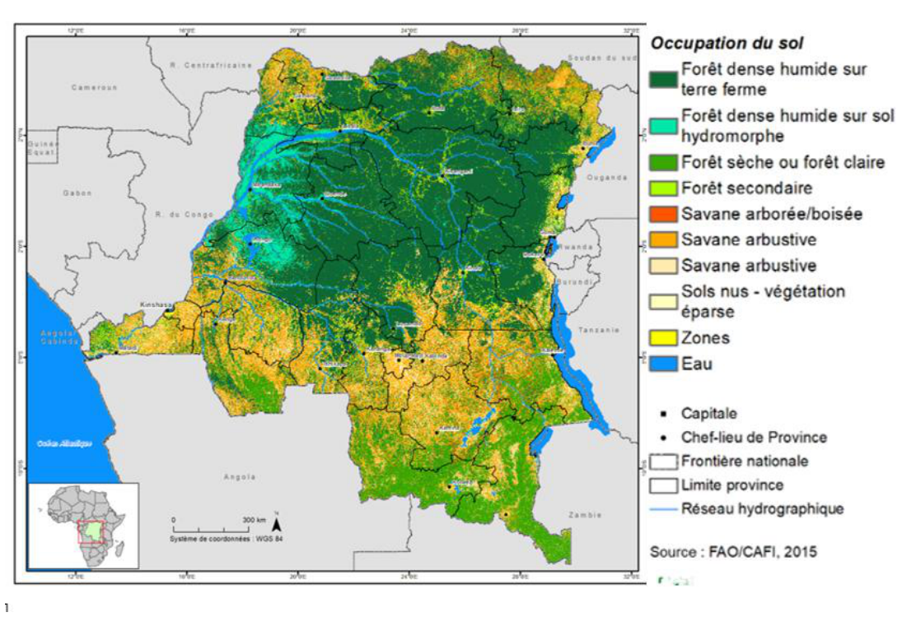
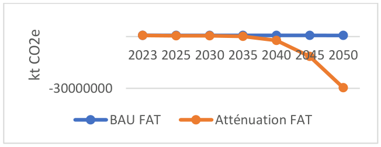
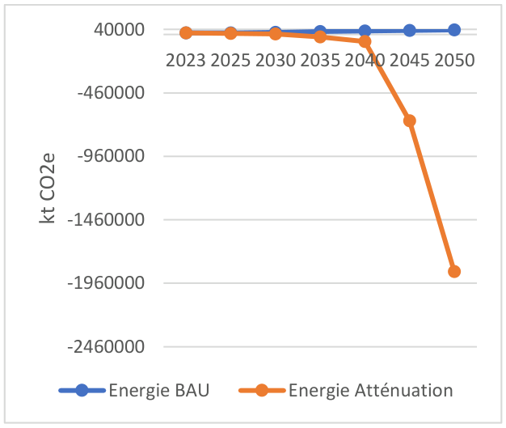
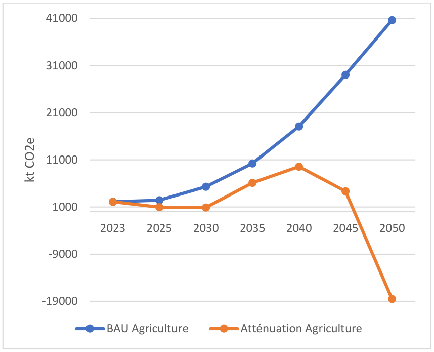
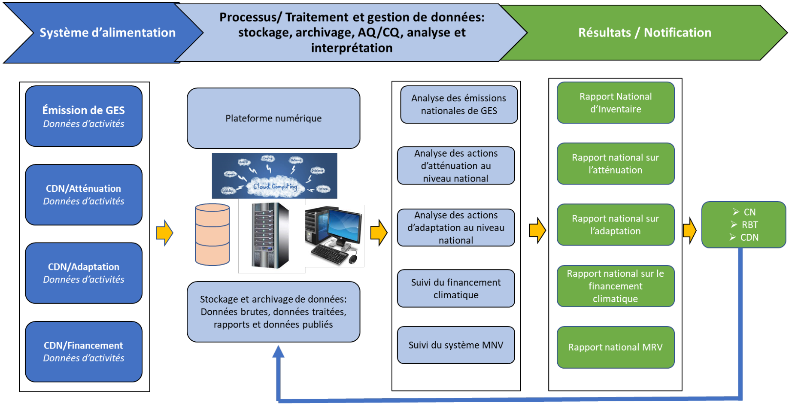

REPUBLIQUE DEMOCRATIQUE DU CONGO
Ministère de l’Environnement, Développement Durable et Nouvelle Economie du Climat
Kinshasa, Octobre 2026
Publié par
Le Ministère de l’Environnement, Développement Durable et Nouvelle Economie du Climat (MEDD-NEC)
Adresse : 2895, Boulevard du Palais de la Nation, Gombe, Kinshasa/ République Démocratique du Congo
Contributions
Groupe de travail spécial sur la Contribution Déterminée à l’échelle Nationale (CDN)
Lieu et date de l’Intervention
Kinshasa, octobre 2026
Bureau et date de publication
Direction de Développement, Durable (DDD), Kinshasa, Octobre 2026
Partenaires
Programme des Nations Unies pour le Développement (PNUD), Initiative pour les forêts de l'Afrique centrale (CAFI) à travers le Fonds National REDD+ (FONAREDD)
La République Démocratique du Congo, Pays-solution face à la crise climatique mondiale, réaffirme à travers la présente Contribution Déterminée à l’échelle Nationale (CDN 3.0) son engagement résolu en faveur de la lutte contre les changements climatiques, conformément aux dispositions de la Convention-Cadre des Nations Unies sur les Changements Climatiques et de l’Accord de Paris.
Dotée du deuxième massif forestier tropical du monde, d’une biodiversité exceptionnelle et des ressources naturelles stratégiques, la RDC joue un rôle essentiel dans la régulation du climat mondial. Toutefois, elle demeure fortement vulnérable aux effets néfastes des changements climatiques, notamment à travers l’augmentation des événements climatiques extrêmes, l’insécurité alimentaire, la dégradation des écosystèmes et la fragilisation des moyens de subsistance des populations.
La présente CDN traduit la vision du Gouvernement visant à concilier à la fois, le développement socio-économique, la réduction de la pauvreté et l’action climatique ambitieuse. Elle présente les priorités nationales en matière d’atténuation des émissions de gaz à effet de serre et d’adaptation aux impacts climatiques, tout en mettant en exergue les besoins en financement, en transfert de technologies et en renforcement des capacités.
La CDN 3.0 représente ainsi une évaluation plus détaillée des mesures d'atténuation et d'adaptation en RDC, fondée sur une collecte de données améliorée, une couverture plus étendue des secteurs (Energie, y compris le Transport ; Agriculture, Foresterie et autres Affectations des Terres ; et Déchets), une analyse technique approfondie et un engagement étendu des parties prenantes. Son objectif ciblé de réduction des émissions de gaz à effet de serre de 21 % d’ici 2035, par rapport au scénario de référence, prend en compte le dioxyde de carbone (CO2), le méthane (CH4) et le protoxyde d’azote (N2O) ainsi que les polluants atmosphériques de courte durée de vie. Cette CDN est conditionnelle. L’inconditionnalité est de 2% du budget total de sa mise en œuvre.
Les mesures et les actions prioritaires en matière d’atténuation portent sur les secteurs et les initiatives stratégiques suivants : la foresterie et autres affectations des terres, l’agriculture et l’élevage, l’énergie et la croissance urbaine, le transport, la gestion des déchets, les solutions fondées sur la nature et le couloir vert Kivu-Kinshasa. Ce choix témoigne de la volonté de concilier croissance économique, transition énergétique et préservation de l’environnement.
Par ailleurs, l’adaptation constitue une priorité nationale absolue. La CDN 3.0 place au cœur de son ambition la réduction de la vulnérabilité et le renforcement de la résilience des communautés locales et peuples autochtones, de l’économie et des écosystèmes. Elle met particulièrement l’accent sur le renforcement de la résilience du secteur agricole, la sécurité alimentaire, la préservation de la biodiversité, la gestion des ressources en eau, l’eau, l’hygiène et l’assainissement.
En outre, l’accès à l’énergie abordable et durable, l’éducation, le développement des infrastructures de santé et la protection de l’enfance, la gouvernance et la cohésion sociale (nexus climat–conflit), y compris la mobilité climatique, la protection des zones côtières et littorales ainsi que les polluants atmosphériques de courte durée de vie, ont été pris en compte.
La réalisation de ces engagements requiert des investissements considérables, estimés à cinquante (50) milliards de dollars américains pour la période 2026–2035. Leur mobilisation dépendra d’une coopération internationale renforcée et de l’accès accru aux mécanismes financiers climatiques innovants.
Cette CDN, fruit d’un processus inclusif et participatif, impliquant les institutions publiques, les collectivités territoriales, la société civile, les communautés locales et peuples autochtones, le secteur privé, le monde académique ainsi que les partenaires techniques et financiers, reflète ainsi la volonté de la RDC de renforcer la gouvernance climatique, d’assurer une gestion durable de ses ressources naturelles et de promouvoir une transition juste et résiliente.
Ensemble, nous avons le devoir et la capacité de transformer la menace climatique en une opportunité historique de bâtir un monde durable, résilient et porteur d’espoir pour les générations présentes et futures.
Prof. Marie NYANGE NDAMBO
Ministre de l’Environnement, Développement Durable et Nouvelle Economie du Climat
|
Sigle |
Signification |
|
AAP |
Autres Aires Protégées |
|
AFAT |
Agriculture, Forêt et Affectation des Terres |
|
AFD |
Agence Française de Développement |
|
AQLI |
Air Quality Life Index |
|
AQ/CQ |
Assurance Qualité / Contrôle Qualité |
|
ARMCA |
Autorité de Régulation du Marché du Carbone |
|
BAD |
Banque Africaine de Développement |
|
BAU |
Business As Usual (scénario tendanciel ou de référence) |
|
BIT |
Bureau International du Travail |
|
BM |
Banque mondiale |
|
BMC |
Bureau du Marché du Carbone |
|
BUR1 |
Premier Rapport Biennal Actualisé (Biennial Update Report 1) |
|
CAFI |
Central African Forest Initiative (Initiative pour les Forêts d’Afrique Centrale) |
|
CAPS |
Climate Adaptation and Peacebuilding Solutions |
|
CCAC |
Climate and Clean Air Coalition (Coalition pour le climat et l’air pur) |
|
CCNUCC |
Convention-Cadre des Nations Unies sur les Changements Climatiques |
|
CDB |
Convention sur la Diversité Biologique |
|
CDN |
Contribution Déterminée au niveau National |
|
CDF |
Franc Congolais |
|
CEDEF |
Convention sur l’élimination de toutes les formes de discrimination à l’égard des femmes |
|
CIFOR |
Center for International Forestry Research |
|
CIFOR-ICRAF |
Center for International Forestry Research - World Agroforestry |
|
CLPE |
Consentement Libre, Préalable et Éclairé |
|
CMO |
Carbon Market Office (Bureau du Marché du Carbone) |
|
CN |
Communication Nationale |
|
COMIFAC |
Commission des Forêts d’Afrique Centrale |
|
CO₂ |
Dioxyde de carbone |
|
CO₂e |
Dioxyde de carbone équivalent |
|
CORSIA |
Carbon Offsetting and Reduction Scheme for International Aviation |
|
DC |
Domaine de Chasse |
|
DDD |
Direction du Développement Durable |
|
DEP |
Direction d’Études et de Planification |
|
DHS |
Demographic and Health Survey (Enquête Démographique et de Santé) |
|
EGI-ODD |
Enquête sur les dépenses des ménages, le niveau de vie et les Objectifs de Développement Durable |
|
EM-DAT |
Emergency Events Data base |
|
ENABEL |
Agence belge de développement |
|
EPIC |
Energy Policy Institute at the University of Chicago |
|
ETF |
Enhanced Transparency Framework (Cadre de transparence renforcé) |
|
FAO |
Organisation des Nations Unies pour l’Alimentation et l’Agriculture |
|
FAO-AQUASTAT |
Système mondial d’information de la FAO sur l’eau et l’agriculture |
|
FAT |
Foresterie et autres affectations des terres |
|
FCPF |
Forest Carbon Partnership Facility |
|
FEM |
Fonds pour l’Environnement Mondial |
|
FIC |
Fonds d’Investissement Climatiques |
|
FNUAP |
Fonds des Nations Unies pour la Population |
|
FONAREDD |
Fonds National REDD de la RDC |
|
Forest Trends |
Forest Trends Association |
|
FVC |
Fonds Vert pour le Climat |
|
GACMO |
Greenhouse Gas Abatement Cost Model |
|
GES |
Gaz à Effet de Serre |
|
GFW |
Global Forest Watch |
|
GIBEC |
Groupe Inter-bailleurs sur l’Environnement et le Climat |
|
GIEC |
Groupe d’experts intergouvernemental sur l’évolution du climat |
|
GIZ |
Deutsche Gesellschaft für Internationale Zusammenarbeit |
|
GPL |
Gaz de Pétrole Liquéfié |
|
GRC |
Gestion des Risques de Catastrophes |
|
GT |
Groupe de Travail |
|
GT AQ/CQ |
Groupe de Travail Assurance Qualité / Contrôle Qualité |
|
HCR |
Haut-Commissariat des Nations Unies pour les Réfugiés |
|
HEI |
Health Effects Institute |
|
HFC |
Hydrofluorocarbures |
|
ICF |
ICF International |
|
ICH |
Indice de Capital Humain |
|
IDH |
Indice de Développement Humain |
|
IGES |
Inventaire des Gaz à Effet de Serre |
|
INERA |
Institut National pour l’Étude et la Recherche Agronomiques |
|
INS |
Institut National de la Statistique |
|
IPC |
Cadre intégré de classification de la sécurité alimentaire (Integrated Food Security Phase Classification) |
|
IPCC |
Intergovernmental Panel on Climate Change |
|
IRENA |
International Renewable Energy Agency |
|
ITIE |
Initiative pour la Transparence dans les Industries Extractives |
|
ITMO |
Internationally Transferred Mitigation Outcomes |
|
JICA |
Japan International Cooperation Agency |
|
KOICA |
Korea International Cooperation Agency |
|
LEAP |
Long-range Energy Alternatives Planning System |
|
MEDD |
Ministère de l’Environnement et Développement Durable |
|
MEDD-NEC |
Ministère de l’Environnement, Développement Durable et Nouvelle Économie du Climat |
|
MECNT |
Ministère de l’Environnement, Conservation de la Nature et Tourisme |
|
METTELSAT |
Agence Nationale de Météorologie et de Télédétection par Satellite |
|
MINAT |
Ministère de l’Aménagement du Territoire |
|
MNV |
Mesure, Notification et Vérification |
|
MRV |
Measurement, Reporting and Verification |
|
MW |
Mégawatt |
|
NDC |
Nationally Determined Contribution |
|
ND-GAIN |
Notre Dame Global Adaptation Initiative |
|
NOAA |
National Oceanic and Atmospheric Administration |
|
O₃ |
Ozone troposphérique |
|
OCDE |
Organisation de Coopération et de Développement Économiques |
|
OCHA |
Office des Nations Unies pour la Coordination des Affaires Humanitaires |
|
ODD |
Objectifs de Développement Durable |
|
OIM |
Organisation Internationale pour les Migrations |
|
OMS |
Organisation Mondiale de la Santé |
|
ONG |
Organisation Non Gouvernementale |
|
PAM |
Programme Alimentaire Mondial |
|
PDNA |
Post-Disaster Needs Assessment |
|
PIB |
Produit Intérieur Brut |
|
PIUP |
Procédés Industriels et Utilisation des Produits |
|
PM2,5 |
Particules fines de diamètre inférieur à 2,5 micromètres |
|
PM10 |
Particules fines de diamètre inférieur à 10 micromètres |
|
PME |
Petites et Moyennes Entreprises |
|
PNA |
Plan National d’Adaptation |
|
PNSD |
Plan National Stratégique de Développement |
|
PNUE |
Programme des Nations Unies pour l’Environnement |
|
PNUD |
Programme des Nations Unies pour le Développement |
|
PPP |
Partenariat Public-Privé |
|
PSE |
Paiement pour Services Environnementaux |
|
PTC |
Plateforme de Concertation Technique sur la CDN |
|
RB |
Réserve de Biosphère |
|
RBT |
Rapport Biennal de Transparence |
|
RC |
Réserve de Chasse |
|
RDC |
République Démocratique du Congo |
|
REDD+ |
Réduction des Émissions dues à la Déforestation et à la Dégradation des Forêts, incluant la conservation, la gestion durable des forêts et l’accroissement des stocks de carbone forestier |
|
RFUK |
Rainforest Foundation UK |
|
RN |
Réserve Naturelle |
|
S&E |
Suivi et Évaluation |
|
SIPRI |
Stockholm International Peace Research Institute |
|
SLCP |
Polluants climatiques à courte durée de vie (Short-Lived Climate Pollutants) |
|
SN-MNV |
Système National de Mesure, Notification et Vérification |
|
SSP2-4.5 |
Shared Socioeconomic Pathway 2, scénario intermédiaire d’émissions |
|
SSP5-8.5 |
Shared Socioeconomic Pathway 5, scénario de fortes émissions |
|
TEC |
Technology Executive Committee |
|
TFFF |
Tropical Forest Finance Facility |
|
UE |
Union Européenne |
|
UNDP |
United Nations Development Programme |
|
UNEP |
United Nations Environment Programme |
|
UNESCO |
Organisation des Nations Unies pour l’Éducation, la Science et la Culture |
|
UNFCCC |
United Nations Framework Convention on Climate Change |
|
UNFPA |
United Nations Population Fund |
|
UNICEF |
Fonds des Nations Unies pour l’Enfance |
|
UTCATF |
Utilisation des Terres, Changement d’Affectation des Terres et Foresterie |
|
WASH |
Water, Sanitation and Hygiene (Eau, Hygiène et Assainissement) |
|
WRI |
World Resources Institute |
|
WWF |
World Wide Fund for Nature |
|
ZCIT |
Zone de Convergence Intertropicale |
La République Démocratique du Congo (RDC) a l’honneur de soumettre sa troisième itération de la Contribution Déterminée au niveau National (CDN 3.0) pour la période 2026-2035 au Secrétariat Exécutif de la Convention-Cadre des Nations Unies sur les Changements Climatiques (CCNUCC), conformément aux dispositions de l’Accord de Paris, notamment ses articles 4.2 et 4.11, ainsi qu’au paragraphe 24 de la décision 1/CP.21.
Bien que faiblement émettrice de gaz à effet de serre (GES), la RDC demeure particulièrement vulnérable aux effets des changements climatiques. Les projections climatiques pour la période 2031-2060 indiquent un réchauffement généralisé sur l’ensemble du territoire national, avec une augmentation des températures moyennes annuelles comprise entre +1,2 °C et +1,6 °C. S’agissant des précipitations, les projections restent incertaines. À l’échelle annuelle, la majorité des modèles climatiques ne prévoient pas de changements significatifs des cumuls moyens dans le bassin central ni dans les savanes du nord et du sud à l’horizon du milieu du siècle. En revanche, un signal plus robuste met en évidence une accentuation de la saisonnalité, caractérisée par des saisons sèches plus longues et des saisons pluvieuses plus courtes, mais marquées par des épisodes de précipitations extrêmes plus intenses.
La RDC est ainsi fortement exposée à une intensification des événements climatiques extrêmes, notamment les inondations récurrentes, les glissements de terrain, les épisodes de sécheresse dans certaines régions ainsi que l’érosion côtière localisée. Ces phénomènes fragilisent les populations, les infrastructures et les écosystèmes. Les projections scientifiques font également état d’une baisse significative de la production agricole, d’une aggravation de l’insécurité alimentaire, d’une recrudescence des maladies hydriques, d’une augmentation des déplacements de populations ainsi que de pertes économiques pouvant atteindre environ 13 % du PIB à l’horizon 2050.
Au regard de la gravité et du coût élevé de ces impacts, l’adaptation constitue une priorité stratégique majeure pour la RDC. À cet égard, le pays réaffirme sa détermination à contribuer activement à la réponse mondiale face aux changements climatiques, dans une perspective de développement durable et de lutte contre la pauvreté.
La lutte contre les Changements Climatiques s’inscrit dans le cadre du Plan National Stratégique de Développement (PNSD 2024-2028), lequel promeut un développement équilibré, inclusif et durable, en cohérence avec les Objectifs de Développement Durable (ODD) à l’horizon 2030. Ce plan repose sur cinq piliers stratégiques étroitement liés aux enjeux climatiques, notamment la sécurité hydrique, énergétique et alimentaire, le développement d’une économie compétitive et sobre en carbone, ainsi que la valorisation et le renforcement de la résilience des ressources naturelles et des écosystèmes face aux changements climatiques. Ce plan s’appuie également sur plusieurs leviers de transformation, notamment le développement du capital humain, le numérique, l’innovation, la recherche, les réformes réglementaires, les instruments économiques et fiscaux ainsi qu’une planification territoriale intégrée.
Dans le but de renforcer la mise en œuvre de sa politique climatique et de rehausser son niveau d’ambition, la RDC a engagé un processus d’élaboration de la CDN 3.0 fondé sur une approche participative et inclusive impliquant l’ensemble des parties prenantes, en particulier les institutions publiques, le secteur privé, la société civile, les femmes et les jeunes. Ce processus a bénéficié de l’appui des Partenaires Techniques et Financiers, notamment le Programme des Nations Unies pour le Développement.
La CDN 3.0 marque une avancée significative par rapport à la CDN 2.0 publiée en 2021, notamment grâce à une plus grande transparence du processus, une amélioration de la qualité des données et un relèvement de l’ambition climatique. Elle renforce les engagements en matière d’atténuation des émissions de GES et vise également à accroître les capacités d’adaptation et de résilience, notamment par l’intégration des polluants atmosphériques de courte durée de vie. Alignée sur les recommandations du premier Bilan Mondial de 2023 — notamment le triplement de la capacité mondiale des énergies renouvelables d’ici 2030, le doublement du rythme d’amélioration de l’efficacité énergétique et la réduction progressive de la production et de l’utilisation du charbon —, la CDN 3.0 représente le niveau d’ambition maximal actuellement envisageable pour la RDC. Elle définit, en tenant compte des circonstances nationales, des objectifs ainsi que des mesures de mise en œuvre conformes au principe des responsabilités communes mais différenciées et des capacités respectives.
Dans le cadre de cette CDN 3.0, la RDC vise une réduction globale des émissions de GES de 21 % par rapport au scénario de référence (BAU) à l’horizon 2035, soit environ 700 MtCO₂e. Cette ambition repose principalement sur la réduction de la déforestation, la préservation des puits de carbone forestiers, la transition énergétique progressive, la gestion durable des déchets urbains, l’amélioration des pratiques agricoles ainsi que le développement des solutions fondées sur la nature. Le scénario de réduction projeté traduit néanmoins des efforts beaucoup plus ambitieux à long terme, avec des réductions absolues atteignant 35 769 098 ktCO₂e à l’horizon 2050. Les taux de réduction progresseraient ainsi de 16 % à 21 % en 2035, puis à 57 % en 2050, traduisant une accélération des efforts climatiques et une efficacité croissante des politiques mises en œuvre après 2040.
La CDN 3.0 a également permis une meilleure structuration des projets d’adaptation et de renforcement de la résilience dans plusieurs secteurs prioritaires. Dans ce cadre, un portefeuille de 40 programmes d’atténuation a été élaboré, nécessitant un financement estimé à 25 milliards USD. Les objectifs de la CDN 3.0 s’inscrivent pleinement dans la mise en œuvre de la feuille de route nationale bas carbone, qui oriente les politiques publiques vers un modèle de développement durable et sobre en carbone à l’horizon 2050.
Par ailleurs, compte tenu de la forte vulnérabilité du pays aux effets des changements climatiques, la CDN 3.0 renforce les actions en matière d’alerte précoce, de prévention des risques climatiques et d’adaptation, dans la perspective de réduire les pertes et préjudices déjà subis par les populations.
À cet effet, 25 programmes d’adaptation ont été identifiés. La CDN 3.0 prévoit également une approche intégrée de prévention et de gestion des risques liés aux événements climatiques extrêmes, afin d’assurer la sécurité et la protection des personnes, des biens et des écosystèmes. Les besoins de financement pour l’adaptation sont estimés à environ 30 milliards USD.
La CDN 3.0 capitalise également sur la dynamique actuelle de développement des marchés carbone en RDC, en reconnaissant le rôle stratégique du secteur privé dans la mobilisation de la finance climatique à travers la valorisation des crédits carbone issus des secteurs des forêts, de l’énergie, de l’agriculture et des déchets. La RDC manifeste ainsi un intérêt marqué pour les mécanismes de marché carbone en vue de mobiliser des financements additionnels. À cette fin, plusieurs initiatives ont déjà été engagées afin d’opérationnaliser les approches coopératives prévues à l’article 6 de l’Accord de Paris et de développer des activités éligibles sur le territoire national.
Sur le plan méthodologique, la RDC met en avant l’importance de l’efficacité économique ainsi que des co-bénéfices environnementaux et sociaux des actions climatiques. À ce titre, l’utilisation de l’indicateur de coût moyen d’abattement sectoriel (USD/t éq.CO₂ réduite) constitue un outil pertinent permettant non seulement d’évaluer la performance sectorielle nationale en matière de réduction des émissions de GES, au regard des investissements requis et des volumes de réduction associés, mais également de faciliter les comparaisons entre pays, groupes de pays et à l’échelle mondiale.
La CDN 3.0 est profondément ancrée dans une approche sociale et promeut une transition juste, équitable et inclusive. Elle intègre pleinement les principes d’équité, d’égalité des genres et de promotion de l’employabilité. Son élaboration a reposé sur un processus participatif ayant mobilisé l’ensemble des parties prenantes politiques et sociétales, notamment les jeunes, les femmes, la société civile, les Directions d’Études et Planification des ministères sectoriels, les points focaux genre ainsi que les représentants des différentes provinces de la RDC.
En plaçant les priorités sociales et territoriales au cœur de sa CDN 3.0, la RDC réaffirme son rôle d’acteur engagé et dynamique dans l’action climatique mondiale. Son engagement ne se limite pas à l’atténuation des émissions de GES, à l’adaptation et au renforcement de la résilience ; il s’étend également à la promotion de la justice sociale et de l’équité, afin que chaque citoyen et chaque territoire puissent bénéficier des retombées positives de cette transition climatique.
La République Démocratique du Congo (RDC) présente sa Contribution Déterminée au niveau National (CDN) pour la période 2026-2035, ci-après dénommée CDN 3.0, conformément aux articles 4.2 et 4.11 de l’Accord de Paris, au paragraphe 24 de la décision 1/CP.21, ainsi qu’à toutes les autres dispositions pertinentes de l’Accord.
La RDC inscrit son action climatique dans le cadre de l’Agenda 2030 pour le Développement Durable, avec pour ambition une transformation structurelle soutenable de son économie. Elle entend contribuer de manière responsable à la réponse mondiale face à l’urgence climatique, à travers la mise en œuvre de politiques, stratégies et plans inclusifs, économiquement efficaces, écologiquement durables et socialement équitables, en cohérence avec les Objectifs de Développement Durable (ODD) adoptés par les Nations Unies.
C’est dans ce cadre global que s’inscrit la nouvelle CDN de la RDC (CDN 3.0), qui constitue une expression actualisée et renforcée de l’ambition climatique nationale, tout en consolidant les exigences de transparence et de redevabilité. Elle intègre l’ensemble des ODD pertinents de l’Agenda 2030, en particulier l’ODD 13 relatif à la lutte contre les changements climatiques et leurs impacts. La CDN 3.0 adopte ainsi une approche intégrée, cohérente et holistique du développement durable.
Bien que faiblement émettrice à l’échelle mondiale, la RDC a toujours soutenu que l’engagement collectif de tous les pays demeure une condition essentielle à la réalisation de l’objectif ultime de la CCNUCC, à savoir la stabilisation des concentrations de gaz à effet de serre dans l’atmosphère afin d’éviter toute perturbation anthropique dangereuse du système climatique.
Dans la continuité de son engagement, la RDC soutient activement l’« Agenda de l’action » lancé depuis l’adoption de l’Accord de Paris, visant à accélérer et à amplifier la lutte contre les changements climatiques. Cet engagement se traduit par la valorisation des partenariats existants, la promotion de nouvelles initiatives, ainsi que l’identification et la diffusion de bonnes pratiques et d’opportunités d’action climatique en faveur d’une transformation durable.
Le premier Bilan mondial de l’Accord de Paris, adopté lors de la COP28/CMA5 à Dubaï, met en évidence l’insuffisance des efforts actuels pour atteindre les objectifs de l’Accord de Paris. Il souligne l’urgence d’une action renforcée afin de maintenir la trajectoire de limitation du réchauffement à 1,5 °C et d’atteindre un pic mondial des émissions avant 2025.
En réponse, la décision 1/CMA.5 encourage les Parties à définir des objectifs de réduction des émissions à l’échelle de l’économie, couvrant l’ensemble des gaz à effet de serre, secteurs et catégories. Elle appelle également à tripler la capacité mondiale en énergies renouvelables et à doubler le rythme moyen annuel d’amélioration de l’efficacité énergétique d’ici 2030. Elle recommande en outre une réduction progressive de l’utilisation du charbon non équipé de dispositifs de captage, la diminution de la dépendance aux combustibles fossiles dans les systèmes énergétiques, ainsi que la promotion des technologies à faibles émissions ou à émissions nulles (paragraphe 28), et l’encouragement de modes de vie et de consommation durables (paragraphe 36), entre autres mesures.
Dans ce contexte, la nouvelle CDN de la RDC prend pleinement en compte les conclusions du premier Bilan mondial adopté à la CMA5. Elle traduit un renforcement significatif de l’ambition climatique nationale, en cohérence avec une trajectoire compatible avec l’objectif de limitation du réchauffement à 1,5 °C et l’atteinte de la neutralité carbone à l’horizon 2050. Elle s’appuie sur les données scientifiques les plus récentes, notamment celles du Groupe d’experts intergouvernemental sur l’évolution du climat (GIEC).
La CDN 3.0 établit une cible de réduction des émissions couvrant l’ensemble de l’économie, tous les gaz à effet de serre, ainsi que l’ensemble des secteurs et catégories d’émissions.
Les orientations issues de la décision 1/CMA.5 sont intégrées, dans la mesure du possible, dans le dispositif national de mise en œuvre, notamment à travers le Plan d’actions (feuille de route) de mise en œuvre de la CDN 3.0 à l’horizon 2035.
Des précisions complémentaires relatives aux orientations du Bilan mondial sont présentées dans le tableau ci-dessous, lequel rassemble les informations nécessaires à la clarté, à la transparence et à la bonne compréhension de la CDN 3.0 de la RDC.
La République Démocratique du Congo présente dans le tableau 1 les informations susceptibles d'améliorer la clarté, la transparence et la compréhension de sa Contribution Déterminée à l’échelle Nationale (CDN 3.0) et ce, conformément aux recommandations et directives du Groupe de travail spécial de l'Accord de Paris (APA).
|
1. Informations quantifiées sur le point de référence (y compris, selon qu’il convient, une année de référence) |
|
|
a. La ou les année(s) de référence, période(s) de référence ou autre(s) point (s) de départ |
2016 |
|
b. Des informations quantifiables sur les indicateurs de référence, leurs valeurs au cours de l’année ou des années de référence, de la période ou des périodes de référence ou d’autres points de départ et, le cas échéant, de l’année cible |
L’indicateur de référence est quantifié sur la base des émissions nationales totales des gaz à effet de serre (GES). Pour l’année de référence (2016), le niveau d’émission était de 1 100 MtCO₂e. |
|
c. Pour ce qui est des stratégies, des plans et des mesures visés au paragraphe 6 de l’article 4 de l’Accord de Paris, ou des politiques et mesures faisant partie des contributions déterminées au niveau national lorsque l’alinéa b) du paragraphe 1 ci-dessus ne s’applique, les Parties doivent fournir d’autres informations pertinentes |
N/A |
|
d. Une cible par rapport à l’indicateur de référence, exprimée numériquement, par exemple, en pourcentage ou en montant de réduction |
Sont considérés comme inconditionnels les engagements dont le financement est garanti, quelle qu’en soit l’origine (nationale ou internationale). Ils englobent non seulement les actions mises en œuvre par l’État sur ses ressources propres, mais aussi les projets et programmes financés par les entreprises publiques, le secteur privé, ainsi que ceux bénéficiant de financements internationaux déjà sécurisés. À l’inverse, les engagements conditionnels sont tributaires de la mobilisation de financements internationaux qui, à ce jour, ne sont pas encore garantis. |
|
e. Des informations sur les sources de données utilisées pour quantifier le(s) point(s) de référence |
La quantification des indicateurs de référence repose sur les données issues de l’inventaire national des émissions de gaz à effet de serre (GES), telles que présentées dans le Rapport national d’inventaire et le Premier rapport biennal de transparence, soumis en décembre 2024 au Secrétariat de la CCNUCC. |
|
f. Des informations sur les circonstances dans lesquelles la Partie peut mettre à jour les valeurs des indicateurs de référence |
L’inventaire national des émissions de gaz à effet de serre (GES) fait l’objet d’un examen régulier par la Direction du Développement Durable, à travers sa Division des changements climatiques, en charge de l’élaboration de cet inventaire. Cet examen est également assuré par la Direction de l’Inventaire et de l’Aménagement Forestier du Ministère de l’Environnement, du Développement Durable et de la Nouvelle Économie du Climat. Ce processus s’appuie sur le Système National de Surveillance des Forêts, qui intègre à la fois l’Inventaire Forestier National et le Système de suivi des terres par satellite. Par ailleurs, les informations relatives aux indicateurs de référence peuvent être mises à jour et recalculées afin de refléter les améliorations méthodologiques continues ainsi que la disponibilité de nouvelles données pertinentes. Les mises à jour effectuées sont documentées dans les rapports soumis à la CCNUCC, notamment dans les rapports biennaux sur la transparence. |
|
2. Calendriers et/ou périodes de mise en œuvre |
|
|
a. Le calendrier et/ou la période de mise en œuvre, y compris les dates de début et de fin, conformément à toute autre décision pertinente adoptée par la Conférence des Parties agissant comme réunion des Parties à l’Accord de Paris (CMA) |
2026 - 2035 |
|
b. Qu’il s’agisse d’un objectif annuel ou pluriannuel, selon le cas |
Objectif en 2035 : 21% |
|
3. Périmètre et couverture |
|
|
a. Une description générale de l’objectif d’atténuation |
Engagement de réduction des émissions des GES de 21% (700 Mt éq.CO2) en 2035, comparé au scénario CNA avec les financements sécurisés aux niveaux domestique et international. |
|
b. Les secteurs, gaz, catégories et réservoirs visés par la contribution déterminée au niveau national, y compris, le cas échéant, conformément aux lignes directrices du Groupe d’experts Intergouvernemental sur l’Evolution du Climat (GIEC) |
La Contribution Déterminée au niveau National (CDN) couvre l’ensemble de l’économie nationale. Elle reflète toutes les émissions et absorptions de gaz à effet de serre, telles que rapportées dans le premier Rapport Biennal de Transparence (BTR1) qui sera publié en décembre 2026. Elle englobe en particulier :
En outre, toutes les catégories d’émissions et d’absorptions définies dans les lignes directrices du GIEC (2006), présentes sur le territoire de la RDC, sont prises en compte dans la CDN. |
|
c. La façon dont la Partie a pris en considération les alinéas c) et d) du paragraphe 31 de la Décision 1/CP.21 |
La CDN de la RDC couvre l’ensemble des catégories d’émissions et d’absorptions anthropiques estimées dans son inventaire des gaz à effet de serre (GES). Aucune source, aucun puits, aucun secteur ni aucune activité pris en compte dans les versions précédentes de la CDN n’a été exclu dans la présente mise à jour. Une attention particulière a été accordée à l’intégration des polluants atmosphériques à courte durée de vie. Seules les catégories d’émissions ou d’absorptions anthropiques inexistantes dans le pays ne sont pas couvertes. Les efforts se concentrent actuellement sur les secteurs présentant le plus fort potentiel d’atténuation, ainsi que les meilleures perspectives de mise en œuvre. Ils sont également alignés sur l’analyse par catégories clés de l’inventaire national des émissions de GES. |
|
d. Les retombées bénéfiques dans le domaine de l’atténuation résultant des mesures d’adaptation et/ou des plans de diversification économique des Parties, y compris la description des projets, actions et initiatives ayant trait en particulier aux mesures d’adaptation et/ou aux plans de diversification économique des Parties |
Les actions d’adaptation mises en œuvre en RDC génèrent d’importantes retombées bénéfiques en matière d’atténuation du changement climatique grâce à des approches intégrées et multisectorielles. En combinant agriculture durable, gestion forestière et accès à l’énergie propre, ces initiatives contribuent simultanément à réduire la déforestation, à promouvoir les énergies renouvelables et à favoriser une transition vers une économie sobre en carbone, tout en améliorant les conditions de vie des populations. Par ailleurs, le renforcement des puits de carbone naturels, notamment à travers le reboisement, la lutte contre l’exploitation forestière illégale et les programmes REDD+, permet d’accroître l’absorption du CO₂, de préserver la biodiversité et de soutenir l’atténuation à l’échelle globale. Les politiques d’adaptation encouragent également des moyens de subsistance résilients, tels que la diversification des revenus, les pratiques agricoles climato-intelligentes et les systèmes énergétiques alternatifs, réduisant ainsi la pression sur les forêts, la dépendance au bois-énergie et les émissions liées aux pratiques non durables. En outre, la transition vers une économie verte, appuyée par la transformation locale des ressources et la création de chaînes de valeur, contribue à limiter les émissions liées au transport et à l’exploitation intensive, tout en promouvant des industries plus propres. Enfin, l’amélioration de la résilience des communautés et des institutions, grâce à divers programmes de soutien, réduit la dépendance aux pratiques destructrices et favorise une gestion durable des ressources naturelles, entraînant ainsi une diminution indirecte des émissions de gaz à effet de serre. |
|
4. Processus de planification |
|
|
a. Des informations sur les processus de planification que la Partie a suivi pour élaborer sa contribution déterminée au niveau national et, si elles sont disponibles, sur les plans de mise en œuvre de la Partie, y compris, le cas échéant : |
La participation inclusive et structurée des parties prenantes a été au cœur de l’évaluation de la CDN 2.0 et de l’élaboration de la CDN 3.0, garantissant transparence, appropriation nationale et représentativité des acteurs (institutions, collectivités, société civile, groupes vulnérables et partenaires). L’évaluation de la CDN 2.0 s’est appuyée sur une plateforme de concertation technique qui a permis d’identifier les progrès, les défis et les leçons clés pour orienter la CDN 3.0. L’élaboration de la CDN 3.0 a intégré des consultations ciblées incluant jeunes, parlementaires, institutions publiques, société civile et peuples autochtones, afin d’assurer l’équité, l’alignement politique et l’inclusion sociale. Des consultations provinciales ont également permis de prendre en compte les réalités territoriales. Les partenaires techniques et financiers ont été impliqués pour assurer la cohérence avec les engagements internationaux et les mécanismes de financement. Le processus s’est conclu par un atelier national de validation, dont les recommandations ont été intégrées avant l’adoption officielle par le Conseil des Ministres. |
|
i. Les dispositifs institutionnels, la participation du public et la collaboration avec les communautés locales et les peuples autochtones, en tenant compte des questions de genre. ii. Questions contextuelles, y compris, entre autres, selon le cas : |
En RDC, la gestion des ressources naturelles repose sur un ensemble d’institutions publiques, de cadres juridiques et d’engagements internationaux visant à promouvoir la conservation de l’environnement, la participation citoyenne et l’inclusion des communautés locales. 1. Cadre institutionnel et juridique La gouvernance environnementale est principalement assurée par le Ministère de l’Environnement, Développement Durable et Nouvelle Economie du Climat, appuyé par l’Institut Congolais pour la Conservation de la Nature (ICCN) et l’Agence Congolaise de l’Environnement (ACE), chargée des évaluations d’impact environnemental et social. Ce dispositif est renforcé par le Code forestier de 2002, qui reconnaît certains droits communautaires à travers les concessions forestières des communautés locales (CFCL), ainsi que par les engagements internationaux tels que l’Accord de Paris. Cependant, l’efficacité de ce cadre reste limitée par une faible application des textes, une coordination institutionnelle insuffisante et des contraintes de capacités techniques et financières. 2. Participation du public La participation citoyenne est intégrée dans les procédures, notamment via les consultations publiques obligatoires dans les études d’impact environnemental et social (EIES), l’implication de la société civile, ainsi que les mécanismes du programme REDD+. Néanmoins, cette participation demeure souvent formelle. Elle est freinée par un accès limité à l’information, un manque de transparence dans certains projets extractifs et une implication réelle encore insuffisante des populations rurales. 3. Collaboration avec les communautés locales et peuples autochtones La RDC reconnaît progressivement le rôle des communautés locales et des peuples autochtones, notamment à travers les CFCL, la loi de 2022 sur la protection des peuples autochtones, et certaines initiatives de cogestion des aires protégées. Malgré ces avancées, des défis importants persistent, notamment les conflits fonciers, la reconnaissance incomplète des droits coutumiers et la marginalisation socio-économique des peuples autochtones. 4. Prise en compte du genre L’intégration du genre progresse dans les politiques environnementales, avec une participation croissante des femmes dans les projets de gestion des ressources naturelles et les programmes climatiques comme REDD+. Des stratégies nationales encouragent également leur inclusion. Toutefois, des inégalités persistent, liées à l’accès limité des femmes à la terre et aux ressources, à leur faible représentation dans les instances décisionnelles et à des normes socioculturelles restrictives. |
|
ii (a). La situation nationale, notamment la géographie, le climat, l’économie, le développement durable et l’élimination de la pauvreté |
La RDC est l’un des plus vastes États du monde et le plus grand d’Afrique, avec une superficie d’environ 2,34 millions de km². Située en Afrique centrale, elle partage ses frontières avec neuf pays, ce qui lui confère une position géostratégique majeure au cœur du continent. Son territoire est dominé par le bassin du fleuve Congo, qui couvre près de 60 % du pays et abrite la deuxième plus grande forêt tropicale humide du monde après l’Amazonie, avec environ 1,7 million de km². Le fleuve Congo, long de plus de 4 700 km, constitue un axe vital pour la navigation et représente un potentiel hydroélectrique estimé à plus de 100 GW, notamment au site d’Inga. Le relief est contrasté, avec au centre de vastes plaines et dépressions forestières, à l’est et au sud des plateaux élevés, et à l’est une chaîne volcanique active incluant la région du rift Albertin. Le pays abrite également des espaces naturels d’importance mondiale comme le parc national des Virunga, classé au patrimoine mondial de l’UNESCO, et le parc national de Kahuzi-Biega, connu pour la protection des gorilles de plaine orientale. Le climat est majoritairement équatorial, chaud et humide, avec des températures moyennes comprises entre 24 et 27 °C, et des précipitations abondantes dépassant souvent 1 500 à 2 000 mm par an dans le centre du pays, favorisant une forêt dense et une biodiversité exceptionnelle. Dans le sud et l’est, le climat devient tropical avec une alternance plus marquée entre saisons sèches et humides, influençant fortement les activités agricoles. Sur le plan économique, malgré une richesse naturelle exceptionnelle, le pays reste peu industrialisé et dispose de ressources stratégiques majeures, notamment environ 70 % de la production mondiale de cobalt, ainsi que d’importantes réserves de cuivre, d’or, de diamants et de colombite-tantalite (coltan), sans oublier un potentiel agricole encore sous-exploité et un vaste potentiel hydroélectrique. L’agriculture, centrée sur le manioc, le maïs, le café et le cacao, emploie la majorité de la population mais reste peu mécanisée, tandis que les secteurs extractifs dominent les exportations malgré des problèmes structurels tels que l’insécurité, la corruption et la faiblesse des infrastructures. Le développement durable en RDC repose sur un équilibre entre exploitation économique et protection environnementale, mais il fait face à des défis importants comme la déforestation du bassin du Congo, l’exploitation minière artisanale parfois destructrice, la pollution des sols et des cours d’eau, ainsi que la pression démographique dépassant 100 millions d’habitants en 2026. Cependant, le pays dispose aussi d’opportunités majeures, notamment son rôle de puits de carbone mondial grâce à sa forêt, le développement des énergies renouvelables comme l’hydroélectricité et le solaire, ainsi que la présence d’aires protégées comme Virunga et Kahuzi-Biega. Enfin, malgré ses richesses, la RDC connaît un taux de pauvreté élevé, avec plus de 60 % de la population vivant sous le seuil de pauvreté selon plusieurs estimations, en raison notamment de l’instabilité politique, du manque d’infrastructures, de l’accès limité aux services sociaux et du chômage élevé. Les solutions prioritaires reposent sur la bonne gouvernance et la lutte contre la corruption, l’investissement dans l’éducation et la santé, la modernisation de l’agriculture, la transformation locale des ressources naturelles et le développement des infrastructures énergétiques et de transport. |
|
ii (b). Les meilleures pratiques et l’expérience tirées de la CDN |
La RDC, dotée du deuxième massif forestier tropical mondial, place le secteur forêt/UTCATF au cœur de sa politique climatique. Sa CDN révisée (2021) vise une réduction de 21 % des émissions de GES d’ici 2030, sous condition de soutien international, avec un accent particulier sur les forêts, considérées comme un levier central pour faire du pays un « pays-solution ». Dans ce cadre, le REDD+ constitue l’instrument opérationnel principal pour traduire les ambitions climatiques dans le secteur forestier. Le processus REDD+ permet de concrétiser la CDN à travers plusieurs axes complémentaires. Il agit directement sur la réduction des émissions en luttant contre la déforestation et la dégradation des forêts, en promouvant la gestion durable et la conservation des stocks de carbone. Il se déploie également à l’échelle territoriale via des programmes intégrés comme les PIREDD, qui combinent agriculture durable, agroforesterie, gouvernance foncière et solutions énergétiques alternatives. Sur le plan institutionnel, il s’appuie sur une architecture structurée comprenant la coordination nationale REDD+, le FONAREDD et des systèmes de suivi forestier (MNV/SNSF). Enfin, il facilite la mobilisation de financements climatiques internationaux et l’élaboration de plans d’investissement alignés sur la CDN. L’expérience de mise en œuvre en RDC a permis de dégager plusieurs bonnes pratiques. D’abord, une gouvernance multi-acteurs structurée impliquant l’État (notamment le MEDD), les bailleurs et les ONG, favorise la cohérence entre politiques et actions. Ensuite, l’approche intégrée des territoires, incarnée par les PIREDD, constitue une innovation majeure en combinant plusieurs secteurs (forêts, agriculture, énergie et développement local). Par ailleurs, le système de suivi, notification et vérification (MNV) renforce la transparence et la crédibilité internationale du pays, tout en facilitant l’accès aux financements basés sur les résultats. Cette logique de financement axé sur la performance marque un passage important vers des résultats mesurables. De plus, la participation des communautés locales, des peuples autochtones, des femmes et des jeunes renforce l’appropriation et la durabilité des actions. Enfin, l’alignement progressif entre REDD+, CDN et politiques de développement national améliore la cohérence stratégique globale. Cependant, plusieurs enseignements critiques se dégagent. La réussite des politiques climatiques repose sur une synergie effective entre protection des forêts et développement économique, afin de générer des alternatives aux revenus liés à la déforestation. La forte dépendance au financement international souligne la nécessité de renforcer les ressources domestiques. Les conflits liés à la gouvernance foncière demeurent un facteur majeur de déforestation, appelant à une sécurisation accrue des terres. Les capacités institutionnelles et techniques restent limitées, notamment en matière de données fiables et de suivi. Enfin, la coordination multisectorielle entre énergie, agriculture et forêts demeure complexe et nécessite une planification intégrée plus robuste. En synthèse, l’expérience de la RDC montre que la mise en œuvre conjointe de la CDN et du REDD+ repose sur une gouvernance structurée, des programmes territoriaux intégrés, un système de suivi crédible, un financement basé sur les résultats et une forte participation communautaire. Toutefois, les défis persistants liés au financement, à la pression sur les forêts, à la gouvernance foncière et à la coordination sectorielle limitent encore pleinement l’efficacité de ces dispositifs |
|
ii (c). D’autres aspirations et priorités contextuelles reconnues lors de l’adhésion à l’Accord de Paris |
Dans le cadre de l’Accord de Paris, la République Démocratique du Congo (RDC) a défini ses priorités climatiques en fonction de ses réalités de développement et de sa forte vulnérabilité. Elle se positionne comme un « pays-solution », grâce à ses forêts du bassin du Congo, sa biodiversité et son potentiel en énergies renouvelables, ce qui lui permet de contribuer à la régulation climatique mondiale au-delà de la simple réduction des émissions. La RDC met aussi l’accent sur le développement durable, en liant l’action climatique à la lutte contre la pauvreté, l’accès à l’énergie et l’amélioration des conditions de vie. Dans ce contexte, elle accorde une importance majeure à l’adaptation au changement climatique, notamment pour renforcer la résilience des populations, protéger les écosystèmes et gérer les risques climatiques. Un autre axe essentiel est la valorisation des forêts, à travers la lutte contre la déforestation et la participation au mécanisme REDD+, qui permet d’accéder à des financements carbone. Par ailleurs, la RDC insiste sur la nécessité d’un soutien financier et technologique international, en accord avec le principe de justice climatique et de responsabilités communes mais différenciées. Enfin, le pays considère comme prioritaire le renforcement de la gouvernance climatique, incluant la transparence, la coordination institutionnelle et l’implication des communautés locales dans les politiques environnementales. |
|
b. Des informations spécifiques applicables aux Parties, y compris aux organisations d’intégration économique régionale et à leurs États membres, qui se sont mises d’accord pour agir conjointement en application du paragraphe 2 de l’article 4 de l’Accord de Paris, notamment les Parties qui ont décidé d’agir conjointement et les termes de l’accord pertinent, conformément aux paragraphes 16 à 18 de l’article 4 de l’Accord de Paris |
N/A |
|
c. La façon dont l’élaboration de la Partie de sa CDN a été éclairée par les résultats du bilan mondial, conformément au paragraphe 9 de l’article 4 de l’Accord de Paris d. Chaque Partie ayant une CDN au titre de l’article 4 de l’Accord de Paris, qui consiste en des mesures d’adaptation et/ou des plans de diversification économique à l’origine de retombées bénéfiques dans le domaine de l’atténuation conformément au paragraphe 7 de l’article 4 de l’Accord de Paris, doit soumettre des informations sur : |
Le Bilan mondial issu de la COP28 met en évidence un déficit global d’ambition climatique, confirmant que les engagements actuels des États ne permettent pas de limiter le réchauffement à 1,5°C. Face à ce constat, la RDC a révisé sa Contribution Déterminée au niveau National (CDN) afin de renforcer son alignement avec les objectifs de l’Accord de Paris. D’abord, la RDC rehausse son niveau d’ambition climatique, en intégrant une trajectoire plus cohérente avec 1,5°C. Cela se traduit par un accent renforcé sur la lutte contre la déforestation, la transition énergétique et la réduction des émissions dans les secteurs clés. Ensuite, la CDN accorde une place plus importante à l’adaptation, en réponse à l’accélération des impacts climatiques. Les priorités concernent notamment l’agriculture, la gestion de l’eau, la résilience des communautés vulnérables et les solutions fondées sur la nature, en particulier les forêts du bassin du Congo. Par ailleurs, le document intègre davantage la question des pertes et dommages, en reconnaissant les impacts irréversibles du changement climatique et la nécessité d’un soutien international renforcé. La RDC souligne également le caractère conditionnel de certaines actions, dépendant des financements climatiques, du transfert de technologies et du renforcement des capacités, conformément aux enseignements du Bilan mondial. En outre, la CDN améliore ses mécanismes de mise en œuvre, de suivi et de transparence, afin de rendre les objectifs plus mesurables et vérifiables, en cohérence avec l’Accord de Paris. Enfin, une attention particulière est accordée aux puits de carbone, notamment les forêts du bassin du Congo, dont la protection et la gestion durable sont centrales dans la stratégie climatique du pays. |
|
i. La façon dont les conséquences économiques et sociales des mesures de riposte sont-elles été prises en compte dans l’élaboration de la CDN |
N/A |
|
ii. Les projets, mesures et activités de nature particulière à mettre en œuvre pour contribuer aux retombées bénéfiques dans le domaine de l’atténuation, y compris des informations sur les plans d’adaptation qui produisent également des retombées bénéfiques dans le domaine de l’atténuation, qui peuvent viser, sans s’y limiter, des secteurs clés, tels que l’énergie, les ressources, les ressources en eau, les ressources côtières, les établissements humains et la planification urbaine, l’agriculture et les forêts ; et des mesures de diversification économique, qui peuvent viser, sans toutefois s’y limiter, des secteurs tels que les activités manufacturières et l’industrie, l’énergie et les mines, les transports et les communications, la construction, le tourisme, l’immobilier, l’agriculture et la pêche. |
La RDC occupe une place stratégique dans les enjeux climatiques mondiaux grâce à l’ampleur de ses ressources naturelles et à sa forte dynamique démographique. Elle dispose du deuxième plus grand massif forestier tropical au monde, couvrant environ 200 millions d’hectares, capable d’absorber entre 1,2 et 1,5 milliard de tonnes de CO₂ par an. Le pays possède également un potentiel hydroélectrique exceptionnel estimé à plus de 100 GW, dont le site d’Inga représente à lui seul une part majeure. Cependant, cette richesse s’inscrit dans un contexte de forte croissance urbaine, notamment à Kinshasa (environ 17 à 18 millions d’habitants), d’un taux d’urbanisation supérieur à 4 % par an, et d’une économie largement agricole (environ 70 % de la population active), avec une exploitation encore limitée des terres arables. Ainsi, la RDC fait face à un défi central : concilier développement économique, pression environnementale et vulnérabilité climatique. Pour répondre à ces enjeux, plusieurs politiques et projets sont développés dans des secteurs clés. Dans l’énergie, l’hydroélectricité (notamment Inga III), les mini-réseaux solaires et la réduction du diesel urbain visent à réduire les émissions tout en améliorant l’accès à l’électricité, particulièrement en zone rurale. Dans le secteur forestier, les programmes REDD+, le reboisement et la lutte contre l’exploitation illégale cherchent à limiter la déforestation, tout en protégeant des populations fortement dépendantes des forêts et en améliorant la gestion durable des terres. En agriculture, la promotion de l’agroforesterie, la réduction du brûlis et l’adoption de pratiques agricoles résilientes permettent à la fois de diminuer les émissions et de renforcer l’adaptation aux aléas climatiques, dans un contexte où l’irrigation reste très limitée. La gestion de l’eau repose sur la protection des bassins versants, les systèmes d’alerte contre les inondations et l’amélioration de l’accès à l’eau potable, encore insuffisant pour près de la moitié de la population. Enfin, les villes, en particulier Kinshasa, développent des stratégies de résilience urbaine à travers le drainage, l’urbanisme et les transports publics afin de limiter les impacts des inondations et de la croissance urbaine rapide. Par ailleurs, la RDC cherche à diversifier son économie dans une perspective plus verte. Cela passe par la transformation locale des ressources minières et agricoles afin de réduire l’exportation de matières premières brutes, par l’électrification plus propre des sites miniers, ainsi que par le renforcement des normes environnementales. Le développement des transports collectifs, la digitalisation et l’optimisation logistique participent également à la réduction des émissions. Le tourisme durable, notamment dans les parcs nationaux riches en biodiversité, représente aussi un levier économique important, tout comme la transformation agroalimentaire et l’aquaculture visant à réduire les pertes et renforcer les chaînes de valeur locales. Enfin, un aspect essentiel réside dans les Co-bénéfices entre adaptation et atténuation. De nombreuses actions combinent simultanément réduction des émissions et renforcement de la résilience : l’agroforesterie améliore la sécurité alimentaire tout en stockant du carbone, les programmes REDD+ génèrent des revenus tout en protégeant les forêts, l’hydroélectricité soutient une énergie propre et stable, tandis que l’urbanisme durable et la gestion des bassins versants réduisent à la fois les émissions et les risques de catastrophes naturelles. Ainsi, la transition climatique en RDC repose sur une logique intégrée où développement, protection environnementale et résilience sont étroitement liés. |
|
5. Hypothèses et démarches méthodologiques, y compris celles concernant l’estimation et la comptabilisation des émissions anthropiques de gaz à effet de serre et, le cas échéant, des absorptions anthropiques : |
|
|
a. Les hypothèses et démarches méthodologiques utilisées pour comptabiliser les émissions et les absorptions anthropiques de gaz à effet de serre correspondant à la contribution de la Partie déterminée au niveau national, conformément au paragraphe 31 de la décision 1/CP.21 et aux directives pour la comptabilisation adoptées par la CMA |
La RDC applique les lignes directrices du Groupe d’experts intergouvernemental sur l’évolution du climat (GIEC) de 2006 pour la comptabilisation des émissions et absorptions anthropiques de gaz à effet de serre (GES). Cette approche est conforme aux dispositions du paragraphe 31 de la décision 1/CP.21, ainsi qu’aux exigences de l’article 4.13 de l’Accord de Paris, des paragraphes 13 à 17 de la décision 4/CMA.1 et de son annexe II. À ce titre, la RDC utilise les lignes directrices du GIEC (2006) pour l’estimation des émissions et absorptions, en recourant aux potentiels de réchauffement global (PRG) à 100 ans issus du sixième rapport d’évaluation (AR6), à l’exception de la valeur relative au méthane fossile. Les projections sont élaborées à l’aide du modèle GACMO (Greenhouse Gas Abatement Cost Model), un outil de simulation sous Excel permettant de projeter les émissions de GES, d’évaluer les coûts d’atténuation et de concevoir des stratégies de réduction fondées sur des données robustes. |
|
b. Les hypothèses et démarches méthodologiques utilisées pour comptabiliser la mise en œuvre des politiques et mesures ou des stratégies dans la contribution déterminée au niveau national |
Dans le cadre de la République Démocratique du Congo (RDC), la comptabilisation de la mise en œuvre des politiques et mesures inscrites dans la Contribution Déterminée au niveau National (CDN) s’appuie sur un cadre méthodologique conforme aux exigences de la CCNUCC et aux lignes directrices du GIEC, tout en intégrant des hypothèses nationales adaptées. Elle repose d’abord sur une cohérence avec l’inventaire national des gaz à effet de serre, ce qui permet d’utiliser les mêmes données de base et les mêmes catégories sectorielles afin d’assurer l’harmonisation des estimations. Les réductions d’émissions sont ensuite évaluées par rapport à un scénario de référence dit Business As Usual (BAU), supposant une évolution des émissions en l’absence de politiques climatiques supplémentaires, tandis que le principe d’additionnalité garantit que seules les actions explicitement inscrites dans la CDN (énergie, agriculture, forêts/AFAT et déchets) sont prises en compte. Sur le plan méthodologique, la RDC applique les lignes directrices du GIEC 2006 pour l’estimation des émissions et des absorptions, en utilisant des facteurs d’émission standardisés ou adaptés au contexte national, ce qui assure la comparabilité, la transparence et la robustesse technique des résultats. Cette approche est complétée par un dispositif de Mesure, Notification et Vérification (MNV/MRV), qui permet le suivi des actions climatiques à travers la collecte de données sectorielles, la production de rapports réguliers et la vérification des résultats obtenus. La comptabilisation des politiques suit une démarche structurée comprenant l’identification des actions, le calcul des émissions évitées par secteur, leur agrégation, puis leur comparaison au scénario BAU afin de déterminer le taux de réalisation de la CDN. Par ailleurs, ces estimations sont dynamiques et peuvent être révisées en fonction de l’amélioration des inventaires nationaux, de l’évolution des données ou de la mise à jour des méthodes. Les données mobilisées proviennent principalement des institutions nationales, complétées par des sources internationales comme la FAO et la Banque mondiale, notamment pour les secteurs agricoles et forestiers. Enfin, certaines hypothèses sectorielles structurantes sous-tendent l’ensemble du dispositif, notamment le rôle central du secteur forêt/AFAT comme puits de carbone, le développement progressif des énergies renouvelables, l’amélioration graduelle des systèmes de collecte de données et une forte dépendance à des financements externes pour la mise en œuvre de certaines mesures climatiques. |
|
c. Le cas échéant, des informations sur la façon dont la Partie tiendra compte des méthodes et directives en vigueur au titre de la Convention pour comptabiliser les émissions et absorptions anthropiques, conformément au paragraphe 14 de l’article 4 de l’Accord de Paris, selon qu’il convient |
N/A |
|
d. Les méthodes et paramètres de mesure du GIEC qui servent à estimer les émissions et les absorptions anthropiques de gaz à effet de serre e. Les hypothèses, méthodologies et méthodes propres à un secteur, à une catégorie ou à une activité, conformes aux lignes directrices du GIEC, selon qu’il convient, y compris, le cas échéant : |
|
|
i. La démarche suivie pour traiter les émissions et les absorptions ultérieures des perturbations naturelles sur les terres exploitées |
Toutes les émissions et absorptions déclarées dans l’inventaire de GES de la RDC sont inclues dans la CDN, sans approche spécifique pour exclure les émissions dues aux perturbations naturelles. |
|
ii. la démarche suivie pour comptabiliser les émissions et les absorptions des produits ligneux récoltés |
Pour le cas de la RDC (comme pour tout pays Partie à la CCNUCC), la comptabilisation des émissions et absorptions liées aux produits ligneux récoltés (PLR / HWP – Harvested Wood Products) suit principalement les lignes directrices du GIEC (IPCC 2006 et le 2019 Refinement), intégrées dans l’inventaire national des gaz à effet de serre. |
|
iii. La démarche suivie pour traiter les effets de la structure des classes d’âge dans les forêts |
Dans les forêts tropicales du bassin du Congo en RDC, la prise en compte de la structure des classes d’âge s’inscrit dans une démarche sylvicole progressive adaptée à des écosystèmes irréguliers et multi-âges. Elle commence par un diagnostic des peuplements à partir d’inventaires forestiers, de la répartition des diamètres, de l’identification des essences et de l’analyse de la régénération naturelle, afin de déterminer l’état d’équilibre ou de déséquilibre de la forêt. Ensuite, l’analyse des effets de cette structure permet d’évaluer son impact sur la productivité, la régénération des espèces commerciales, la stabilité écologique, le stockage du carbone et la disponibilité future en bois, en tenant compte des déséquilibres causés par les coupes sélectives. Cette compréhension est complétée par la modélisation de la dynamique forestière, qui simule la croissance, la mortalité et l’évolution des classes de diamètre selon différents scénarios d’exploitation, afin d’en tester la durabilité. Sur cette base, des règles d’aménagement durable sont définies, notamment le diamètre minimum d’exploitation, les rotations de coupe et les volumes annuels autorisés, dans le but de maintenir un équilibre entre les classes d’âge. Ces principes sont ensuite appliqués à travers des plans d’aménagement forestier, une exploitation sélective contrôlée et la protection des jeunes arbres et semenciers. Enfin, un suivi régulier permet d’ajuster les pratiques grâce à des re-inventaires et à l’adaptation des quotas et méthodes en fonction des évolutions écologiques et des pressions climatiques ou humaines. |
|
f. Les autres hypothèses et démarches méthodologiques utilisées pour comprendre la contribution déterminée au niveau national et, le cas échéant, estimer les émissions et les absorptions correspondantes, notamment : |
Dans le cadre de sa Contribution Déterminée au niveau National (CDN), la RDC a défini un ensemble d’indicateurs et de niveaux de référence permettant de mesurer et de suivre, de manière transparente, cohérente et traçable, ses efforts d’atténuation des émissions de gaz à effet de serre (GES). Année de référence : l’année 2016 a été retenue comme année de référence. Elle constitue la base historique permettant d’évaluer les efforts d’atténuation. Ce choix est motivé par la disponibilité, à cette date, de données nationales consolidées sur les émissions de GES ainsi que sur les statistiques sectorielles. Scénario de référence : la RDC utilise un scénario de type « cours normal des affaires » (CNA) pour estimer l’évolution future des émissions en l’absence de nouvelles mesures d’atténuation après 2016. Ce scénario intègre les tendances observées entre 2000 et 2016, notamment les dynamiques démographiques, économiques et sectorielles. Niveaux de référence quantitatifs : les objectifs d’atténuation de la CDN 3.0 de la RDC sont définis par rapport aux niveaux d’émissions projetés à l’horizon 2035 selon le scénario de référence CNA. |
|
i. La façon dont les indicateurs de référence, le(s) niveau(x) de référence, y compris, le cas échéant, les niveaux de référence propres à un secteur, à une catégorie ou à une activité, sont construits, y compris, par exemple, les principaux paramètres, hypothèses, définitions, méthodes, sources de données et modèles utilisés |
Les indicateurs et niveaux de référence sont élaborés selon une logique structurée visant à garantir la comparabilité dans le temps et entre secteurs, la fiabilité des données, la transparence des méthodes et leur alignement avec les standards nationaux et internationaux. Leur construction repose sur un ensemble de paramètres adaptés aux secteurs concernés (forêt, énergie, agriculture, mines, etc.), incluant principalement les données d’activité (production, superficies, émissions), les facteurs d’émission, les tendances historiques, les données socio-économiques (population, PIB, emploi), les données géospatiales issues de la télédétection, ainsi que les capacités techniques des installations. Ces références sont fondées sur des hypothèses centrales telles que la continuité des tendances en l’absence d’intervention, la stabilité ou l’évolution progressive des variables économiques, le maintien des pratiques actuelles dans un scénario de type « business as usual », ainsi que la disponibilité et la qualité constantes des données, avec une certaine homogénéité des comportements sectoriels. Les notions clés distinguent l’indicateur de référence, qui mesure une performance ou une évolution, le niveau de référence servant de base de comparaison, le niveau sectoriel propre à chaque domaine, et le niveau ajusté tenant compte des spécificités nationales, notamment en RDC. La construction de ces niveaux s’appuie sur plusieurs méthodes complémentaires : l’analyse historique basée sur des séries temporelles, la modélisation statistique et économétrique, l’approche spatiale par SIG et télédétection, ainsi que la construction de scénarios prospectifs incluant des trajectoires de type business as usual ou alternatives. Ces démarches mobilisent diverses sources de données, notamment les administrations sectorielles, l’Institut National de la Statistique, les enquêtes de terrain, les images satellites, les bases internationales, les rapports d’entreprises et les données des ONG. Selon les secteurs, différents modèles sont utilisés, allant des projections d’émissions et de croissance économique aux modèles de changement d’usage des terres et aux systèmes intégrés environnement-économie, complétés par des outils de télédétection. Enfin, ces références sont ajustées au contexte spécifique de la RDC, marqué par une forte hétérogénéité territoriale, des limites d’accès aux données, une pression importante sur les ressources naturelles, l’impact des conflits et de l’insécurité, ainsi que le poids de l’économie informelle. |
|
ii. Pour les Parties dont les contributions déterminées au niveau national contiennent des éléments autres que les gaz à effet de serre, des informations sur les hypothèses et les démarches méthodologiques utilisées en rapport avec ces éléments, selon que de besoin |
N/A |
|
iii. Pour les facteurs de forçage climatique inclus dans les contributions déterminées au niveau national qui ne sont pas visés par les lignes directrices du GIEC, des informations sur la manière dont ces facteurs sont estimés |
N/A |
|
iv. D’autres informations techniques complémentaires, selon que besoin |
N/A |
|
g. L’intention de recourir à la coopération volontaire au titre de l’article 6 de l’Accord de Paris, le cas échéant |
La RDC se prépare activement à participer aux mécanismes financiers et de coopération prévus à l’article 6 de l’Accord de Paris. Plus de détails sont présentés dans la section Atténuation. |
|
6. La manière dont la Partie considère que sa CDN est équitable et ambitieuse compte tenu de sa situation nationale ? |
|
|
a. La manière dont la Partie considère que sa CDN est équitable et ambitieuse compte tenu de sa situation nationale |
La République démocratique du Congo présente une Contribution Déterminée au niveau National (CDN) qui se veut à la fois équitable et ambitieuse, en tenant compte de sa très faible responsabilité historique dans les émissions mondiales de gaz à effet de serre. En effet, le pays émet moins de 0,05 % des émissions mondiales de CO₂, ce qui en fait l’un des États les moins pollueurs de la planète. Cette situation s’inscrit dans le principe des responsabilités communes mais différenciées, selon lequel les pays industrialisés, responsables d’environ 75 % des émissions cumulées historiques, doivent fournir des efforts plus importants. Par ailleurs, la RDC joue un rôle environnemental majeur à l’échelle mondiale grâce au bassin du Congo, qui constitue la deuxième plus grande forêt tropicale du monde après l’Amazonie, couvrant environ 3,7 millions de km² dans six pays, dont près de 60 % (environ 1,5 à 1,6 million de km²) se trouvent en RDC. Cette forêt, qui représente environ 155 millions d’hectares sur le territoire congolais, agit comme un gigantesque puits de carbone capable de stocker plusieurs milliards de tonnes de CO₂. Elle contribue ainsi à la régulation du climat mondial et abrite une biodiversité exceptionnelle, avec plus de 10 000 espèces de plantes et des milliers d’espèces animales. Cependant, la mise en œuvre de sa CDN dépend fortement des financements internationaux. Les besoins financiers pour atteindre les objectifs climatiques sont estimés à plusieurs dizaines de milliards de dollars d’ici 2030, alors que les capacités budgétaires nationales restent limitées (le budget public annuel de la RDC restant inférieur à 20 milliards de dollars ces dernières années). La CDN comporte donc une dimension conditionnelle importante, qui dépend de l’accès à des financements climatiques, au transfert de technologies et au renforcement des capacités. En outre, le pays est particulièrement vulnérable aux effets du changement climatique. Chaque année, des millions de personnes sont touchées par des inondations récurrentes dans les zones urbaines et rurales, tandis que certaines régions connaissent des épisodes de sécheresse plus fréquents. L’agriculture, qui emploie près de 60 % de la population, est fortement exposée, ce qui accentue les risques sur la sécurité alimentaire. La perte de biodiversité et la dégradation des sols aggravent également cette vulnérabilité. Enfin, la stratégie climatique de la RDC s’inscrit dans une logique de développement durable, cherchant à concilier la lutte contre le changement climatique avec la réduction de la pauvreté, dans un pays où plus de 60 % de la population vit avec moins de 2,15 dollars par jour, ainsi que l’amélioration de l’accès à l’énergie (taux d’accès à l’électricité encore inférieur à 20 % dans certaines zones rurales). Cette articulation entre développement économique et transition écologique renforce le caractère à la fois réaliste et ambitieux de sa CDN. |
|
b. Des considérations d’équité, y compris une réflexion sur l’équité |
La notion d’équité en RDC désigne une approche de justice qui ne consiste pas à traiter tout le monde de manière identique, mais à adapter la répartition des politiques publiques, des ressources et des opportunités en fonction des besoins réels des individus, des groupes et des territoires afin de réduire les inégalités existantes. En RDC, cette question est particulièrement importante en raison de fortes disparités entre les zones urbaines et rurales, de l’inégal accès aux services essentiels comme la santé, l’éducation, l’eau et les infrastructures, ainsi que de la présence de groupes vulnérables tels que les femmes, les enfants et les populations déplacées. Ces inégalités sont encore accentuées dans certaines régions par les conflits et l’instabilité. Dans ce contexte, une politique équitable consiste à renforcer l’aide aux zones les plus défavorisées, par exemple en investissant davantage dans les provinces en retard, en adaptant les services éducatifs aux réalités locales (comme en milieu rural) et en améliorant l’accès aux soins dans les zones isolées. Elle implique aussi la mise en place de mesures spécifiques pour les populations les plus fragiles afin de réduire les écarts de conditions de vie. Cependant, la mise en œuvre de l’équité soulève plusieurs défis, notamment la difficulté d’évaluer objectivement les besoins des populations, le risque de perception d’injustice entre régions, la nécessité d’assurer la transparence dans la gestion des ressources et la recherche d’un équilibre entre correction des inégalités et maintien de la cohésion nationale. |
|
c. La manière dont la Partie a pris en compte le paragraphe 3 de l’article 4 de l’Accord de Paris |
Le Gouvernement de la RDC présente sa CDN 3.0 au titre de l’Accord de Paris pour la période 2026–2035, conformément aux articles 4.2 et 4.11 de l’Accord de Paris, ainsi qu’au paragraphe 24 de la Décision 1/CP.21 et aux autres dispositions pertinentes de l’Accord. Cette CDN 3.0 renforce la clarté, la transparence et la lisibilité des engagements. |
|
d. La manière dont la Partie a pris en compte le paragraphe 4 de l’article 4 de l’Accord de Paris |
La CDN 3.0 de la RDC est formulée en objectifs chiffrés à l’échelle de l’économie nationale, conformément à l’encouragement prévu à l’article 4.4 de l’Accord de Paris. |
|
e. La manière dont la Partie a pris en compte le paragraphe 6 de l’article 4 de l’Accord de Paris |
N/A |
|
7. La façon dont la CDN concourt à la réalisation de l’objectif de la Convention tel qu’énoncé à son article 2 ? |
|
|
a. La façon dont la CDN concourt à la réalisation de l’objectif de la Convention tel qu’énoncé à son article 2 |
La RDC considère que sa CDN 3.0 est conforme à l’objectif de la CCNUCC ainsi qu’à l’objectif à long terme de l’Accord de Paris, comme indiqué aux points 6a et 6b. La section 6 du présent tableau détaille l’ambition d’atténuation de la RDC, laquelle contribuera à la réalisation des objectifs de l’article 2 de la Convention. |
|
b. La façon dont la CDN concourt à l’alinéa a) du paragraphe 1 de l’article 2 et au paragraphe 1 de l’article 4 de l’Accord de Paris |
La section 6 du présent tableau présente en détail l’ambition d’atténuation de la RDC, laquelle contribuera à la mise en œuvre de l’article 2, paragraphe 1 a), ainsi que de l’article 4, paragraphe 1, de l’Accord de Paris. |
La RDC compte une population estimée à plus de 105 millions d’habitants, répartis sur un vaste territoire de 2,34 millions de km². Le pays se distingue par une dynamique démographique particulièrement soutenue, avec un taux de croissance annuel avoisinant 3 %, ainsi que par une structure démographique très jeune : environ 70 % de la population à moins de 25 ans. Cette configuration démographique exerce une pression croissante sur les ressources naturelles et les écosystèmes, dans un contexte où la RDC joue pourtant un rôle stratégique dans la lutte contre les changements climatiques en raison de l’importance de ses forêts tropicales du bassin du Congo, considérées comme un important puits mondial de carbone. Malgré ce potentiel humain et environnemental considérable, la pauvreté reste largement répandue, avec près de 73 % des Congolais vivant en dessous du seuil de pauvreté et environ 75 % disposant de moins de 2,15 dollars américains par jour, ce qui limite la capacité des ménages à adopter des pratiques résilientes face aux chocs climatiques.
Au cours des dernières années, la RDC a enregistré des performances économiques relativement robustes, avec un taux de croissance oscillant entre 6 % et 8 % par an. Toutefois, cette croissance demeure fortement dépendante du secteur extractif, en particulier de l’exploitation minière. Or, ce modèle extractif soulève des enjeux majeurs dans le cadre de la lutte contre les changements climatiques, notamment en raison de la déforestation, de la dégradation des sols et des émissions liées aux activités minières. À cet égard, le taux de croissance économique est passé de 8,8 % en 2022 à 7,5 % en 2023, en lien notamment avec le ralentissement des industries extractives, dont la croissance a reculé de 22,3 % à 15,4 % sur la même période (Banque centrale du Congo [BCC], Rapports annuels 2022 et 2023).
Parallèlement, les secteurs non extractifs ont connu une amélioration modérée, leur croissance passant de 3,1 % en 2022 à 3,6 % en 2023. Cette progression a été soutenue par les performances de l’agriculture (+0,45 %), du secteur de la construction et des travaux publics (+0,57 %), ainsi que des transports et télécommunications (+0,61 %) (BCC, Notes et bulletins de conjoncture économique, 2025). Dans une perspective climatique, ces secteurs constituent des leviers importants pour renforcer l’adaptation et la résilience, notamment à travers le développement d’une agriculture durable, la promotion d’infrastructures résilientes aux événements climatiques extrêmes (inondations, érosion) et l’amélioration des systèmes de transport à faible empreinte carbone.
La croissance économique a également été stimulée par la hausse des exportations (+17,3 %) et des investissements (+9,2 %). Néanmoins, ce contexte a été accompagné de pressions inflationnistes significatives : le taux d’inflation est passé de 9,3 % en 2022 à 19,9 % en 2023. Cette accélération s’explique principalement par la dépréciation du franc congolais par rapport au dollar américain (–21,8 %), ainsi que par des contraintes d’approvisionnement en produits alimentaires et énergétiques (BCC, 2023). Ces tensions économiques aggravent indirectement la vulnérabilité climatique des ménages, en limitant leur accès à des ressources essentielles comme l’énergie propre et les intrants agricoles durables.
En dépit de ces performances macroéconomiques, l’économie congolaise demeure structurellement vulnérable en raison de sa forte dépendance aux matières premières. Les produits miniers, notamment le cobalt et le cuivre, représentent plus de 90 % des exportations nationales. Bien que ces ressources soient essentielles à la transition énergétique mondiale (batteries, technologies vertes), leur exploitation locale peut générer des impacts environnementaux importants si elle n’est pas encadrée par des politiques climatiques strictes. Par ailleurs, bien que l’agriculture emploie une part importante de la population, elle reste largement dominée par des pratiques de subsistance et demeure sous-exploitée au regard du potentiel foncier du pays.
Cette situation limite la capacité d’adaptation aux changements climatiques, notamment face aux variations de précipitations et aux épisodes de sécheresse. En conséquence, le produit intérieur brut (PIB) par habitant reste faible, estimé à environ 650 dollars américains (BCC, Rapports annuels 2022, 2023, 2024).
S’agissant de la mise en œuvre des Objectifs de développement durable (ODD), l’Examen national volontaire de 2023 met en évidence des avancées dans certains domaines. Toutefois, ces progrès restent globalement limités et insuffisants au regard de l’ampleur des défis de développement auxquels la RDC est confrontée (RDC, Examen national volontaire, 2023). Dans le contexte de la lutte contre les changements climatiques, cela souligne la nécessité d’accélérer l’intégration des politiques climatiques dans les stratégies de développement, notamment à travers la protection des forêts, la transition vers une économie bas carbone et le renforcement de la résilience des communautés face aux risques climatiques.
Le secteur primaire, englobant les activités agricoles et extractives, demeure le principal levier de croissance en République démocratique du Congo (RDC). Il contribue à hauteur d’environ 40 % à la formation du produit intérieur brut (PIB) et concentre près de 70 % des emplois (Banque mondiale, 2023). Toutefois, ce secteur est largement dominé par de petits producteurs informels, caractérisés par une faible productivité et un sous-investissement chronique. Dans un contexte marqué par l’intensification des effets des changements climatiques (variabilité des précipitations, inondations, sécheresses localisées), cette fragilité structurelle accroît la vulnérabilité des ménages ruraux et limite la capacité du secteur à assurer la sécurité alimentaire et la résilience économique. Malgré son importance stratégique, le secteur n’a connu qu’une transformation structurelle limitée, en raison notamment de la faiblesse des chaînes de valeur et de l’impact encore modeste des réformes mises en œuvre dans le cadre des politiques agricoles et minières (FAO, 2022), y compris celles visant l’adaptation climatique et la transition vers des pratiques plus durables.
La RDC dispose pourtant d’un potentiel agricole exceptionnel, estimé à près de 80 millions d’hectares de terres arables, dont environ 4 millions irrigables, ainsi qu’un vaste réseau hydrographique, d’importantes zones d’élevage et un potentiel halieutique considérable (FAO, 2021). Ce potentiel représente également un levier majeur pour l’atténuation et l’adaptation aux changements climatiques, notamment à travers l’agriculture durable, l’agroforesterie et la gestion intégrée des ressources en eau. Cependant, il reste largement sous-exploité. Le tissu industriel de transformation demeure embryonnaire, entraînant une forte dépendance du pays aux importations agroalimentaires, ce qui augmente indirectement l’empreinte carbone liée au transport et à la chaîne d’approvisionnement. Par ailleurs, environ 30 % de la population vit dans des conditions de crise ou d’urgence alimentaire (IPC phases 3 et 4), ce qui traduit une forte insécurité alimentaire aiguë et une malnutrition persistante, aggravées par les chocs climatiques qui perturbent les cycles agricoles, en dépit du fait que la majorité de la population active est engagée dans les activités agricoles (PAM, 2023).
S’agissant du secteur extractif, en particulier minier, celui-ci a connu une expansion significative au cours des deux dernières décennies, portée notamment par le développement de l’exploitation artisanale. Toutefois, cette expansion s’accompagne d’enjeux environnementaux importants, notamment la déforestation, la dégradation des sols et la pollution des eaux, qui contribuent à l’accélération des impacts climatiques au niveau local. Les défis liés à la gouvernance, à la transparence et à la redistribution des revenus miniers persistent et limitent l’impact du secteur sur le développement durable et la transition écologique. Dans ce contexte, le renforcement des mécanismes de gouvernance et de transparence apparaît comme une priorité afin de permettre au secteur minier de contribuer à la fois à la croissance inclusive et à une gestion plus durable des ressources naturelles dans un contexte de changements climatiques (ITIE, 2022).
En ce qui concerne les données de démographie, le seul recensement général de la population de RDC date de 1984. Depuis cette date, toutes les données de population publiées de manière officielle sont issues de projections sur base de ces données. Il en résulte que les informations disponibles sont variables entre les sources de données, en fonction de la projection appliquée.
En se référant aux hypothèses retenues dans le PNSD 2024-2028, la figure ci-dessus illustre l’évolution de la population congolaise entre 2015 et 2050 selon trois scénarios : optimiste, intermédiaire et pessimiste. Dans tous les cas, la tendance est nettement à la hausse. La population passerait d’environ 77 millions en 2015 à 197 millions dans le scénario optimiste, 278 millions dans le scénario intermédiaire et 294 millions dans le scénario pessimiste. Cette croissance démographique soutenue constitue un facteur structurant majeur dans la lutte contre les changements climatiques, dans la mesure où elle exerce une pression croissante sur les ressources naturelles et les systèmes environnementaux.
Les écarts entre les scénarios se creusent progressivement. Le scénario optimiste se distingue par une croissance plus modérée, traduisant des politiques publiques plus efficaces en matière de planification familiale, d’éducation et de gestion durable des ressources, ce qui pourrait contribuer indirectement à limiter les émissions de gaz à effet de serre. Le scénario intermédiaire suit une trajectoire moyenne et apparaît comme le plus plausible, tandis que le scénario pessimiste enregistre la progression la plus marquée, susceptible d’accentuer les pressions environnementales, notamment la déforestation, l’urbanisation non maîtrisée et la hausse des besoins énergétiques.
Avec le temps, les différences entre ces trajectoires deviennent plus prononcées, notamment à partir de 2035. Cette évolution a des implications directes sur les politiques climatiques, car une population plus importante implique une demande accrue en terres agricoles, en énergie et en infrastructures, ce qui peut aggraver les émissions de gaz à effet de serre si les modes de production et de consommation ne sont pas transformés vers des trajectoires plus durables.
Par ailleurs, jusqu’à l’horizon 2030, l’évolution demeure relativement proche d’un scénario à l’autre, avec une progression régulière. En revanche, après 2035, une accélération plus nette se dessine, particulièrement dans les scénarios intermédiaire et pessimiste, traduisant une intensification des pressions anthropiques sur les écosystèmes, ce qui renforce la vulnérabilité du pays face aux effets du changement climatique.
Dans l’ensemble, ces projections soulignent que l’évolution future dépendra fortement des politiques mises en œuvre, notamment en matière de gouvernance climatique, d’aménagement du territoire et de transition vers une économie verte. Une gestion efficace intégrant la lutte contre les changements climatiques pourrait contribuer à contenir non seulement la croissance démographique indirectement par le développement humain, mais aussi ses impacts environnementaux, tandis que des contraintes persistantes ou un manque d’intervention risqueraient d’en accentuer les effets négatifs.
Par ailleurs, l’étude menée par le MEDD-NEC, le MINAT et le PNUD dans le cadre de l’élaboration du Schéma national d’aménagement du territoire en 2024 souligne une croissance continue de la population congolaise. Cette dynamique entraîne une forte demande en énergie, l’expansion de l’agriculture itinérante sur brûlis-principal moteur de la déforestation dans le pays, ainsi que d’importants défis liés à la gestion des déchets. Ces facteurs constituent des sources importantes d’émissions de gaz à effet de serre et contribuent à la dégradation des puits de carbone, renforçant ainsi la nécessité d’intégrer la planification démographique dans les stratégies nationales d’atténuation et d’adaptation aux changements climatiques.
La proportion de la population vivant en milieu urbain en RDC a connu une progression significative, passant d’environ 35 % en 2000 à près de 47–48 % en 2023. Cette urbanisation s’effectue à un rythme soutenu, estimé à environ 4 % par an, ce qui correspond à plus d’un million de nouveaux citadins chaque année (FNUAP/RDC, 2023). Selon les projections conjointes de l’OCDE et de la Banque africaine de développement, la RDC pourrait compter plus de 111 millions de citadins à l’horizon 2050, soit environ 64 % de sa population totale (OCDE & BAD, 2022).
Dans le contexte de la lutte contre les changements climatiques, cette dynamique d’urbanisation rapide constitue un enjeu majeur. En effet, l’expansion accélérée des villes congolaises, lorsqu’elle n’est pas accompagnée d’une planification urbaine durable, contribue à renforcer la vulnérabilité climatique. La croissance urbaine non maîtrisée entraîne une augmentation des émissions de gaz à effet de serre liées aux transports, à la consommation énergétique et aux activités domestiques, souvent dominées par des sources d’énergie peu efficaces et fortement polluantes. Elle accentue également la pression sur les écosystèmes urbains et périurbains, réduisant les capacités naturelles d’absorption du carbone.
En outre, au cours des quinze dernières années, les villes congolaises ont connu une croissance particulièrement rapide, avec un taux moyen d’expansion urbaine estimé à 4,1 %. Toutefois, cette croissance s’opère généralement en l’absence de plans d’aménagement urbain adéquats et dans un contexte de faible respect des normes d’urbanisme. Cette urbanisation non maîtrisée aggrave les effets du changement climatique en augmentant la fréquence et l’intensité des inondations urbaines, favorisées par l’imperméabilisation des sols et l’occupation des zones à risque. Elle contribue également à la dégradation des conditions environnementales, notamment par la prolifération des déchets solides et liquides, la pollution de l’air et de l’eau, ainsi que la réduction des espaces verts, essentiels à la régulation thermique des villes.
Ainsi, la transition vers des villes durables en RDC apparaît comme une composante essentielle des stratégies d’adaptation et d’atténuation du changement climatique, nécessitant une meilleure planification urbaine, le renforcement des infrastructures résilientes et la promotion de modes de vie urbains à faible empreinte carbone (FNUAP/RDC, 2023 ; OCDE & BAD, 2022).
La RDC figure toujours parmi les pays les moins avancés à faible revenu, avec un produit intérieur brut (PIB) par habitant inférieur à 750 USD, malgré l’abondance exceptionnelle de ses ressources naturelles dont la majorité de la population ne bénéficie pas pleinement (Banque mondiale, 2023). Le pays demeure confronté à des niveaux élevés de pauvreté : près de 70 % de la population vit en dessous du seuil de pauvreté, avec une incidence plus marquée en milieu rural (84,9 %) qu’en milieu urbain (62,6 %), et des disparités entre hommes (75,6 %) et femmes (71,6 %) (EGI-ODD, 2020).
Selon le Rapport mondial sur le développement humain 2021/2022 du PNUD, l’indice de développement humain (IDH) de la RDC est estimé à 0,480, classant le pays au 179ᵉ rang sur 191. L’indice de capital humain (ICH), quant à lui, est de 0,37, ce qui signifie qu’un enfant né en RDC en 2020 n’atteindra qu’environ 37 % de son potentiel productif s’il grandit sans amélioration significative des conditions de santé et d’éducation (PNUD, 2022).
Les niveaux élevés de pauvreté multidimensionnelle (64,5 %) et d’extrême pauvreté multidimensionnelle (36,8 %), ainsi que les profondes inégalités économiques et sociales, résultent de plusieurs facteurs structurels : décennies de conflits armés, faiblesse de la gouvernance, redistribution inéquitable des richesses, insuffisance du système de protection sociale et faible diversification de l’économie (PNUD, 2022 ; Banque mondiale, 2023). Cette structure économique fragile limite fortement la création d’emplois décents, en particulier pour les jeunes et les femmes. La situation alimentaire demeure particulièrement préoccupante. La prévalence de la faim est estimée à 55,8 %, tandis que l’insécurité alimentaire modérée à sévère touche plus de 40,8 millions de personnes. La sous-nutrition contribue à environ 31,5 % des décès des enfants de moins de cinq ans (FAO, PAM, UNICEF, 2023). Cette situation est aggravée par les conflits, les déplacements massifs de populations, la recrudescence des maladies et la dégradation des infrastructures de base.
Dans ce contexte, le changement climatique agit comme un facteur aggravant majeur. La RDC, bien qu’étant un pays à faible émission de gaz à effet de serre, est fortement vulnérable aux impacts climatiques : inondations récurrentes, érosion des sols, variations des précipitations et perturbation des saisons agricoles affectent directement la sécurité alimentaire et les moyens de subsistance des populations rurales (GIEC, 2022). Par ailleurs, la déforestation du bassin du Congo, deuxième plus grand massif forestier tropical au monde, contribue à la perte de biodiversité et réduit la capacité du pays à jouer son rôle de puits de carbone global.
Le chômage des jeunes et le sous-emploi constituent également des défis majeurs. Le taux de chômage atteint environ 15,5 % de la population active, dans un pays où plus de 60 % des habitants ont moins de 25 ans. La croissance économique actuelle reste insuffisante pour absorber les centaines de milliers de nouveaux jeunes chaque année sur le marché du travail, compromettant ainsi la valorisation du dividende démographique (BIT, 2023). Le développement d’emplois verts et résilients au climat apparaît dès lors comme une opportunité stratégique.
Les dispositifs de protection sociale et économique restent limités, en particulier pour les populations vulnérables, y compris les personnes vivant avec le VIH. Les femmes, en particulier, continuent de faire face à de fortes contraintes structurelles en matière d’accès aux opportunités économiques et à l’autonomisation.
Dans le secteur de l’énergie, malgré un potentiel hydroélectrique parmi les plus importants au monde, la RDC affiche un taux d’accès à l’électricité très faible, inférieur à 10 % au niveau national, avec de fortes disparités entre zones urbaines (environ 35 %, dont 50 % à Kinshasa) et rurales (moins de 1 %) (IRENA, 2022). Cette précarité énergétique limite la transformation économique et renforce la dépendance à la biomasse traditionnelle, accentuant ainsi la déforestation et les émissions de carbone locales.
Le développement des énergies renouvelables, notamment l’hydroélectricité, le solaire et les mini-réseaux, constitue donc un levier essentiel pour concilier développement économique et lutte contre les changements climatiques. Toutefois, leur déploiement reste freiné par un cadre réglementaire encore insuffisant, des coûts d’investissement élevés et des contraintes institutionnelles. L’adoption en 2022 d’une politique nationale de l’énergie représente une avancée importante pour structurer un secteur énergétique plus durable, inclusif et résilient.
Ainsi, les défis de développement de la RDC sont étroitement liés aux enjeux climatiques : lutter contre la pauvreté, améliorer la sécurité alimentaire, créer des emplois et développer l’accès à l’énergie durable sont autant d’actions qui contribuent simultanément à renforcer la résilience climatique et à réduire les vulnérabilités structurelles du pays.

La figure ci-dessus montre l’évolution de trois indicateurs liés à l’électrification en RDC entre 2020 et 2022 : le taux de couverture géographique (bleu), le taux de desserte (orange) et le taux d’accès à l’électricité (gris).
On observe d’abord que la couverture géographique reste stable autour de 35,94 % sur toute la période. Cela signifie que l’infrastructure électrique (ou la zone théoriquement desservie) n’a quasiment pas progressé.
En revanche, le taux d’accès réel à l’électricité est extrêmement faible, passant seulement de 6,43 % en 2020 à 6,67 % en 2022. Cette hausse est très légère et montre que malgré la présence partielle du réseau, très peu de ménages sont effectivement raccordés ou alimentés.
Le taux de desserte augmente légèrement (17,88 % → 18,56 %), ce qui suggère une amélioration marginale de la capacité à fournir l’électricité dans les zones couvertes, mais sans impact significatif sur l’accès global.
Le territoire de la RDC est inégalement réparti entre trois grands bassins hydrographiques : le bassin du Congo, celui du Nil et celui du Shiloango. Parmi eux, le bassin du Congo est le plus vaste et le plus stratégique sur le plan climatique. Il draine plus de 80 % des eaux du pays grâce à une trentaine de grands affluents alimentant le fleuve Congo, long d’environ 4 700 km, avec un débit moyen estimé à 41 000 m³/s à son embouchure dans l’océan Atlantique. Ce système hydrographique exceptionnel constitue non seulement une ressource en eau majeure, mais aussi un puissant régulateur du climat régional et un puits de carbone essentiel à l’échelle mondiale. On dénombre également environ 15 lacs à travers le pays, couvrant une superficie totale d’environ 180 000 km². L’ensemble de ce réseau bénéficie d’un régime pluviométrique relativement bien réparti, ce qui contribue à maintenir l’équilibre hydrologique, même si celui-ci devient de plus en plus vulnérable face aux perturbations climatiques.
Le relief de la RDC est dominé à l’Est par deux chaînes de montagnes (Virunga et Mitumba), ainsi que par la région des Grands Lacs située dans le système du Rift est-africain. Ces zones de haute altitude jouent un rôle important dans la régulation des températures locales et dans la captation des précipitations. Le centre du pays est occupé par une vaste dépression, la « Cuvette centrale », couverte d’une forêt dense tropicale, entrecoupée de zones humides et de lacs intérieurs tels que Tumba et Mai-Ndombe. Ces écosystèmes humides constituent des réservoirs naturels de carbone et participent activement à l’atténuation des changements climatiques, tout en étant particulièrement sensibles à la déforestation et aux variations hydrologiques.
Sur le plan forestier, la RDC compte près de 170 millions d’hectares de superficie boisée, comprenant environ 110,2 millions d’hectares de forêts denses humides sur terre ferme, 10,8 millions d’hectares de forêts denses humides sur sols hydro-morphes et 27,7 millions d’hectares de forêts sèches ou forêts claires (Miombo). Ce massif forestier, deuxième plus grand massif tropical au monde après l’Amazonie, joue un rôle crucial dans la lutte contre les changements climatiques en absorbant d’importantes quantités de dioxyde de carbone et en contribuant à la stabilité des régimes pluviométriques en Afrique centrale. Sa préservation est donc un enjeu majeur d’atténuation et d’adaptation face au dérèglement climatique (MEDD-NEC, MINAT & ¨PNUD, 2024).

La déforestation constitue l’un des principaux défis environnementaux de la RDC. Le pays abrite environ 60 % des forêts du bassin du Congo, qui jouent un rôle majeur à l’échelle mondiale en matière de régulation climatique, de stockage du carbone et de conservation de la biodiversité (RDC, 2022 ; FAO, 2022). Toutefois, les données récentes montrent une accélération préoccupante des pertes forestières. Selon les analyses disponibles, le taux de déforestation a presque doublé au cours de la décennie 2010 – 2020 par rapport à la période 2000 – 2010 (RDC, 2022 ; Forest Trends, 2022). Le pays a enregistré en 2024 un niveau record de perte de forêts primaires, estimé à 590 000 hectares, en hausse constante par rapport aux 530 000 hectares de 2023, plaçant la RDC au troisième rang mondial des pertes absolues de forêts primaires derrière le Brésil et l'Indonésie (GFW, 2025 ; WRI, 2025). Les pertes de couvert forestier se concentrent principalement dans les provinces de la cuvette centrale et du nord du pays, notamment l’Équateur, la Tshuapa, la Tshopo, le Mai – Ndombe et la Mongala, mais également dans certaines provinces du centre comme le Kasaï et le Kasaï Central (FAO, 2022 ; RDC, 2022).
Les causes directes de la déforestation sont largement documentées dans les rapports gouvernementaux et sectoriels. L’agriculture de subsistance et itinérante demeure le principal moteur de la perte de couvert forestier, suivie par la production de bois-énergie (bois de chauffe et charbon), l’exploitation forestière artisanale, les feux de brousse et, dans certaines zones, l’exploitation minière artisanale et industrielle (MEDD, 2022 ; FCPF, 2024). La dépendance massive des ménages aux combustibles ligneux est particulièrement marquée : le bois de chauffe et le charbon couvrent environ 90 à 95 % des besoins énergétiques pour la cuisson au niveau national (RDC, 2022). A Kinshasa, où la population est estimée à plus de 13 millions d’habitants, plus de 95 % des ménages utilisent quotidiennement le bois de chauffe ou le charbon, avec une consommation annuelle de plusieurs millions de tonnes de biomasse, majoritairement issue de filières non durables (CAFI, 2021 ; RDC, 2022).
Les impacts de la déforestation et de la dégradation environnementale sont multiples et bien documentés. Ils incluent la perte accélérée de biodiversité, la dégradation et l’érosion des sols, la perturbation des régimes hydrologiques locaux et régionaux, ainsi qu’une contribution indirecte à l’aggravation des changements climatiques (RDC, 2022 ; FAO, 2022). Les études soulignent que la conversion des forêts tropicales en mosaïques agricoles ou en savanes peut entraîner des modifications climatiques locales, notamment une augmentation de l’intensité des pluies extrêmes et un allongement des périodes sèches, renforçant ainsi les risques climatiques existants (GIEC, 2022).
Au-delà de la déforestation, la dégradation de l’environnement en RDC se manifeste de manière aiguë à travers la dégradation des terres et des sols. Celle-ci est particulièrement marquée dans les provinces des Kasaï, du Kwilu, du Kwango, du Lomami et du Sud-Kivu, où l’érosion hydrique, la perte de fertilité des sols et la déforestation combinée réduisent la productivité agricole et fragilisent les moyens de subsistance ruraux (FAO, 2022 ; RDC, 2022). Dans les zones de relief de l’est du pays (Nord-Kivu, Sud-Kivu, Ituri, Tanganyika), la dégradation des terres accroît également les risques de glissements de terrain et d’inondations locales. Elle est aussi documentée autour des zones minières du Haut-Katanga et du Lualaba, où les activités extractives contribuent à la pollution des sols et des eaux de surface, ainsi que dans les grands centres urbains, tels que Kinshasa, en raison du rejet d’eaux usées non traitées et du faible accès à l’assainissement (PNUE, 2023 ; UNICEF, 2023). Ces dynamiques de dégradation environnementale interagissent avec les aléas climatiques et renforcent la vulnérabilité des écosystèmes et des populations.
Par ailleurs, les aires protégées jouent un rôle central dans la lutte contre les changements climatiques, car elles permettent à la fois de conserver la biodiversité et de maintenir des puits de carbone essentiels. L’analyse du système des aires protégées montre qu’il repose sur plusieurs types d’espaces ayant des statuts différents : les parcs nationaux (PN), les réserves naturelles (RN), les réserves de biosphère (RB), les domaines de chasse (DC), les réserves de chasse (RC), les autres aires protégées (AAP), ainsi que des sites reconnus au niveau international comme ceux inscrits au Patrimoine mondial ou désignés zones Ramsar. Ces différentes catégories s’étendent sur divers milieux naturels, notamment les forêts de montagne et de transition, les forêts denses humides, les forêts denses sèches de type Miombo, les forêts sur sols hydromorphes (zones inondées), les mangroves et les savanes, chacun jouant un rôle écologique spécifique dans la régulation du climat.
À l’échelle nationale, ces aires protégées couvrent environ 32,55 millions d’hectares. Leur répartition est toutefois inégale et dominée par quelques grandes catégories. Les domaines de chasse représentent la part la plus importante avec 31,4 %, suivis des parcs nationaux (28 %) et des réserves naturelles (27 %). À eux trois, ils concentrent donc l’essentiel de la surface protégée. Les autres catégories occupent des parts plus réduites, comme les réserves de chasse (7,9 %), les autres aires protégées (4,7 %) et les réserves de biosphère (1 %) (MEDD-NEC, MINAT & PNUD, 2024).
Cette structure montre que le système des aires protégées repose fortement sur un nombre limité de catégories principales, qui jouent un rôle déterminant dans la conservation des écosystèmes. Dans le contexte du changement climatique, ces espaces sont essentiels car ils contribuent à la séquestration du carbone, à la régulation du cycle de l’eau et à la protection des habitats naturels face aux pressions humaines. Leur efficacité dépend cependant de leur gestion durable et de leur capacité à préserver la diversité des milieux naturels qu’ils couvrent.
La RDC dispose d’un des plus importants potentiels hydriques au monde, ce qui en fait un acteur stratégique dans la lutte contre les changements climatiques, notamment à travers l’adaptation et la transition vers une énergie bas carbone. Grâce au fleuve Congo et à son vaste réseau hydrographique, les ressources en eau renouvelables internes (eaux de surface et souterraines) sont estimées à environ 900 km³ par an, représentant une part majeure des ressources en eau douce du continent africain (FAO-AQUASTAT, 2021 ; UNESCO, 2020). Cette abondance contribue non seulement à la sécurité hydrique nationale, mais aussi à la résilience des systèmes agricoles et des écosystèmes face aux effets croissants du changement climatique (variabilité des précipitations, sécheresses localisées et inondations) (IPCC, 2022).
Le fleuve Congo, long de plus de 4 600 km et doté du plus fort débit d’Afrique (environ 30 000 m³/s), draine un bassin versant d’environ 3,75 millions km² (World Bank, 2019 ; WWF, 2020). Ce système hydrographique, alimenté par de nombreux affluents majeurs (Lualaba, Kasaï, Sangha, Aruwimi, entre autres), assure un écoulement relativement régulier des eaux, ce qui constitue un atout important dans un contexte d’instabilité climatique (UNEP, 2021). Par ailleurs, les grands lacs transfrontaliers (Tanganyika, Kivu, Édouard, Albert, Maï-Ndombe et Tumba) jouent un rôle crucial dans la régulation hydrologique régionale et le maintien de la biodiversité (UNESCO, 2020).
Les eaux souterraines représentent également une composante stratégique du potentiel hydrique national. Elles constituent une source essentielle d’approvisionnement en eau potable et pour l’agriculture, particulièrement en milieu rural, où elles renforcent l’adaptation des populations aux épisodes de stress hydrique liés aux changements climatiques (FAO, 2021 ; UNICEF, 2022).
Sur le plan énergétique, ce potentiel hydrique confère à la RDC le plus grand potentiel hydroélectrique d’Afrique, estimé à plus de 100 000 MW, encore largement sous-exploité (World Bank, 2019). Le projet du site d’Inga, à lui seul, pourrait atteindre environ 40 000 MW (African Development Bank, 2020). Une valorisation durable et responsable de cette ressource, intégrant les exigences environnementales et sociales, pourrait contribuer significativement à la réduction des émissions de gaz à effet de serre en Afrique, en substituant les énergies fossiles par une énergie renouvelable à grande échelle (IPCC, 2022). Toutefois, cette exploitation doit être pensée dans une logique de justice climatique, de protection des écosystèmes aquatiques et de gouvernance inclusive des ressources (UNEP, 2021).
Ainsi, la richesse hydrique de la RDC ne représente pas seulement un avantage naturel, mais aussi un levier stratégique pour la transition énergétique, la résilience climatique et le développement durable du continent africain (UNDP, 2023).
Le profil énergétique de la République Démocratique du Congo (RDC) révèle un pays doté d’un potentiel énergétique exceptionnellement riche et diversifié, encore largement sous-exploité et partiellement inventorié. Ce potentiel constitue un levier stratégique majeur pour la transition énergétique et la lutte contre les changements climatiques.
Les ressources énergétiques disponibles comprennent notamment le rayonnement solaire, l’énergie éolienne, la biomasse, le pétrole brut, l’uranium, la tourbe, le gaz naturel, le charbon, ainsi que la géothermie. Toutefois, l’hydroélectricité demeure la ressource la plus importante, avec une capacité techniquement exploitable estimée à plus de 100 000 MW, dont environ 44 000 MW pour le seul site d’Inga. Malgré ce potentiel considérable, la puissance électrique installée à l’échelle nationale ne représente qu’environ 2,5 % de ce gisement hydraulique, soit environ 2 520 MW. Une part significative de cette capacité installée est en outre sous-utilisée ou perdue en raison du manque de maintenance, de la vétusté des infrastructures et des insuffisances de gestion du réseau électrique.
La consommation énergétique finale reste largement dominée par la biomasse traditionnelle (bois de feu et charbon de bois), qui représente environ 95 % de la consommation totale d’énergie, soit environ 20 565 ktep sur un total de 22 047 ktep. Cette forte dépendance à la biomasse a des conséquences environnementales majeures. Par ailleurs, l’accès à l’électricité demeure très limité, avec un taux national estimé à 15,2 %, bien en dessous de la moyenne africaine d’environ 30 %. Sur le plan environnemental et climatique, cette structure énergétique entraîne des impacts significatifs. La dépendance au bois-énergie constitue l’un des principaux moteurs directs de la déforestation et de la dégradation des forêts, aux côtés de l’agriculture sur brûlis et de l’exploitation forestière non durable. Cette dynamique contribue non seulement à la perte de biodiversité, mais aussi à l’augmentation des émissions de gaz à effet de serre, aggravant ainsi le changement climatique (PNSD 2024–2028).
Dans le cadre des engagements internationaux de la RDC au titre de l’Accord de Paris, la valorisation des énergies renouvelables — en particulier l’hydroélectricité, le solaire et la biomasse durable — apparaît comme une priorité stratégique. Le développement d’un mix énergétique propre permettrait simultanément de réduire la pression sur les forêts, d’améliorer l’accès à l’électricité et de renforcer la résilience du pays face aux effets du changement climatique.
Ainsi, la transition énergétique en RDC représente à la fois un impératif environnemental, un enjeu de développement socio-économique et un levier essentiel pour l’atteinte des objectifs de développement durable (ODD), notamment l’ODD 7 (énergie propre et d’un coût abordable) et l’ODD 13 (lutte contre les changements climatiques).
La RDC se distingue par une grande diversité climatique, résultant de son extension latitudinale, de la complexité de son relief et de l’influence déterminante de la Zone de Convergence Intertropicale (ZCIT). De manière générale, le pays est caractérisé par un climat chaud et humide, avec une pluviométrie abondante et une moyenne annuelle comprise entre 140 et 160 jours de pluie (FAO, 2021 ; IPCC, 2021). Toutefois, d’importantes variations spatiales existent en fonction de la latitude, de l’altitude et de l’influence océanique.
Au cœur du pays, la cuvette centrale, largement couverte par les forêts du bassin du Congo, est dominée par un climat équatorial humide. Les températures y sont relativement stables, oscillant entre 24 et 27 °C, tandis que les précipitations annuelles varient généralement entre 1 800 et 2 200 mm, avec des valeurs souvent supérieures à 1 800 mm. Cette zone se caractérise par une forte humidité et une quasi-absence de saison sèche marquée. Elle englobe notamment les provinces de l’Équateur, de la Tshuapa, de la Mongala et de la Tshopo (RDC, 2022 ; World Bank, 2020).
Au-delà des latitudes 3° Nord et 3° Sud, le climat évolue progressivement vers un régime tropical humide de type savane. Cette transition s’accompagne de l’apparition d’une saison sèche, dont la durée s’allonge à mesure que l’on s’éloigne de l’équateur. Celle-ci peut atteindre environ quatre mois dans certaines régions occidentales et dépasser cinq mois dans le sud-est, où les précipitations annuelles peuvent descendre en dessous de 1 000 mm (FAO, 2021).
Les zones de savane, situées au sud, au centre-sud et au nord du pays, présentent une saisonnalité plus marquée. Les températures maximales y dépassent fréquemment 30 °C, et les précipitations annuelles se situent généralement autour ou au-delà de 1 000 mm, avec une variabilité interannuelle importante. Ces régions couvrent notamment les provinces du Kwango, du Kwilu, du Kasaï, du Kasaï Central, du Kasaï Oriental, du Lomami, du Haut-Lomami, du Haut-Katanga, du Lualaba, ainsi que du Nord-Ubangi et du Sud-Ubangi (Banque mondiale, 2023 ; GIEC, 2022).
Les hauts plateaux de l’est constituent un troisième ensemble climatique, fortement influencé par l’altitude. Les températures y sont plus fraîches, souvent inférieures à 20 °C, tandis que les précipitations peuvent atteindre, voire dépasser, 2 000 à 2 500 mm par an sous l’effet de l’orographie. Ces conditions concernent principalement les provinces de l’Ituri, du Nord-Kivu, du Sud-Kivu et du Tanganyika (RDC, 2022).
En raison de la position du pays de part et d’autre de l’équateur, la saisonnalité des pluies est inversée entre le nord et le sud, reflétant la migration annuelle de la ZCIT. Au nord de l’équateur, la saison des pluies s’étend généralement d’avril à octobre, tandis qu’au sud elle se concentre entre octobre et avril. Dans la zone équatoriale centrale, deux saisons des pluies sont observées, autour de mars–mai et de septembre–novembre (RDC, 2022 ; GIEC, 2022).
Depuis les années 1980, les tendances climatiques observées révèlent des évolutions contrastées selon les régions. Dans le bassin central (notamment dans les provinces de la Tshuapa, de l’Équateur et de la Mongala), plusieurs études mettent en évidence un assèchement relatif, caractérisé par une augmentation du déficit hydrique, une saisonnalité plus marquée et des précipitations plus intenses mais moins fréquentes. Dans les savanes du nord et du sud, les analyses indiquent généralement une diminution légère à modérée des précipitations ainsi qu’un allongement des saisons sèches, particulièrement dans les provinces méridionales (Kwilu, Kwango, Kasaï, Kasaï Central, Mai-Ndombe). Le nord (Nord-Ubangi, Sud-Ubangi, Bas-Uélé, Haut-Uélé) reste quant à lui marqué par une forte variabilité interannuelle (RDC, 2022).
Les projections climatiques à l’horizon 2031–2060 suggèrent un réchauffement généralisé sur l’ensemble du territoire. L’augmentation des températures moyennes annuelles serait comprise entre +1,2 °C et +1,6 °C selon un scénario intermédiaire (SSP2-4.5), et entre +1,5 °C et +2,0 °C dans un scénario de fortes émissions (SSP5-8.5) (GIEC, 2022 ; MEDD, 2022). Les hausses les plus importantes sont attendues dans les savanes du sud-est (Tanganyika, Haut-Katanga, Lualaba, Haut-Lomami) ainsi que dans les zones périphériques du bassin central (Kasaï, Kasaï Oriental, Kwango, Kwilu, Mai-Ndombe, Lomami, Sankuru).
En ce qui concerne les précipitations, les projections demeurent incertaines. À l’échelle annuelle, la majorité des modèles ne prévoient pas de changements significatifs des cumuls moyens dans le bassin central ni dans les savanes du nord et du sud à l’horizon du milieu du siècle. En revanche, un signal plus robuste concerne l’accentuation de la saisonnalité, avec des saisons sèches plus longues et des saisons des pluies plus courtes, mais ponctuées d’épisodes de précipitations plus intenses. Dans les hauts plateaux de l’est (Ituri, Nord-Kivu, Sud-Kivu), certains modèles suggèrent une légère augmentation des cumuls annuels, bien que les incertitudes restent élevées (SIPRI, 2025 ; UNICEF, 2026).
Dans les régions montagneuses de l’est, les conditions climatiques varient fortement avec l’altitude, générant une grande diversité de microclimats. Les précipitations peuvent y atteindre jusqu’à 3 000 mm par an, tandis que les températures diminuent significativement, pouvant approcher 1 °C dans les zones les plus élevées (IPCC, 2021).
Enfin, la façade côtière atlantique, notamment dans la région de Banana, présente le climat le plus sec du pays, avec des précipitations moyennes d’environ 810 mm par an. Cette relative aridité s’explique par l’influence du courant froid de Benguela, qui limite la formation des précipitations (NOAA, 2019).
La RDC figure parmi les pays les plus vulnérables au changement climatique à l’échelle mondiale. Selon l’indice ND-GAIN de l’Université Notre Dame, elle se classe au 21ᵉ rang des pays les plus vulnérables et au 188ᵉ sur 192 en termes de préparation (readiness), ce qui la place dans une situation de forte exposition aux aléas climatiques combinée à une très faible capacité d’adaptation (ND-GAIN, 2024). Cette vulnérabilité structurelle s’explique d’abord par une forte dépendance de l’économie nationale aux ressources naturelles, notamment l’agriculture pluviale, les forêts du bassin du Congo et les ressources hydriques, des secteurs particulièrement sensibles aux variations climatiques telles que les sécheresses, les précipitations irrégulières ou les inondations (Banque mondiale, 2023). Par ailleurs, la RDC est fortement exposée à une intensification des événements climatiques extrêmes, incluant des inondations récurrentes, des glissements de terrain, des épisodes de sécheresse dans certaines régions ainsi que l’érosion côtière locale, phénomènes qui fragilisent les populations et les infrastructures (GIEC/IPCC, 2022).
Cette exposition est aggravée par une faible capacité de préparation institutionnelle et technique. Les infrastructures restent insuffisantes, les systèmes d’alerte précoce sont encore peu développés et l’accès aux services de base demeure limité dans de nombreuses zones, ce qui réduit considérablement la résilience du pays face aux chocs climatiques (PNUD, 2022–2026, Plan national d’adaptation de la RDC). À ces fragilités s’ajoutent des pressions environnementales et sociales importantes, notamment la déforestation accélérée dans le bassin du Congo, la croissance démographique rapide, la pauvreté structurelle et les conflits armés persistants dans l’Est du pays, qui accentuent encore les risques climatiques et humanitaires (Programme des Nations unies pour l’environnement, 2023).
Les projections scientifiques indiquent que ces facteurs combinés pourraient entraîner des impacts majeurs sur le développement du pays, notamment une baisse significative de la production agricole, une augmentation de l’insécurité alimentaire, une recrudescence des maladies hydriques, une intensification des déplacements de populations et des pertes économiques pouvant atteindre jusqu’à environ 13 % du PIB d’ici 2050 selon certains scénarios (Banque mondiale, 2023 ; GIEC/IPCC, 2022). Face à ces enjeux, la RDC a amorcé plusieurs initiatives d’adaptation, notamment à travers son Plan national d’adaptation (PNA 2022– 2026), l’intégration progressive des enjeux climatiques dans les politiques publiques, ainsi que la mise en œuvre de projets de résilience soutenus par des partenaires internationaux tels que le PNUD et le Fonds pour l’environnement mondial (PNUD, 2022–2026). Ces efforts visent principalement à renforcer la résilience des communautés vulnérables, améliorer la gouvernance climatique et intégrer durablement les risques climatiques dans les stratégies de développement national.
La RDC est exposée à une grande diversité de risques de catastrophes d’origine naturelle et anthropique, étroitement liés aux aléas climatiques, à la dégradation de l’environnement et aux dynamiques socio-politiques. Les inondations constituent le risque le plus fréquent et le plus étendu. Elles affectent régulièrement les provinces riveraines du fleuve Congo et de ses affluents, ainsi que les zones urbaines densément peuplées telles que Kinshasa, l’Équateur, le Mai-Ndombe, la Tshuapa et la Tshopo. Ces événements provoquent des pertes en vies humaines, des déplacements de population et des dommages considérables aux infrastructures et aux services sociaux (OCHA, 2023 ; EM-DAT, 2026).
Les glissements de terrain représentent également un risque majeur, en particulier dans les provinces montagneuses de l’est - notamment le Nord-Kivu, le Sud-Kivu, l’Ituri et le Tanganyika - où ils sont favorisés par la combinaison de fortes pentes, de pluies intenses, de la déforestation et de l’occupation non planifiée des sols (RDC, 2022 ; GIEC, 2022).
Par ailleurs, les sécheresses affectent de manière récurrente certaines provinces du sud et du sud-est, notamment le Haut-Lomami, le Lualaba et le Haut-Katanga. Elles perturbent la production agricole et fragilisent les moyens de subsistance. Dans le même temps, les feux de brousse constituent une préoccupation croissante, avec une intensification notable observée en 2024 et 2025 dans plusieurs régions du pays.
Enfin, le nexus climat–conflit est particulièrement pertinent en RDC. Les conflits armés prolongés, notamment dans l’Est du pays, exacerbent la pression sur les ressources naturelles. Les analyses récentes mettent en évidence une corrélation entre l’augmentation des déplacements de population et les pics de déforestation, en particulier dans les zones de production de charbon autour du parc national des Virunga et de Goma, où la perte de couvert forestier s’est accrue avec l’afflux de personnes déplacées internes (RDC, 2022).
Les principales causes de mortalité chez les enfants de moins de cinq ans en RDC sont le paludisme, les maladies diarrhéiques, les infections respiratoires aiguës basses (notamment les pneumonies) et les complications néonatales. La mortalité maternelle est quant à elle dominée par les hémorragies, les infections, les troubles hypertensifs de la grossesse et les complications liées à l’accouchement (OMS, 2023 ; UNICEF, 2024 ; DHS/ICF, 2024 ; UNFPA, 2023). Ces causes, largement évitables, sont étroitement liées à des déterminants climato-sensibles et environnementaux tels que la qualité de l’eau, l’exposition aux vecteurs, la pollution de l’air et la continuité des services de santé.
Les aléas climatiques constituent ainsi un déterminant majeur des risques sanitaires. Les inondations, les glissements de terrain et la variabilité accrue des précipitations favorisent la propagation des maladies hydriques et entravent l’accès aux structures de santé. Dans les provinces de l’Est (Nord-Kivu, Sud-Kivu, Ituri et Tanganyika), ces chocs endommagent ou isolent régulièrement les centres de santé, perturbant les consultations prénatales, les accouchements assistés et les campagnes de vaccination (OCHA, 2023).
En RDC, environ 40 % des cas de choléra sont signalés dans des zones inondées ou à risque d’inondation, illustrant le lien direct entre aléas hydrométéorologiques, contamination de l’eau et charge sanitaire (UNICEF, 2024). Entre 2023 et 2024, le pays a enregistré plus de 52 400 cas de choléra et 462 décès, avec une forte concentration à Kinshasa et dans plusieurs provinces affectées par les inondations et les déplacements de population (UNICEF, 2024 ; OMS, 2026).
Les aléas climatiques constituent un facteur déterminant de l’insécurité alimentaire en RDC. Les sécheresses saisonnières et l’allongement des saisons sèches réduisent les rendements agricoles et compromettent les récoltes dans le Haut-Lomami, le Haut-Katanga, le Lualaba et le Tanganyika, ainsi que dans certaines parties du Kwango, du Kwilu et du Kasaï (FAO, 2024).
À l’inverse, les pluies intenses et les inondations entraînent des pertes de cultures, la destruction de stocks alimentaires et des perturbations des marchés locaux, notamment dans les provinces riveraines du fleuve Congo et de ses affluents, telles que l’Équateur, le Mai-Ndombe, la Tshuapa et la Tshopo (OCHA, 2026 ; EM-DAT, 2026).
Les aléas hydrométéorologiques ont des impacts directs et récurrents sur la scolarisation. Les inondations affectent régulièrement les écoles situées dans les plaines inondables, notamment à Kinshasa, dans l’Équateur, le Mai-Ndombe, la Tshuapa et la Tshopo, entraînant des fermetures temporaires, des destructions partielles et des pertes significatives d’heures d’enseignement (OCHA, 2023 ; UNICEF, 2024).
Les épisodes d’inondations de décembre 2023 et janvier 2024 à Kinshasa ont ainsi rendu plusieurs centaines d’écoles partiellement ou totalement inaccessibles pendant plusieurs semaines (OCHA, 2024 ; UNICEF RDC, 2025). Dans les provinces de l’est (Nord-Kivu, Sud-Kivu, Ituri), les pluies intenses et les glissements de terrain isolent régulièrement des communautés, interrompant durablement l’accès à l’école (RDC, 2022 ; GIEC, 2022).
Par ailleurs, les vagues de chaleur et la pollution de l’air constituent des facteurs environnementaux émergents qui affectent les conditions d’apprentissage. L’augmentation des températures et la fréquence accrue des épisodes de chaleur extrême dégradent les conditions d’enseignement dans les écoles mal ventilées et non électrifiées, entraînant fatigue, baisse de concentration et absentéisme, notamment dans les zones urbaines denses comme Kinshasa et Lubumbashi, ainsi que dans les provinces plus sèches du sud et du sud-est (GIEC, 2022 ; Banque mondiale, 2024). En outre, l’exposition chronique à des niveaux élevés de particules fines (PM2,5), liés au trafic, à la combustion des déchets et à l’utilisation du bois et du charbon, est associée à une augmentation des infections respiratoires chez les enfants et à des absences scolaires répétées. La RDC présente l’un des niveaux de pollution particulaire les plus élevés au monde, avec des concentrations largement supérieures aux recommandations de l’OMS, en particulier à Kinshasa, Lubumbashi et Goma (OMS, 2021 ; EPIC/AQLI, 2025 ; HEI & UNICEF, 2024).
La RDC se caractérise par une couverture très limitée des programmes de protection sociale. Moins de 10 % de la population bénéficie d’un mécanisme formel, la Caisse Nationale de Sécurité Sociale ne couvrant que les travailleurs du secteur formel dans un contexte où plus de 80 % de la main-d’œuvre évolue dans l’informel (BIT, 2023).
Les programmes d’assistance sociale, principalement financés par des bailleurs internationaux, ne touchent qu’une fraction marginale des ménages pauvres, à travers des transferts monétaires souvent ponctuels plutôt que des filets sociaux durables (Banque mondiale, 2023). Cette faible couverture est particulièrement marquée en milieu rural et dans les zones enclavées, où l’assistance repose largement sur des interventions humanitaires.
Dans ce contexte, les chocs climatiques exercent une pression supplémentaire sur des systèmes déjà fragiles. Les inondations, les sécheresses et les autres aléas récurrents entraînent des pertes de moyens de subsistance pour des millions de ménages dépendant de l’agriculture pluviale, de la pêche et des ressources naturelles.
Début 2025, environ 28 millions de personnes étaient en situation d’insécurité alimentaire aiguë (IPC phase 3 ou plus), dont 3,9 millions en phase d’urgence, avec une concentration particulièrement élevée dans les provinces orientales (FAO & PAM, 2025). En l’absence de filets sociaux adaptatifs, les ménages recourent davantage à des stratégies d’adaptation négatives, telles que la réduction des dépenses alimentaires, le retrait des enfants de l’école ou le travail des enfants.
Les déplacements de population liés aux catastrophes et aux conflits renforcent encore ces vulnérabilités. En avril 2025, la RDC comptait 7,3 millions de personnes déplacées internes (OCHA, 2025). Si la majorité de ces déplacements est liée aux conflits, une part croissante résulte de chocs combinés associant violences et aléas climatiques.
En RDC, les interactions entre climat, ressources naturelles et conflits constituent un facteur central de vulnérabilité. La déforestation, alimentée par l’agriculture sur brûlis, l’exploitation minière artisanale et la production de charbon de bois — principale source d’énergie pour une grande partie de la population — modifie profondément les écosystèmes et les interactions entre populations humaines et environnement (CIFOR-ICRAF, 2023).
Les chocs climatiques, tels que les sécheresses, les inondations et la variabilité des précipitations, n’agissent pas comme des causes directes des conflits, mais comme des multiplicateurs de risques. Ils exacerbent les tensions existantes liées à l’accès et au contrôle des ressources naturelles, dans un contexte marqué par la pauvreté, la faiblesse de la gouvernance foncière et l’insécurité chronique (SIPRI, 2025).
Plusieurs régions illustrent ce nexus. Dans le Nord-Kivu et le Sud-Kivu, la pression sur les terres, les forêts et les ressources minières, combinée aux chocs climatiques, intensifie les conflits locaux et les déplacements de population. Dans le Tanganyika, les variations du niveau du lac et la baisse de la production halieutique entraînent des tensions accrues autour des ressources. Dans les provinces du Kasaï, la dégradation des terres et la pauvreté structurelle contribuent également à des conflits localisés (OIM, 2025 ; Croix-Rouge, 2024 ; CAPS, 2024).
En l’absence de mécanismes efficaces de gestion durable des ressources et de systèmes de protection sociale adaptatifs, ces dynamiques entretiennent un cercle vicieux de vulnérabilité, en particulier pour les populations rurales, les communautés forestières et les personnes déplacées.
La pollution de l’air et des ressources en eau constitue une dimension majeure de la dégradation environnementale en RDC, avec des effets directs sur la santé publique et les écosystèmes. Les analyses montrent que la RDC présente les niveaux de pollution particulaire (PM2,5) les plus élevés d’Afrique et figure parmi les pays les plus touchés au niveau mondial (University of Chicago, 2025). A Kinshasa, les premières mesures multi-sites estiment une concentration annuelle moyenne d’environ 43,5 µg/m³ en 2019, très largement au-dessus du taux d’urgence de l’OMS (McFarlane et al., 2021).
Dans les centres urbains, la pollution de l’air résulte principalement du transport routier et de la congestion (notamment à Kinshasa et Lubumbashi), de l’incinération informelle des déchets, des émissions industrielles et, localement, des activités minières. Les brûlis agricoles saisonniers ainsi que la production et l’utilisation du charbon de bois contribuent également aux émissions d’aérosols et de la suie (OMS, 2021). Parallèlement, la pollution de l’air intérieur demeure très élevée en raison de l’usage généralisé des combustibles solides pour la cuisson. Plus de 90 % de la population dépend de la biomasse (bois et charbon), et l’exposition combinée à la pollution de l’air ambiant et domestique serait associée à environ 32 000 décès par an en RDC (UNEP/GRID, 2025).
La pollution des eaux de surface et des nappes phréatiques constitue une préoccupation croissante. Elle est particulièrement documentée dans les régions minières du sud-est (Haut-Katanga, Lualaba) et dans certaines zones de l’est (Ituri, Sud-Kivu, Maniema), où les rejets issus de l’exploitation minière peuvent contaminer les rivières et cours d’eau (PNUE, 2017 ; PNUE, 2023). En milieu urbain, notamment à Kinshasa mais aussi à Lubumbashi, Goma et Kisangani, la dégradation de la qualité de l’eau est étroitement liée au déficit d’assainissement et au rejet d’eaux usées et de déchets solides sans traitement (UNICEF, 2023).
Des épisodes récents de pollution hydrique transfrontalière ont également été signalés dans le sud-ouest de la RDC, le long des cours d’eau partagés avec l’Angola, liés à des rejets industriels et miniers en amont (OCHA, 2024). Bien que les données demeurent limitées, ces événements soulignent la dimension transfrontalière des risques de pollution et la nécessité d’une coopération régionale pour la gestion des bassins partagés (PNUE, 2023)
La RDC a progressivement structuré son dispositif de gouvernance climatique autour du Ministère de l’Environnement, Développement Durable et Nouvelle Economie du Climat (MEDD-NEC), qui assure la coordination des politiques environnementales, la mise en œuvre de l’Accord de Paris et le pilotage des initiatives REDD+ (RDC, MEDD, 2021). En tant que pays du bassin du Congo, la RDC occupe une place stratégique dans la lutte contre la déforestation et la conservation des puits de carbone, ce qui lui confère un rôle important dans les mécanismes internationaux de réduction des émissions liées aux forêts (FAO, 2020 ; Banque mondiale, 2021). Cependant, la gouvernance climatique reste fragmentée entre plusieurs secteurs (forêts, énergie, agriculture et mines), ce qui limite l’efficacité de la coordination interinstitutionnelle.
Sur le plan des capacités techniques, l’Agence nationale de météorologie et de télédétection par satellite (METTELSAT) est chargée de la production et de la diffusion des données climatiques. Néanmoins, le système national d’observation demeure insuffisant, marqué par un faible nombre de stations météorologiques, une couverture inégale du territoire et des équipements souvent obsolètes, ce qui réduit la fiabilité des prévisions climatiques (World Bank, 2021). En complément, les outils de télédétection satellitaire, utilisés notamment dans le cadre des programmes REDD+, permettent de suivre l’évolution de la couverture forestière, mais leur exploitation reste largement dépendante de l’appui technique et financier des partenaires internationaux tels que la FAO et le Fonds vert pour le climat (UNEP, 2023).
En matière de recherche scientifique, certaines universités comme l’Université de Kinshasa et l’Université de Kisangani contribuent à la production de connaissances sur les questions environnementales, notamment en foresterie et en gestion des ressources naturelles. Toutefois, la RDC ne dispose pas encore d’un centre national intégré de modélisation climatique capable de produire des scénarios climatiques avancés et adaptés aux besoins de planification nationale, ce qui constitue une limite majeure pour l’anticipation des impacts climatiques à long terme (UNEP, 2023).
Par ailleurs, des efforts de formation et de renforcement des capacités sont menés en collaboration avec des partenaires internationaux afin de promouvoir des pratiques agricoles résilientes, la gestion durable des forêts et l’adaptation communautaire. Cependant, ces initiatives restent souvent ponctuelles et insuffisamment institutionnalisées, ce qui limite la pérennité du transfert de compétences et l’appropriation locale des technologies (Banque mondiale, 2021).
Ainsi, malgré les avancées institutionnelles et techniques, la RDC fait face à plusieurs contraintes structurelles majeures, notamment le manque de financement domestique, la dépendance aux bailleurs internationaux, l’insuffisance des infrastructures de collecte de données, la faiblesse des capacités humaines spécialisées et l’intégration limitée des données climatiques dans les politiques sectorielles (RDC, NDC actualisée, 2021 ; UNEP, 2023). Le renforcement durable des capacités nationales, le développement d’un système intégré d’observation climatique et la formation d’experts en modélisation apparaissent dès lors comme des priorités essentielles pour améliorer la résilience climatique du pays.
La vision de la RDC en matière de lutte contre les changements climatiques consiste à promouvoir une économie verte, sobre en carbone et résiliente aux impacts climatiques. Elle vise également une gestion rationnelle et durable de ses importantes ressources naturelles, afin de préserver l’équilibre écologique et d’assurer le bien-être social, économique, culturel et environnemental de sa population.
La RDC s’est engagée dans la mise en œuvre de l’Agenda 2030 pour le développement durable et a élaboré son Plan National Stratégique de Développement (PNSD) pour la période 2024–2028, aligné sur les Objectifs de Développement Durable (ODD).
Ce plan constitue le cadre de référence de la transformation structurelle de l’économie congolaise. Il intègre progressivement les impératifs liés à la lutte contre les changements climatiques, notamment à travers la promotion d’un développement sobre en carbone, la protection et la gestion durable des écosystèmes, ainsi que le renforcement de la résilience des communautés face aux risques climatiques.
À travers le PNSD, la vision de la RDC vers l’émergence à l’horizon 2050 est structurée en trois étapes :
Le PNSD s’articule autour de cinq axes stratégiques, qui contribuent également à la lutte contre les changements climatiques :
1. Développement du capital humain, visant notamment le renforcement des compétences nationales en matière de gestion environnementale et climatique ;
2. Amélioration de la gouvernance, incluant la gouvernance climatique et la gestion durable des ressources naturelles ;
3. Diversification et transformation structurelle de l’économie, en promouvant les secteurs à faible intensité carbone et à forte valeur ajoutée ;
4. Développement des infrastructures et aménagement du territoire, intégrant les principes de résilience et d’adaptation aux changements climatiques ;
5. Protection de l’environnement et lutte contre les changements climatiques, en faveur d’un développement durable, inclusif et équilibré.
Dans le cadre de ses engagements internationaux en matière de lutte contre les changements climatiques, la RDC a élaboré en 2012 sa Stratégie nationale REDD+, qui définit une vision selon laquelle les forêts congolaises sont gérées de manière durable, mieux préservées et contribuent activement à l’atténuation des émissions de gaz à effet de serre (MEDD, 2012).
Cette stratégie reconnaît le rôle central des forêts dans la régulation du climat mondial ainsi que dans la fourniture de multiples services écosystémiques essentiels à l’adaptation des populations aux effets du changement climatique (FAO, 2020 ; GIEC, 2019). Ces services comprennent notamment :
La stratégie nationale REDD+ s’articule autour de sept piliers stratégiques : la gestion durable des forêts, l’agriculture durable, l’énergie, la gouvernance, la sécurisation foncière, l’aménagement du territoire et la gestion de la dynamique démographique (RDC, 2012 ; Banque mondiale, 2015). Ces piliers traduisent une approche intégrée visant à réduire la déforestation et la dégradation forestière tout en améliorant les conditions de vie des populations rurales.
Par ailleurs, la RDC a élaboré en 2022 son Premier Plan National d’Adaptation (PNA), qui vise à renforcer la résilience des systèmes socio-économiques et des écosystèmes face aux impacts du changement climatique (MECNT, 2022 ; PNUE, 2021). Ce plan met l’accent sur l’identification des vulnérabilités climatiques, la priorisation des secteurs sensibles et la mise en œuvre de mesures d’adaptation structurées.
La mise en œuvre du PNA nécessite une coordination renforcée entre les différents niveaux de gouvernance, les secteurs économiques et la société civile. En effet, bien que les impacts du changement climatique se manifestent principalement au niveau local, les réponses efficaces requièrent des actions concertées et intégrées dans les politiques sectorielles et les stratégies nationales de développement (GIEC, 2022).
Enfin, avec le bassin du Congo, deuxième plus grand massif forestier tropical du monde, la République démocratique du Congo joue un rôle stratégique dans la régulation du climat mondial et la séquestration du carbone. La préservation et la gestion durable de ces écosystèmes forestiers constituent ainsi une contribution majeure aux efforts mondiaux de lutte contre les changements climatiques (FAO, 2020 ; CIFOR, 2019).
Enfin, en 2022, le pays a élaboré son premier Plan national d’adaptation. La gestion des risques liés aux changements climatiques exigera une coordination et une coopération étroites entre les différents niveaux de gouvernement, les secteurs économiques et la société civile. En effet, si les impacts du changement climatique se manifestent principalement à l’échelle locale, les réponses à y apporter dépendront d’actions cohérentes, concertées et mises en œuvre à travers une diversité de stratégies sectorielles et thématiques.
La formulation de la CDN 3.0 s’inscrit dans un processus méthodologique participatif, inclusif et structuré, intégré au dispositif d’évaluation de la mise en œuvre de la CDN 2.0. L’approche adoptée repose sur les principes de transparence, d’appropriation nationale et d’inclusivité, et vise à garantir une représentation équilibrée de l’ensemble des parties prenantes concernées.
L’évaluation de la mise en œuvre de la CDN 2.0 a été réalisée dans le cadre des sessions de la Plateforme de concertation technique sur la CDN (PTC), regroupant les administrations sectorielles, les institutions techniques, les partenaires au développement et les organisations de la société civile. Cette étape a permis d’analyser les progrès réalisés, d’identifier les contraintes et les goulots d’étranglement et de capitaliser les enseignements de la mise en œuvre des mesures et actions sur le terrain. Les résultats de cette évaluation (février – mai 2025) ont constitué la base analytique de la formulation de la CDN 3.0.
Un ensemble de consultations ciblées a été conduit entre février 2025 et mars 2026 afin d’assurer l’intégration des contributions multisectorielles. Ces consultations ont inclus :
I. Groupes spécifiques (enfants et jeunes) : consultation appuyée par l’UNICEF, visant à intégrer les priorités et préoccupations liées au changement climatique selon une approche fondée sur les droits et l’équité intergénérationnelle.
II. Administrations sectorielles (DEP des ministères) : mobilisation des Directions d’Études et de Planification pour assurer la cohérence de la CDN 3.0 avec les politiques publiques, stratégies sectorielles et cadres nationaux de planification.
III. Instances parlementaires : implication des commissions environnementales de l’Assemblée nationale et du Sénat afin de renforcer l’appropriation institutionnelle et le contrôle parlementaire.
IV. Société civile et Peuples Autochtones : prise en compte des savoirs endogènes, des enjeux de justice climatique et des priorités communautaires.
Des consultations décentralisées ont été menées dans plusieurs provinces (janvier – avril 2026), impliquant les autorités provinciales, les services déconcentrés de l’État, les organisations locales de la société civile, les communautés locales et les Peuples Autochtones.
Ces consultations ont permis d’intégrer les spécificités territoriales, d’identifier les vulnérabilités locales surtout celle de la zone côtière de Muanda et de définir les priorités différenciées en matière d’adaptation et d’atténuation. Elles ont contribué à la territorialisation effective de la CDN 3.0 (notamment dans le Kongo-Central, Haut-Katanga, Tshuapa, Tshopo, etc.).
Les partenaires techniques et financiers regroupés au sein du Groupe inter-bailleurs sur l’environnement et le climat (GIBEC) ont été associés à cet exercice au cours de la réunion du 16 mars 2026. Leurs contributions ont permis d’aligner la CDN 3.0 avec les engagements internationaux, d’assurer sa cohérence avec les mécanismes de financement climatique et de créer des synergies avec les programmes d’appui existants et en préparation.
Le processus a été clôturé par un atelier national de validation (11 mars 2026), réunissant les Secrétaires généraux des ministères sectoriels et l’ensemble des parties prenantes nationales. Les recommandations issues de cet atelier ont été intégrées dans la version finale du document qui a ensuite été soumise à l’approbation du Conseil des ministres, actant son adoption officielle et transmise à la CCNUCC, conformément aux obligations internationales de l’État.
La RDC, Partie à la Convention-cadre des Nations Unies sur les changements climatiques (CCNUCC), a engagé plusieurs initiatives visant à réduire les émissions de gaz à effet de serre (GES) conformément à ses circonstances nationales, à ses priorités de développement et à ses capacités institutionnelles et financières.
La présente section rappelle les tendances des émissions nationales de GES dans les principaux secteurs émetteurs, présente le scénario de référence (Business As Usual – BAU), décrit les objectifs nationaux d’atténuation à l’horizon 2035 ainsi que les principaux leviers d’action sectoriels retenus dans le cadre de la Contribution Déterminée au niveau National (CDN 3.0). Elle met également en évidence les initiatives nationales relatives aux solutions fondées sur la nature, à la stratégie nationale REDD+ et aux politiques de développement sobre en carbone.
Les efforts d’atténuation de la RDC se concentrent principalement sur le secteur de la foresterie et des autres affectations des terres, notamment à travers la mise en œuvre de la Stratégie-cadre nationale REDD+, qui constitue le principal instrument de réduction des émissions liées à la déforestation et à la dégradation des forêts. En complément, la CDN de la RDC prévoit également des mesures d’atténuation dans les secteurs de l’énergie, des transports, de l’agriculture, des procédés industriels et de la gestion des déchets.
Toutefois, plusieurs initiatives demeurent encore insuffisamment documentées ou suivies de manière systématique. Afin d’améliorer la transparence climatique et la qualité du suivi des actions engagées, la RDC poursuit le renforcement de son système national de collecte, de traitement, d’analyse et de communication des données climatiques. Le pays s’engage également à consolider les arrangements institutionnels nécessaires au suivi des mesures d’atténuation et à l’évaluation de leurs co-bénéfices socio-économiques et environnementaux.
Les précédentes Communications nationales de la RDC ont été élaborées conformément aux Lignes directrices révisées de 1996 du Groupe d’experts intergouvernemental sur l’évolution du climat (GIEC). En revanche, le Premier Rapport Biennal Actualisé (BUR1) a été préparé conformément aux Lignes directrices 2006 du GIEC ainsi qu’aux Affinements 2019, en utilisant principalement l’approche de niveau 1. Le scénario de référence (BAU) retenu dans le cadre de la présente CDN repose sur une approche dite « sans politiques climatiques additionnelles ». Il est construit à partir :
Le scénario BAU (Business As Usual) suppose l’absence de nouvelles politiques climatiques majeures, le maintien des pratiques agricoles extensives, la poursuite de la déforestation et de la dégradation forestière, la croissance urbaine rapide, l’accès limité à l’électricité moderne et la persistance de la forte dépendance au bois-énergie.
Pour construire ses différents scénarios, la RDC a utilisé l’outil GACMO développé par l’ « UNEP Copenhagen Climate Centre ». La démarche méthodologique entreprise pour développer ces scénarios a été sous-tendue par certaines hypothèses, certains paramètres présentés ci-dessous :
|
Paramètre |
Hypothèse |
|
Croissance démographique |
3 %/an |
|
PIB réel |
5–7%/an |
|
Période de l’inventaire |
2016–2023 (non annuel), avec 2016 comme année de base |
|
Accès électricité |
Progression lente (20 % → 35 % en 2035) |
|
Bois-énergie |
Principale source d’énergie domestique |
|
Déforestation |
3 %/an |
|
Agriculture |
extensification (faible intensification) |
|
Déchets urbains |
croissance proportionnelle à urbanisation |
|
Répartition de la population |
53 % rural ; 47 % urbain |
|
Taux de génération de déchets |
180 kg/personne/an |
|
Pression sur la forêt |
Faible |
|
Mix énergétique |
Dominé par l’hydroélectricité avec pénétration rapide des énergies renouvelables (surtout solaire) |
|
Référence stratégique |
PNSD (Plan National Stratégique de Développement) |
|
Devise |
1 USD = 2 300 CDF |
L’analyse des tendances historiques des émissions de GES réalisée dans le cadre du Premier Rapport Biennal Actualisé montre que les émissions nationales sont largement dominées par le secteur « Foresterie et autres affectations des terres (FAT/UTCATF) », représentant environ 70 % des émissions totales sur la période 2016–2023, suivi du secteur des déchets (28 %) et celui de l’énergie (1,4%) et de l’agriculture (0,4%). Le secteur PIUP, quant à lui, ne contribue qu’à moins de 0,2 % des émissions totales.
|
Energie |
PIUP |
Agriculture |
FAT |
Déchets |
Total |
|
|
2016 |
10,74 |
0,45 |
1,70 |
550,12 |
211,09 |
774,10 |
|
2017 |
11,10 |
0,78 |
1,80 |
565,65 |
221,83 |
801,16 |
|
2018 |
9,67 |
0,86 |
1,91 |
585,26 |
233,44 |
831,13 |
|
2019 |
9,95 |
1,04 |
2,02 |
601,67 |
244,13 |
858,80 |
|
2020 |
11,45 |
1,00 |
2,02 |
619,17 |
255,42 |
889,05 |
|
2021 |
12,66 |
1,10 |
2,24 |
636,67 |
267,40 |
920,06 |
|
2022 |
13,51 |
1,36 |
2,09 |
654,17 |
282,20 |
953,33 |
|
2023 |
13,43 |
1,45 |
2,12 |
671,67 |
299,24 |
987,91 |

Selon la figure ci-dessus, de manière générale, entre 2016 et 2023, les émissions totales connaissent une augmentation progressive sur l’ensemble de la période étudiée. Le total passe d’environ 1 100 MtCO₂e en 2016 à près de 1 200 MtCO₂e en 2023, ce qui traduit une hausse continue sans diminution significative.
L’analyse sectorielle montre que le secteur de la foresterie et de l’affectation des terres (FAT) constitue la principale source d’émissions. Ses valeurs sont les plus élevées du graphique et affichent une croissance régulière au fil des années. Cette situation suggère que la déforestation et les changements d’usage des terres représentent les principaux facteurs d’émissions.
Le secteur déchets occupe la deuxième position parmi les plus grands contributeurs. Les émissions y demeurent relativement élevées, autour de 800 à 850 MtCO₂e, avec une légère tendance à la hausse. Cette évolution peut être liée à une augmentation de la consommation énergétique et à une dépendance accrue aux énergies fossiles.
Le secteur de l’énergie présente une contribution moyenne. Les émissions restent globalement stables, avec une légère stagnation ou diminution vers la fin de la période. Cela peut indiquer des progrès limités dans la gestion des déchets.
L’agriculture contribue faiblement aux émissions totales. Les niveaux observés restent relativement constants d’une année à l’autre, ce qui montre une faible variation de ce secteur dans le temps. Les procédés industriels et l’utilisation des produits (PIUP) représentent la contribution la plus faible. Les émissions de ce secteur sont presque négligeables et demeurent stables sur toute la période, traduisant un faible niveau d’industrialisation ou une activité industrielle peu émettrice.
Dans l’ensemble, la hausse des émissions totales est principalement attribuable à l’augmentation des émissions issues du secteur FAT, et dans une moindre mesure à celles du secteur de déchets. Les autres secteurs exercent une influence limitée sur l’évolution globale.
Cette situation montre que le pays dépend fortement des ressources naturelles, notamment des forêts et des terres. Le principal défi climatique concerne donc la déforestation et la gestion de l’utilisation des terres. Les politiques climatiques devraient ainsi privilégier la gestion durable des forêts, la réduction de la déforestation et le développement d’une transition énergétique plus durable.
|
Secteur |
Catégories |
Facteurs explicatifs |
|
Energie |
Transport |
Vieillissement du parc automobile, importation de véhicules d’occasion et augmentation du taux de motorisation |
|
Industrie manufacturière |
Utilisation accrue de groupes thermiques et de générateurs diesel en raison des insuffisances du réseau électrique |
|
|
Agriculture |
Fermentation entérique |
Expansion de l’élevage et alimentation du bétail basée principalement sur les fourrages naturels. |
|
Gestion des sols agricoles |
Extension continue des superficies cultivées liée à la croissance démographique |
|
|
Brulage de résidus agricoles |
Pratiques traditionnelles de défrichement et de gestion des résidus |
|
|
Riziculture |
Augmentation des superficies irriguées et de la demande alimentaire |
|
|
Déchets |
Décharges solides |
Urbanisation rapide et insuffisance des systèmes de collecte et de traitement |
|
PIUP |
Production de ciment |
Croissance des besoins en infrastructures et en logements |
|
Production de chaux |
Développement progressif des activités industrielles |
L’augmentation des émissions de méthane (CH₄) et de protoxyde d’azote (N₂O) est fortement liée à la croissance démographique et à la dépendance persistante des ménages au bois-énergie pour la cuisson domestique.
Dans le cadre de la CDN 3.0, la RDC vise une réduction globale des émissions de GES de 21 % par rapport au scénario BAU à l’horizon 2035, soit environ 700Mt CO2e. Cette ambition repose principalement sur la réduction de la déforestation ; la préservation des puits de carbone forestiers ; la transition énergétique progressive ; la gestion durable de déchets urbains, l’amélioration des pratiques agricoles ; et le développement des solutions fondées sur la nature.
Ces scénarios offrent une vue d’ensemble des émissions projetées aux différents horizons temporels, notamment 2030, 2035, 2040, 2045 et 2050. Ils présentent également les objectifs fixés par la RDC pour chacune de ces échéances.
La RDC a choisi de maintenir une cible de réduction de 21 % pour 2030 et 2035, correspondant respectivement à environ 300 MtCO₂e et 700 MtCO₂e, compte tenu des moyens dont elle dispose et des perspectives de mobilisation des ressources.
Par ailleurs, ces scénarios mettent en évidence les écarts potentiels entre les niveaux d’émissions projetés et les réductions attendues grâce aux efforts à déployer dans le cadre des stratégies nationales. Ils détaillent également les coûts associés à chaque mesure ainsi qu’à chaque horizon temporel.
|
Scenarios BAU, d’Atténuation et de Réduction des GES (FAT inclu) |
|||||||
|
2023 |
2025 |
2030 |
2035 |
2040 |
2045 |
2050 |
|
|
Scénario BAU (ktCO2e) |
986664 |
1040209 |
1368328 |
3113153 |
11091711 |
31924866 |
63210738 |
|
Scénario de Réduction (ktCO2e) |
0 |
167674 |
288033 |
658519 |
3011954 |
14308128 |
35769098 |
|
Scénario d'Atténuation (ktCO2e) |
986664 |
872535 |
1080295 |
2454635 |
8079757 |
17616738 |
27441639 |
|
Scenario de réduction (%) |
0% |
16% |
21% |
21% |
27% |
45% |
57% |
Le tableau 4 présente l’évolution des émissions de gaz à effet de serre (GES) entre 2023 et 2050 selon trois trajectoires distinctes : le scénario BAU (Business As Usual), qui représente une évolution sans intervention ; le scénario d’atténuation, fondé sur des actions modérées visant à limiter la croissance des émissions ; et le scénario de réduction, qui repose sur des mesures ambitieuses destinées à réduire fortement les émissions. Une ligne complémentaire indique également les réductions exprimées en pourcentage par rapport au scénario BAU.
Dans le scénario BAU, les émissions connaissent une croissance extrêmement rapide. Elles passent de 986 664 ktCO₂e en 2023 à 63 210 738 ktCO₂e en 2050. Cette évolution traduit une trajectoire non soutenable, marquée par une augmentation particulièrement forte après 2035. Cette dynamique suggère une intensification de la déforestation dans le secteur FAT ainsi qu’une pression croissante sur les ressources naturelles et les terres.
Le scénario d’atténuation montre une évolution plus modérée. Les émissions atteignent 27 441 639 ktCO₂e en 2050, contre plus de 63 millions dans le scénario BAU. Malgré cette réduction relative, les émissions continuent toutefois d’augmenter au fil du temps. Cela signifie que les politiques mises en œuvre permettent de ralentir la croissance des émissions sans parvenir à inverser la tendance. Ce scénario correspond donc à des efforts partiels ou progressifs, caractérisés par une transition encore incomplète.
Le scénario de réduction reflète, quant à lui, des efforts beaucoup plus ambitieux. Les réductions absolues atteignent 35 769 098 ktCO₂e en 2050. Les pourcentages de réduction progressent progressivement au cours du temps, passant de 16 % en 2025 à 57 % en 2050. Cette évolution montre une accélération des efforts et une efficacité croissante des politiques climatiques après 2040. Le système entre alors dans une phase de transformation profonde, caractérisée par une meilleure gestion des terres, une réduction drastique de la déforestation et une amélioration des performances énergétiques.
|
Année |
BAU (ktCO₂e) |
Atténuation |
Réduction (%) |
|
2025 |
1 040 209 |
872 535 |
16 % |
|
2030 |
1 368 328 |
1 080 295 |
21 % |
|
2040 |
11 091 711 |
8 079 757 |
27 % |
|
2050 |
63 210 738 |
27 441 639 |
57 % |
La comparaison des scénarios met en évidence un écart de plus en plus important à partir de 2040. Plus l’horizon temporel s’allonge, plus l’impact des politiques climatiques devient significatif. Cela confirme l’importance d’engager des actions précoces et soutenues afin de limiter les émissions futures.
Globalement, il se dégage de cette analyse les informations suivantes :
Ainsi, le pays fait face à une augmentation très rapide des émissions de GES, principalement liée au secteur FAT. Les politiques d’atténuation permettent de ralentir cette progression, mais elles restent insuffisantes pour inverser durablement la tendance. Seul un scénario de réduction ambitieux permet d’obtenir des diminutions substantielles des émissions, avec jusqu’à 57 % de réduction en 2050. L’enjeu central réside donc dans la nécessité d’agir rapidement et d’intensifier les efforts, car l’écart entre les scénarios devient considérable après 2040.

Le graphique présente l’évolution des émissions de gaz à effet de serre (GES) entre 2023 et 2050 selon un scénario de référence (BAU), un scénario d’atténuation et le taux de réduction associé. Les émissions, exprimées en ktCO₂e, augmentent fortement dans le scénario BAU, passant d’environ 1 million ktCO₂e en 2023 à près de 63 millions ktCO₂e en 2050. Cette croissance reste modérée jusqu’en 2035, avant de devenir très rapide après 2040, traduisant une dynamique non durable liée notamment à la déforestation, à la croissance démographique et aux pressions économiques.
Parallèlement, les réductions d’émissions issues des mesures d’atténuation demeurent faibles au début de la période, autour de 1 million ktCO₂e entre 2023 et 2025, puis augmentent progressivement pour atteindre environ 27 millions ktCO₂e en 2050. Les efforts d’atténuation deviennent réellement significatifs après 2035 et surtout après 2040, montrant un renforcement progressif des politiques climatiques.
Le taux de réduction suit la même tendance ascendante : nul en 2023, il atteint environ 15 à 20 % entre 2025 et 2035, près de 30 % en 2040, 45 % en 2045 et environ 57 à 60 % en 2050. Cette évolution traduit une amélioration progressive de l’efficacité et de l’ambition des mesures climatiques, avec un effet cumulatif particulièrement marqué après 2040.
La lecture croisée des trois courbes montre que l’écart entre les émissions du scénario BAU et les réductions obtenues devient très important après 2040. Cela souligne que les décisions prises dès aujourd’hui auront des impacts majeurs à long terme et que tout retard dans l’action nécessitera des efforts d’atténuation beaucoup plus intensifs.
|
Emissions par secteur dans le scénario de référence (BAU) |
|||||||
|
ktCO2e/an |
2023 |
2025 |
2030 |
2035 |
2040 |
2045 |
2050 |
|
Total (FAT inclu) |
1 677 836 212 |
1 677 888 225 |
1 678 049 442 |
1 678 456 111 |
1 680 691 448 |
1 686 883 527 |
1 696 610 903 |
|
Total ( FAT exclu) |
104 730 |
123 015 |
232 609 |
789 299 |
3 314 234 |
9 891 317 |
19 754 538 |
|
Energie |
12 496 |
13 740 |
18 269 |
23 220 |
28 175 |
32 606 |
35 963 |
|
Combustion de carburant |
12 496 |
13 740 |
18 269 |
23 220 |
28 175 |
32 606 |
35 963 |
|
Industries Energétiques |
0 |
10 242 |
13 618 |
17 308 |
21 001 |
24 304 |
26 807 |
|
Industries Manufacturières et de Construction |
0 |
0 |
0 |
0 |
0 |
0 |
0 |
|
Transport |
3 092 |
3 409 |
4 562 |
5 823 |
7 084 |
8 213 |
9 068 |
|
Résidentiel |
89 |
89 |
89 |
89 |
89 |
89 |
89 |
|
Commercial/institutionnel |
0 |
0 |
0 |
0 |
0 |
0 |
0 |
|
Agriculture/foret/fPêche |
0 |
0 |
0 |
0 |
0 |
0 |
0 |
|
Emissions Fugitives |
0 |
0 |
0 |
0 |
0 |
0 |
0 |
|
PIUP |
1 450 |
1 765 |
3 111 |
8 520 |
19 902 |
31 862 |
40 579 |
|
Agriculture |
2 118 |
2 427 |
5 314 |
10 256 |
18 075 |
29 055 |
40 640 |
|
FAT |
1 677 731 482 |
1 677 765 210 |
1 677 816 833 |
1 677 666 812 |
1 677 377 214 |
1 676 992 210 |
1 676 856 365 |
|
Déchets |
88 666 |
105 083 |
205 914 |
747 303 |
3 248 083 |
9 797 794 |
19 637 356 |
Le tableau 6 des émissions de gaz à effet de serre (GES), exprimées en ktCO₂e/an sur la période 2023–2050, met en évidence une évolution contrastée selon les secteurs d’activité. Deux niveaux d’analyse sont distingués : le total incluant la foresterie et l’affectation des terres (FAT) et le total excluant ce secteur. Alors que le total avec FAT demeure extrêmement élevé, avoisinant 1,67 milliard de ktCO₂e sur toute la période, il reste relativement stable. En revanche, le total hors FAT connaît une croissance spectaculaire, passant de 104 730 ktCO₂e en 2023 à 19 754 538 ktCO₂e en 2050.
Le secteur de la foresterie et de l’affectation des terres occupe une place prépondérante dans le profil global des émissions. Avec un niveau moyen d’environ 1 677 000 000 ktCO₂e, il représente plus de 99 % des émissions totales. Son évolution demeure relativement stable, avec seulement une légère baisse observée après 2035. Cette domination écrase l’importance apparente des autres secteurs et masque leur forte progression. Cette situation traduit une dépendance majeure aux émissions liées à la déforestation et à l’exploitation des terres, faisant du secteur FAT le principal enjeu climatique structurel du pays.
Cependant, lorsque l’on exclut le secteur FAT, la dynamique des émissions apparaît beaucoup plus préoccupante. Les émissions des autres secteurs sont multipliées par près de 190 entre 2023 et 2050. Cette croissance reflète les transformations économiques et démographiques du pays, notamment l’urbanisation rapide, l’industrialisation progressive et l’augmentation continue de la demande énergétique.
Le secteur de l’énergie affiche une hausse constante des émissions, passant de 12 496 à 35 963 ktCO₂e. Cette évolution est principalement liée à l’augmentation de la combustion des carburants, au développement des transports et à l’expansion des activités énergétiques industrielles. Le secteur énergétique devient ainsi un moteur important des émissions futures.
Le transport suit également une trajectoire ascendante, avec des émissions passant de 3 092 à 9 068 ktCO₂e. Cette croissance traduit l’augmentation du parc automobile et l’intensification des activités économiques et commerciales.
Les industries énergétiques connaissent une progression particulièrement marquée. Inexistantes au début de la période, leurs émissions atteignent 26 807 ktCO₂e en 2050. Cette évolution indique le développement du secteur énergétique industriel et une dépendance probable accrue aux combustibles fossiles.
Le secteur agricole connaît lui aussi une augmentation rapide, passant de 2 118 à 40 640 ktCO₂e. Cette tendance reflète l’expansion des activités agricoles et l’intensification des pratiques de production afin de répondre aux besoins croissants de la population.
Les procédés industriels et l’utilisation des produits (PIUP) enregistrent également une forte progression, avec des émissions passant de 1 450 à 40 579 ktCO₂e. Cette hausse témoigne d’une industrialisation progressive du pays, dont l’impact climatique devient de plus en plus significatif. Le secteur des déchets constitue toutefois l’évolution la plus spectaculaire. Les émissions passent de 88 666 à 19 637 356 ktCO₂e, avec une explosion particulièrement marquée après 2035. Cette situation peut être attribuée à une urbanisation rapide, à l’augmentation de la production de déchets et à des systèmes de gestion insuffisamment développés. À l’horizon 2050, les déchets deviennent ainsi le principal contributeur des émissions hors FAT.
En 2050, la structure des émissions hors FAT montre clairement la domination du secteur des déchets, avec près de 19,6 millions de ktCO₂e, très loin devant l’énergie, l’agriculture et les PIUP, dont les émissions se situent autour de 35 000 à 40 000 ktCO₂e. Cette configuration révèle une transition vers une économie plus fortement émettrice, où les problématiques urbaines et industrielles prennent une importance croissante.
Globalement, la domination extrême du secteur FAT fait de la déforestation le principal levier d’action climatique à court terme. La croissance rapide des émissions hors FAT, particulièrement après 2035, traduit une transformation économique susceptible d’accroître fortement les pressions environnementales. Enfin certains secteurs émergent comme des sources critiques d’émissions futures, notamment les déchets, l’énergie, l’agriculture et l’industrie. Le profil des émissions apparaît ainsi dual. D’une part, la foresterie et l’affectation des terres constituent aujourd’hui le principal problème structurel en raison de leur poids écrasant dans les émissions nationales. D’autre part, les autres secteurs connaissent une croissance rapide qui représente un défi majeur pour l’avenir. Dans cette perspective, les priorités d’action doivent être différenciées dans le temps : à court terme, les efforts doivent se concentrer sur la réduction de la déforestation et la gestion durable des terres ; à long terme, il devient indispensable d’anticiper la montée des émissions liées aux déchets, à l’énergie, à l’agriculture et à l’urbanisation afin de limiter la transition vers une économie fortement émettrice de carbone.
Les tableaux et figures ci-après présentent les Scénarios de référence (BAU), ceux de l’Atténuation de la RDC, FAT exclu. Ils fournissent également les scénarios de réduction à chaque horizon.
|
Scenarios BAU, d’Atténuation et de Réduction des GES (FAT exclu) |
|||||||
|
2023 |
2025 |
2030 |
2035 |
2040 |
2045 |
2050 |
|
|
Scénario BAU (ktCO2e) |
314 997 |
367 740 |
694 632 |
2 443 024 |
10 428 467 |
31 270 775 |
62 559 876 |
|
Scénario d'Atténuation (ktCO2e) |
314 997 |
355 289 |
655 923 |
2 374 010 |
10 290 218 |
29 056 297 |
57 062 100 |
|
Scénario de Réduction (ktCO2e) |
0 |
12 451 |
38 709 |
69 014 |
138 249 |
2 214 478 |
5 497 776 |
|
Scénario de réduction (%) |
3,4% |
5,6% |
2,8% |
1,3% |
7,1% |
8,8% |
L’analyse des émissions hors FAT entre 2023 et 2050 met en évidence une augmentation très marquée des émissions dans les trois trajectoires étudiées, avec une domination du scénario BAU. Les émissions passent de 314 997 ktCO₂e en 2023 à 62 559 876 ktCO₂e en 2050, soit une multiplication d’environ 200. Cette évolution traduit une croissance rapide des secteurs hors terres et forêts, notamment l’énergie, les déchets et l’industrie.
Dans le scénario BAU, la progression demeure relativement modérée jusqu’en 2030 avec environ 694 632 ktCO₂e, avant de connaître une accélération très forte après 2035. Les émissions atteignent ainsi 2,4 millions de ktCO₂e en 2035, 10,4 millions en 2040 et plus de 62,5 millions en 2050. Cette trajectoire reflète une intensification de l’urbanisation, de l’industrialisation et de la demande énergétique, conduisant à une économie fortement émettrice.
Le scénario d’atténuation montre une légère réduction des émissions par rapport au BAU, mais l’écart reste limité. En 2050, les émissions s’élèvent encore à 57 062 100 ktCO₂e contre 62 559 876 ktCO₂e dans le scénario BAU, soit une réduction d’environ 5,5 millions de ktCO₂e. Les mesures d’atténuation ralentissent donc la croissance des émissions sans modifier significativement leur trajectoire globale, ce qui montre leur insuffisance pour inverser la tendance.
Le scénario de réduction met en évidence des efforts encore modestes au début de la période, avec des réductions de 12 451 ktCO₂e en 2025 et 38 709 ktCO₂e en 2030. Toutefois, les effets deviennent plus visibles après 2040, avec des réductions atteignant 2,2 millions de ktCO₂e en 2045 et 5,5 millions en 2050. Cela indique que les politiques mises en œuvre produisent des résultats surtout à long terme.
Les taux de réduction demeurent globalement faibles durant toute la période. Ils passent de 3,4 % en 2025 à 5,6 % en 2030, chutent à 1,3 % en 2040 puis remontent à 8,8 % en 2050. Même à l’horizon 2050, les réductions restent inférieures à 10 %, ce qui suggère des mesures encore peu ambitieuses ou insuffisamment ciblées.
La comparaison des scénarios confirme que l’écart entre le BAU et l’atténuation reste relativement faible. En 2030, l’écart est limité entre 694 632 ktCO₂e et 655 923 ktCO₂e ; en 2040, il devient très faible malgré des volumes d’émissions élevés ; et en 2050, bien qu’un écart plus important apparaisse, les émissions demeurent extrêmement élevées. Contrairement au scénario incluant le FAT, les politiques appliquées aux secteurs hors foresterie produisent donc un impact limité.
En définitive, les résultats montrent que, sans intervention majeure, les émissions hors FAT suivent une trajectoire explosive. Les mesures actuelles d’atténuation permettent seulement de ralentir légèrement cette croissance sans parvenir à stabiliser les émissions. Cette situation souligne la nécessité de renforcer les politiques dans les secteurs de l’énergie, de la gestion des déchets et de l’industrie, ainsi que d’orienter le développement économique vers des technologies plus propres et sobres en carbone.

Entre 2023 et 2050, le graphique montre une forte augmentation des émissions de gaz à effet de serre (GES) dans le scénario BAU, c’est-à-dire sans mesures FAT. Les émissions passent d’environ 315 000 ktCO₂e en 2023 à près de 694 000 ktCO₂e en 2030, avant d’atteindre plus de 10,4 millions ktCO₂e en 2040 et environ 62 millions ktCO₂e en 2050. Cette évolution traduit une croissance rapide et exponentielle des émissions, particulièrement après 2035, sous l’effet du développement des secteurs fortement émetteurs comme l’énergie, les déchets et l’industrie.
En parallèle, les réductions d’émissions liées aux mesures d’atténuation restent très limitées jusqu’en 2030, puis augmentent progressivement pour atteindre environ 138 000 ktCO₂e en 2040 et 5,5 millions ktCO₂e en 2050. Cela montre que les politiques d’atténuation mettent du temps à produire des résultats significatifs et que leurs effets deviennent réellement visibles seulement à long terme.
Le taux de réduction des émissions évolue de manière irrégulière. Il passe de 0 % en 2023 à environ 3 % en 2025, puis atteint un premier pic de 5 à 6 % vers 2030. Ensuite, il diminue autour de 1 à 2 % entre 2035 et 2040, avant de remonter progressivement pour atteindre près de 8 à 9 % en 2050. Cette évolution indique que les politiques climatiques sont modérément efficaces au début, moins performantes durant la phase de forte croissance des émissions, puis plus efficaces à long terme.
La lecture croisée des courbes montre que l’écart entre les émissions BAU et les réductions demeure faible jusqu’en 2040 et ne devient réellement visible qu’après 2045. Cela signifie que les politiques actuelles ont un impact limité à court et moyen terme et qu’elles ne parviennent pas à ralentir significativement la hausse des émissions avant le long terme.
Globalement, le graphique met en évidence une explosion des émissions hors secteur FAT, accompagnée d’une atténuation insuffisante avant 2035. Même si les efforts deviennent plus efficaces après 2045, la réduction reste inférieure à 10 % en 2050. Contrairement au scénario intégrant le FAT, les politiques climatiques appliquées ici apparaissent moins ambitieuses ou moins adaptées à la décarbonations des secteurs de l’énergie, des déchets et de l’industrie.
En définitive, les émissions hors foresterie suivent une trajectoire fortement croissante dans le scénario BAU, tandis que les mesures d’atténuation demeurent insuffisantes pour contenir cette dynamique. Cette situation souligne la nécessité de mettre en œuvre des politiques climatiques plus ambitieuses, plus précoces et davantage ciblées sur les principaux secteurs émetteurs.
Les tableaux et figures ci-après donnent des informations relatives aux Scénarios de référence (BAU) et scénarios d’Atténuation pour chaque secteur et certaines grandes catégories (transport, résidentiel, etc.)
|
BAU scenario emissions by sectors (ktCO2e) |
|||||||
|
2023 |
2025 |
2030 |
2035 |
2040 |
2045 |
2050 |
|
|
Total (FAT inclu) |
986 664 |
1 040 209 |
1 368 328 |
3 113 153 |
11 091 711 |
31 924 866 |
63 210 738 |
|
Total (FAT exclu) |
314 997 |
367 740 |
694 632 |
2 443 024 |
10 428 467 |
31 270 775 |
62 559 876 |
|
Energie |
12 496 |
13 740 |
18 269 |
23 220 |
28 175 |
32 606 |
35 963 |
|
Combustion du carburant |
12 496 |
13 740 |
18 269 |
23 220 |
28 175 |
32 606 |
35 963 |
|
Industries Energétique |
0 |
10 242 |
13 618 |
17 308 |
21 001 |
24 304 |
26 807 |
|
Transport |
3 092 |
3 409 |
4 562 |
5 823 |
7 084 |
8 213 |
9 068 |
|
Résidentiel |
89 |
89 |
89 |
89 |
89 |
89 |
89 |
|
PIUP |
1 140 |
1 456 |
2 802 |
8 211 |
19 592 |
31 552 |
40 269 |
|
Agriculture |
2 118 |
2 426 |
5 314 |
10 255 |
18 073 |
29 052 |
40 636 |
|
FAT |
671 667 |
672 469 |
673 696 |
670 129 |
663 244 |
654 091 |
650 861 |
|
Déchets |
299 243 |
350 118 |
668 247 |
2 401 338 |
10 362 628 |
31 177 564 |
62 443 008 |
De l’analyse du tableau 8, le scénario BAU (Business As Usual) illustre une évolution des émissions de GES sans mesures additionnelles de réduction. Les émissions totales augmentent de manière extrêmement forte, passant de 986 664 ktCO₂e en 2023 à 63 210 738 ktCO₂e en 2050, soit une multiplication par environ 64 en vingt-sept ans. Cette trajectoire traduit une croissance quasi exponentielle des émissions et révèle un système fortement émetteur à long terme.
Le secteur FAT (Forêts et Affectation des Terres) joue un rôle majeur au début de la période. En 2023, il représente près de 68 % des émissions totales avec 671 667 ktCO₂e. Toutefois, ses émissions diminuent légèrement au fil du temps pour atteindre 650 861 ktCO₂e en 2050. Ainsi, malgré son poids initial important, l’influence du secteur FAT décroît progressivement dans la structure globale des émissions.
À l’inverse, les autres secteurs connaissent une hausse très marquée. Le secteur de l’énergie affiche une croissance régulière mais modérée, passant de 12 496 à 35 963 ktCO₂e. Cette évolution est principalement portée par les industries énergétiques, tandis que les émissions du transport augmentent de façon plus limitée et que le résidentiel reste pratiquement stable. Le secteur énergétique contribue donc à la hausse générale sans en être le principal moteur.
Les émissions liées aux procédés industriels et à l’utilisation des produits (PIUP) progressent fortement, passant de 1 140 à 40 269 ktCO₂e, soit une multiplication par environ 35. Cette tendance traduit une industrialisation progressive accompagnée d’une augmentation importante des émissions industrielles. Le secteur agricole connaît également une forte croissance, avec des émissions passant de 2 118 à 40 636 ktCO₂e, soit près de dix-neuf fois plus qu’en 2023. Cette évolution peut être associée à la croissance démographique et à l’augmentation des besoins en production alimentaire.
Le secteur des déchets constitue toutefois l’élément central du scénario. Les émissions y passent de 299 243 ktCO₂e en 2023 à 62 443 008 ktCO₂e en 2050, soit une multiplication par environ 208. À partir de 2035– 2040, ce secteur devient largement dominant dans le total des émissions. Cette explosion reflète une accumulation massive des déchets, une urbanisation rapide et l’absence de systèmes efficaces de collecte, de recyclage, de traitement ou de captage du méthane.
Globalement, le scénario BAU met en évidence une trajectoire où les émissions deviennent massives et difficilement contrôlables. La dynamique est principalement tirée par les déchets, l’agriculture et l’industrialisation, tandis que la contribution relative du secteur forestier diminue avec le temps.
L’absence de politiques climatiques ambitieuses conduit ainsi à une trajectoire incompatible avec les objectifs climatiques internationaux et les principes du développement durable.
Dans cette perspective, les priorités stratégiques devraient porter sur l’amélioration de la gestion des déchets, le développement d’une agriculture durable, l’accélération de la transition énergétique ainsi que la protection des forêts et des terres.
|
Mitigation scenario emissions by sectors |
|||||||
|
ktCO2e/year |
2023 |
2025 |
2030 |
2035 |
2040 |
2045 |
2050 |
|
Total (FAT iclu) |
986 664 |
872 532 |
1 080 285 |
2 454 625 |
8 079 757 |
17 616 738 |
27 441 639 |
|
Total (FAT exclu) |
314 997 |
355 289 |
655 923 |
2 374 010 |
10 290 218 |
29 056 297 |
57 062 100 |
|
Energie |
12 496 |
9 459 |
4 939 |
-18 230 |
-54 731 |
-680 425 |
-1 868 398 |
|
Combustion du carburant |
12 496 |
9 459 |
4 939 |
-18 230 |
-54 731 |
-680 425 |
-1 868 398 |
|
Industries Energétiques |
0 |
8 409 |
7 909 |
11 820 |
10 045 |
-87 515 |
-240 811 |
|
Industries Manufacturière et de construction |
0 |
-1 |
-3 |
-5 |
-11 |
-69 |
-164 |
|
Transport |
3 092 |
3 409 |
4 562 |
5 691 |
6 797 |
7 573 |
5 024 |
|
Résidentiel |
89 |
-1 671 |
-5 393 |
-33 731 |
-67 551 |
-562 137 |
-1 539 223 |
|
Commerce/institution |
0 |
-114 |
-355 |
-358 |
-715 |
-3 394 |
-9 736 |
|
Agriculture/forestry/fishing |
0 |
-572 |
-1 782 |
-1 648 |
-3 295 |
-34 884 |
-83 487 |
|
PIUP |
1 140 |
1 456 |
2 802 |
8 211 |
19 592 |
31 552 |
40 269 |
|
Agriculture |
2 118 |
988 |
894 |
6 112 |
9 571 |
4 336 |
-18 517 |
|
FAT |
671 667 |
517 243 |
424 363 |
80 615 |
-2 210 461 |
-11 439 559 |
-29 620 461 |
|
Déchets |
299 243 |
343 386 |
647 288 |
2 377 917 |
10 315 786 |
29 700 834 |
58 908 747 |
Le scénario montre une évolution très contrastée des émissions entre 2023 et 2050, selon les hypothèses retenues et les secteurs considérés.
Dans le cas du scénario FAT, les émissions passent de 986 664 en 2023 à 27 441 639 en 2050. Cette augmentation reste importante, mais elle est nettement inférieure au scénario BAU, qui atteint environ 63 millions en 2050. Cela traduit un gain significatif grâce aux mesures d’atténuation, même si les émissions continuent globalement de croître.
À l’inverse, sans FAT, les émissions évoluent de 314 997 en 2023 à 57 062 100 en 2050, un niveau très proche du BAU. Cela montre que sans l’apport du secteur FAT, les efforts d’atténuation deviennent fortement limités et beaucoup moins efficaces. Globalement, les stratégies d’atténuation reposent donc de manière déterminante sur le secteur FAT (Forêts et usage des terres) et, dans une moindre mesure, sur le secteur de l’énergie. Plusieurs autres secteurs restent en revanche difficiles à transformer de façon durable.
Le secteur FAT connaît d’ailleurs une transformation majeure de trajectoire : il passe d’un niveau de +671 667 en 2023 à –2 210 461 en 2040, puis à –29 620 461 en 2050. Il devient ainsi un puissant puits de carbone. Cette évolution s’explique principalement par la reforestation et l’afforestation, la réduction de la déforestation et l’amélioration de la gestion des terres. Le FAT devient ainsi le principal levier de réduction des émissions, capable de compenser massivement les émissions des autres secteurs. Le secteur énergie connaît également une transformation profonde. Il passe de +12 496 en 2023 à –18 230 en 2035, puis à –1 868 398 en 2050, devenant lui aussi un secteur négatif. Cette évolution est portée par le développement massif des énergies renouvelables, l’amélioration de l’efficacité énergétique, l’électrification des usages et le recours au captage et stockage du carbone (CCS). Toutefois, des différences subsistent entre sous-secteurs : le résidentiel et les industries énergétiques diminuent fortement, tandis que le transport reste encore émetteur.
Le secteur transport, en effet, résiste davantage aux transformations. Ses émissions augmentent légèrement, passant de 3 092 en 2023 à 5 024 en 2050. Cela s’explique par des contraintes structurelles telles que la persistance des véhicules thermiques, la rigidité des infrastructures et la dépendance aux carburants fossiles. Ce secteur reste donc peu transformé par rapport aux autres.
Le secteur PIUP (industrie) suit une trajectoire moins favorable, passant de 1 140 en 2023 à 40 269 en 2050, proche du scénario BAU. Cela traduit une très faible atténuation et confirme que l’industrie reste un point critique du scénario global.
Enfin, le secteur agriculture évolue de manière plus positive, passant de 2 118 à –18 517 en 2050, devenant légèrement négatif. Cette amélioration est liée à l’adoption de meilleures pratiques agricoles, à la réduction des émissions de méthane et au développement de l’agroforesterie.

Le graphique illustre l’évolution des émissions du secteur FAT (Forêts et Affectation des Terres) selon deux scénarios : le scénario BAU (Business As Usual, sans action supplémentaire) représenté en bleu, et le scénario d’atténuation représenté en orange. L’axe horizontal correspond aux années, de 2023 à 2050, tandis que l’axe vertical indique les émissions en kt CO₂e.
Dans le scénario BAU, la courbe reste globalement stable sur toute la période, avec une légère diminution progressive. Les émissions demeurent positives jusqu’en 2050. Cela signifie que le secteur FAT continue de produire du CO₂ malgré les efforts actuels, ce qui suggère que les politiques en place sont insuffisantes pour inverser la tendance. La déforestation ou la dégradation des terres se poursuit donc à un niveau relativement constant.
En revanche, le scénario d’atténuation présente une dynamique différente. Entre 2023 et 2035, les émissions restent relativement stables, mais une baisse progressive commence à apparaître à partir de 2035. Après 2040, la réduction devient beaucoup plus marquée, jusqu’à atteindre des valeurs fortement négatives en 2050, autour de -30 millions de ktCO₂e. Cela indique que le secteur FAT ne se contente plus de réduire ses émissions, mais devient un puits de carbone majeur, absorbant davantage de CO₂ qu’il n’en émet.
La comparaison entre les deux scénarios montre que les différences sont faibles au début de la période, entre 2023 et 2030, puis commencent à se creuser à partir de 2035. L’écart devient très important entre 2040 et 2050. À long terme, le scénario BAU maintient le secteur comme une source d’émissions, tandis que le scénario d’atténuation le transforme en un outil majeur de capture du carbone.
Ainsi, le message principal du graphique est que le secteur FAT joue un rôle déterminant dans la stratégie climatique. Sans action renforcée, son impact reste limité et négatif pour le climat. En revanche, avec des mesures ambitieuses, il peut être transformé en puits de carbone massif grâce à la reforestation, à la réduction de la déforestation et à une meilleure gestion des terres.
Enfin, ce graphique souligne un enjeu stratégique majeur : le secteur FAT pourrait compenser une part importante des émissions nationales, mais cette transformation dépend fortement de politiques ambitieuses, de financements conséquents et de la stabilité des écosystèmes.

Le graphique présente l’évolution des émissions de gaz à effet de serre (GES) du secteur des déchets entre 2023 et 2050 selon deux scénarios : un scénario BAU (Business As Usual) et un scénario d’atténuation. L’axe horizontal représente les années, tandis que l’axe vertical indique les émissions en kilotonnes de CO₂ équivalent (kt CO₂e).
Dans le scénario BAU (en orange), les émissions augmentent très fortement et de manière continue sur toute la période. Elles passent d’environ 300 000 kt CO₂e en 2023 à près de 6 millions en 2040, puis atteignent environ 12 millions en 2050. Cette trajectoire traduit une accumulation importante des déchets, liée à l’absence de mesures efficaces de gestion, ainsi qu’à la croissance démographique, l’urbanisation et l’augmentation de la consommation. La tendance est donc explosive, avec une multiplication des émissions par environ 40 entre 2023 et 2050.
Dans le scénario d’atténuation (en bleu), la croissance des émissions est également présente, mais elle est plus modérée. Les émissions passent d’environ 300 000 kt CO₂e en 2023 à environ 3 millions en 2045, puis atteignent près de 6 millions en 2050. Les mesures d’atténuation permettent donc de ralentir la progression des émissions, sans toutefois inverser la tendance globale à la hausse.
La comparaison entre les deux scénarios montre que l’écart est faible jusqu’en 2035, puis devient beaucoup plus marqué à partir de 2040. En 2050, le scénario BAU atteint environ 12 millions de kt CO₂e, contre environ 6 millions pour le scénario d’atténuation, soit une réduction d’environ 50 %.
En définitive, le graphique montre que les politiques d’atténuation sont efficaces pour limiter l’ampleur des émissions, mais insuffisantes pour les faire diminuer. Les émissions du secteur des déchets continuent d’augmenter dans les deux scénarios, ce qui souligne que ce secteur reste une source importante de GES et ne devient pas un puits de carbone.

Ce graphique compare l’évolution des émissions du secteur de l’énergie selon deux scénarios : un scénario BAU (Business As Usual) sans mesures et un scénario d’atténuation. L’axe horizontal représente les années de 2023 à 2050, tandis que l’axe vertical indique les émissions en kilotonnes de CO₂ équivalent (kt CO₂e).
Dans le scénario BAU, les émissions restent globalement stables avec une légère tendance à la hausse, oscillant entre environ 35 000 et 40 000 kt CO₂e sur toute la période. Cette stabilité traduit une poursuite du modèle actuel, marqué par une forte dépendance aux énergies fossiles et une transformation structurelle limitée du système énergétique. La demande énergétique augmente légèrement, mais sans rupture technologique majeure. Ainsi, cette trajectoire peut être qualifiée de stable, mais non durable.
À l’inverse, le scénario d’atténuation montre une évolution beaucoup plus dynamique. Entre 2023 et 2035, on observe une première phase de baisse progressive des émissions, passant d’environ 40 000 à 30 000 kt CO₂e, ce qui correspond aux premiers effets des politiques de transition énergétique. Entre 2035 et 2040, la baisse s’accélère fortement jusqu’à atteindre des valeurs négatives. À partir de 2040 et jusqu’en 2050, les émissions chutent de manière spectaculaire, atteignant environ –400 000 kt CO₂e puis jusqu’à près de –1 900 000 kt CO₂e. Le secteur devient alors un puits net de carbone.
La comparaison entre les deux scénarios met en évidence une divergence progressive. Entre 2023 et 2030, l’écart reste faible, mais il devient significatif vers 2035, puis extrêmement important entre 2040 et 2050. En 2050, l’écart atteint environ 2 millions de kt CO₂e, avec +40 000 kt CO₂e pour le BAU contre –1 900 000 kt CO₂e pour l’atténuation.
Sur le plan technique, le scénario d’atténuation suppose une transformation profonde du secteur énergétique, incluant le déploiement massif des énergies renouvelables, l’électrification des usages, l’amélioration de l’efficacité énergétique et la sortie progressive des combustibles fossiles. Il repose également sur des technologies de captage et stockage du carbone (CCS) et de bioénergie avec capture (BECCS), qui expliquent le passage à des émissions négatives.
D’un point de vue stratégique, ce scénario présente une forte capacité de réduction des émissions et contribue directement à la neutralité carbone. Cependant, il repose sur des hypothèses ambitieuses nécessitant des investissements importants, des technologies avancées et une gouvernance efficace.

Cette figure compare les émissions de gaz à effet de serre (GES) du secteur agricole selon deux scénarios : un scénario BAU (Business As Usual) sans intervention et un scénario d’atténuation avec mise en place de mesures de réduction. L’axe horizontal représente les années de 2023 à 2050, tandis que l’axe vertical indique les émissions en kt CO₂e.
Dans le scénario BAU, les émissions augmentent de manière continue et accélérée. Elles passent d’environ 2 000 kt CO₂e en 2023 à 5 000 kt en 2030, puis environ 10 000 kt en 2035, pour atteindre près de 40 000 kt en 2050. Cette trajectoire correspond à une multiplication par environ 20 des émissions initiales. Elle s’explique par l’expansion des surfaces agricoles, l’augmentation du cheptel (et donc des émissions de méthane), ainsi que l’intensification des pratiques agricoles sans mesures significatives de réduction. À long terme, l’agriculture devient ainsi un secteur fortement émetteur.
Dans le scénario d’atténuation, l’évolution est plus contrastée. Entre 2023 et 2030, on observe une légère baisse des émissions, passant d’environ 2 000 kt à 1 000 kt, ce qui traduit les premiers gains d’efficacité. Ensuite, entre 2030 et 2040, les émissions remontent progressivement jusqu’à environ 10 000 kt, en raison de la croissance du secteur agricole qui compense partiellement les efforts de réduction. Enfin, entre 2040 et 2050, on observe une chute très marquée des émissions, qui deviennent négatives et atteignent environ –18 000 kt CO₂e. Cela indique que le secteur ne se contente plus de réduire ses émissions, mais devient un puits de carbone.
La comparaison entre les deux scénarios met en évidence un écart très important à l’horizon 2050 : environ 40 000 kt CO₂e pour le BAU contre –18 000 kt pour l’atténuation, soit une différence d’environ 60 000 kt CO₂e.
Sur le plan technique, ce résultat s’explique par deux dynamiques complémentaires. D’une part, la réduction des émissions grâce à une meilleure gestion du bétail, à l’optimisation des engrais et à des pratiques agricoles améliorées. D’autre part, l’augmentation de la capacité de stockage du carbone via l’agroforesterie, la conservation des sols et la séquestration du carbone dans les sols. C’est cette seconde dimension qui permet d’atteindre des émissions négatives.
Sur le plan stratégique, le scénario d’atténuation présente des avantages importants, notamment une réduction significative des émissions et une contribution à la neutralité carbone. Cependant, il implique aussi des défis, en particulier durant la période 2030–2040, où les émissions augmentent temporairement. Cette phase nécessite des investissements, des formations pour les agriculteurs et le déploiement de technologies adaptées.
La RDC considère l’atténuation du changement climatique comme une priorité nationale, avec plusieurs secteurs stratégiques et des solutions fondées sur la nature. Le secteur forestier et des autres affectations des terres constituent les principaux leviers d’atténuation d’ici 2035. Les actions prévues incluent la lutte contre l’exploitation forestière illégale, la gestion durable des forêts, le reboisement, l’afforestation, la restauration des paysages forestiers, la protection des tourbières et la stabilisation du couvert forestier national. Dans le secteur de l’agriculture et de l’élevage, la RDC prévoit de promouvoir l’agriculture climato-intelligente, l’intensification agricole durable, l’agroforesterie, la réduction de l’agriculture sur brûlis ainsi que l’amélioration des pratiques d’élevage afin de limiter les émissions et accroître la productivité.
Le secteur de l’énergie et de la croissance urbaine mise sur le développement de l’hydroélectricité, des mini-réseaux solaires, des foyers améliorés, des solutions de cuisson propre et de l’efficacité énergétique afin de réduire la dépendance au bois-énergie. Dans le domaine du transport, les priorités concernent le développement des transports publics, du transport multimodal et de la mobilité urbaine durable à travers des plans directeurs adaptés.
Pour la gestion des déchets, les mesures portent sur le renforcement du cadre institutionnel, le captage et la valorisation du méthane, le compostage, la valorisation énergétique des déchets et l’amélioration des systèmes d’enfouissement contrôlé.
La RDC accorde également une place centrale aux solutions fondées sur la nature grâce à son immense potentiel forestier. Le pays protège déjà près de 13,8 % de son territoire sous forme d’aires protégées et s’est engagé à restaurer 8 millions d’hectares de terres dégradées. À travers la stratégie REDD+, il vise la stabilisation et l’augmentation du couvert forestier ainsi que l’extension des espaces protégés à 30 % du territoire d’ici 2030 et l’utilisation des outils MEOR intégrant les savoirs traditionnels dans la conservation autour des aires protégées. Le projet du Couloir Vert Kivu–Kinshasa représente une initiative majeure combinant conservation des forêts, lutte contre la déforestation et développement durable. Il encourage l’agroforesterie, les plantations communautaires, les foyers améliorés et des activités économiques durables comme le cacao, le café et l’écotourisme, tout en protégeant une biodiversité exceptionnelle.
Les tourbières du bassin du Congo occupent une place stratégique dans la politique climatique du pays en raison de leur capacité de stockage du carbone. La RDC prévoit leur protection, leur restauration et leur intégration dans les politiques nationales et les mécanismes REDD+, tout en renforçant les capacités institutionnelles et la coopération internationale.
Dans l’ensemble, la RDC se positionne comme un acteur majeur de la lutte contre le changement climatique en Afrique grâce à une combinaison d’actions sectorielles, de protection des écosystèmes et de développement durable. Globalement, le tableau ci-dessous présente les secteurs et les actions prioritaires retenues pour réduire les émissions.
|
Secteur / Initiative |
Mesures et actions prioritaires |
Objectifs / Impacts attendus |
Potentiel total de réduction en 2035 (kt CO2e) |
|
Foresterie et autres affectations des terres (FAT/UTCATF) |
|
Préservation des forêts, augmentation des puits de carbone, réduction de la déforestation |
589 514 |
|
Agriculture et élevage |
|
Sécurité alimentaire, réduction des émissions agricoles, résilience climatique |
105 |
|
Énergie et croissance urbaine |
|
Transition énergétique, amélioration de l’accès à l’énergie, baisse des émissions urbaines |
45 348 |
|
Transport |
|
Réduction des émissions du transport, mobilité durable |
132 |
|
Gestion des déchets |
|
Réduction des émissions de méthane, meilleure gestion environnementale |
23 420 |
|
Solutions fondées sur la nature |
|
Renforcement des puits de carbone, conservation de la biodiversité, adaptation climatique |
Potentiel stratégique mondial |
|
Couloir Vert Kivu–Kinshasa |
|
Réduction de la déforestation, préservation de la biodiversité, adaptation des communautés |
Contribution majeure aux puits de carbone |
|
Secteur / Initiative |
Coût estimatif indicatif (2025–2035) |
Besoins de financement prioritaires |
Sources potentielles de financement |
|
Foresterie et autres affectations des terres (FAT/UTCATF) |
Très élevé (7 milliards USD) |
Surveillance forestière Reboisement et restauration des paysages Gouvernance forestière, Mécanismes REDD+ Foresterie communautaire, Cartographie des tourbières et restauration zones humides Réhabilitation zones minières et pétrolières Valorisation du savoir endogène Lutte contre feux de brousse. |
Fonds climat (FVC, FEM), REDD+, Banque mondiale, CAFI, marchés carbone, coopération bilatérale |
|
Agriculture et élevage |
Élevé (1 milliard USD) |
Intrants durables Irrigation Formation des producteurs Mécanisation durable (agro écologie) Systèmes agroforestiers, Promotion de l’agro écologie zonage participatif (aménagement du territoire) Promotion de la culture de rente |
BAD, FIDA, Banque mondiale, secteur privé agricole, fonds d’adaptation |
|
Énergie et croissance urbaine |
Très élevé (4.5 milliards USD) |
Infrastructures énergétiques Electrification rurale Subventions cuisson propre, Efficacité énergétique urbaine |
Investissements privés, PPP, Banque mondiale, BAD, Fonds verts, banques de développement |
|
Transport |
Élevé (4 milliards USD) |
Infrastructures routières et ferroviaires Bus propres Planification urbaine |
PPP, État, BAD, Banque mondiale, Fonds climat urbain |
|
Gestion des déchets |
Moyen à élevé (1 milliards USD) |
Centres de traitement Systèmes de collecte Unités de valorisation énergétique |
Collectivités locales, secteur privé, marchés carbone, coopération internationale |
|
Solutions fondées sur la nature |
Très élevé (3.5 milliards USD) |
Conservation, restauration écologique, financement communautaire et suivi environnemental |
Fonds biodiversité, FVC, FEM, ONG internationales, crédits carbone |
|
Couloir Vert Kivu– Kinshasa |
Très élevé 4 milliards USD |
Infrastructures vertes Développement local Programmes communautaires Suivi forestier |
Partenariats internationaux, investissements climat, fonds carbone, secteur privé durable |
|
Total |
25 Milliards USD |
La RDC, en tant que pays à forte couverture forestière et à faibles émissions historiques de gaz à effet de serre, occupe une place stratégique dans la lutte mondiale contre le changement climatique. Dans le cadre de sa Contribution Déterminée au niveau National (CDN 3.0), le pays renforce progressivement ses instruments de mise en œuvre de l’atténuation, en mettant un accent particulier sur les politiques publiques et les mesures réglementaires.
Les instruments de mise en œuvre de l’atténuation en RDC reposent principalement sur un cadre politique national en constante évolution. Celui-ci s’articule autour de la Stratégie nationale REDD+, des politiques sectorielles (énergie, forêt, agriculture, aménagement du territoire, assainissement, genre, etc.), ainsi que des engagements internationaux du pays. La CDN 3.0 vise une ambition accrue de réduction des émissions, notamment à travers la limitation de la déforestation, l’amélioration de l’efficacité énergétique et la promotion des énergies renouvelables.
Sur le plan réglementaire, la RDC met progressivement en place un ensemble de textes juridiques visant à encadrer les activités émettrices de gaz à effet de serre. Cette dynamique s’est notamment traduite par l’intégration de la CDN et de la taxe carbone dans la Loi n°11/009 du 09 juillet 2011 portant principes fondamentaux de la protection de l’environnement. Le Code forestier, en cours de modification afin de prendre en compte les dispositions de l’Accord de Paris, la réglementation relative aux études d’impact environnemental et social, ainsi que les réformes du secteur énergétique constituent des leviers essentiels. Ces instruments permettent de renforcer le contrôle des activités industrielles, minières et agricoles afin de réduire leur empreinte carbone.
Par ailleurs, des politiques et mesures incitatives sont progressivement mises en œuvre pour soutenir la transition vers une économie bas carbone. Celles-ci incluent la promotion de la gestion durable des forêts, la lutte contre l’exploitation illégale du bois, l’encouragement de l’agroforesterie, ainsi que l’élargissement de l’accès à des technologies propres telles que les foyers améliorés et les systèmes solaires photovoltaïques.
La mise en œuvre effective de la CDN 3.0 dépend également du renforcement des capacités institutionnelles et de l’amélioration de la coordination entre les ministères sectoriels, les provinces, le secteur privé et la société civile. Le système de suivi, notification et vérification (MRV) des émissions constitue un pilier central pour garantir la transparence et mesurer les progrès réalisés.
Enfin, le financement climatique ainsi que l’appui des partenaires techniques et financiers demeurent indispensables pour assurer l’effectivité des politiques et mesures réglementaires. La RDC ambitionne ainsi de concilier développement économique et préservation de ses ressources naturelles, tout en contribuant activement aux efforts mondiaux de réduction des émissions de gaz à effet de serre.
La mise en œuvre des engagements d’atténuation de la Contribution Déterminée au niveau National (CDN 3.0) de la République Démocratique du Congo s’appuie sur un ensemble d’instruments économiques et financiers destinés à mobiliser, orienter et optimiser les ressources nécessaires à la transition vers une économie bas carbone et résiliente.
Dans cette perspective, les instruments économiques constituent un levier majeur pour internaliser les coûts environnementaux et encourager l’adoption de comportements et de pratiques plus durables. Ils englobent notamment la tarification du carbone, les mécanismes de fiscalité environnementale ainsi que les incitations fiscales en faveur des investissements verts. Ces dispositifs contribuent à réorienter les flux économiques vers des activités à faibles émissions de gaz à effet de serre, tout en renforçant la compétitivité des secteurs durables.
Les instruments financiers jouent également un rôle central dans la mise en œuvre de la CDN 3.0. Ils comprennent la mobilisation des financements climatiques internationaux, le développement de fonds verts nationaux, ainsi que la promotion de partenariats public-privé pour soutenir les projets d’atténuation. Le recours aux obligations vertes, aux mécanismes de financement mixte (blended finance) et aux garanties publiques permet de réduire le risque perçu par les investisseurs et de stimuler l’investissement dans les infrastructures durables.
Par ailleurs, le renforcement des capacités institutionnelles et la mise en place de mécanismes transparents de suivi des flux financiers climatiques sont indispensables pour garantir l’efficacité, la cohérence et la redevabilité de ces instruments. L’intégration progressive des enjeux climatiques dans les budgets publics et les plans de développement sectoriels contribue également à assurer l’alignement entre les politiques économiques et les objectifs climatiques.
Ainsi, l’articulation entre instruments économiques et financiers constitue un pilier stratégique essentiel pour accélérer la transition vers une économie bas carbone en RDC et assurer la réussite de la CDN 3.0.
Enfin, la RDC accorde une importance particulière à l’intégration des ambitions climatiques dans sa planification budgétaire et financière. À cet effet, le pays a engagé des efforts substantiels visant à aligner son ambition climatique avec les ressources publiques disponibles, afin de garantir la mise en œuvre de son engagement inconditionnel de réduction des émissions de gaz à effet de serre (GES), ainsi que le renforcement de la résilience et de l’adaptation aux impacts du changement climatique.
La RDC, en tant que pays à forte couverture forestière et dotée d’un important potentiel de puits de carbone, considère les mécanismes de marché carbone prévus à l’Article 6 de l’Accord de Paris comme un levier stratégique pour mobiliser des financements climatiques, soutenir le développement durable et renforcer la conservation de ses écosystèmes.
Le pays présente certaines spécificités qui doivent être prises en compte dans la définition de la stratégie réglementaire. La réforme récente de la législation environnementale a introduit une base juridique importante pour l’organisation des marchés carbone, notamment à travers l’Ordonnance-Loi n°23/007 du 3 mars 2023, qui modifie la loi sur la protection de l’environnement et institue l’Autorité de Régulation du Marché du Carbone (ARMCA) chargée d’organiser les marchés carbones sur le territoire national. Cette disposition constitue une avancée structurante dans la reconnaissance juridique du marché carbone au niveau national. Elle est complétée par le Décret n°23/22 du 17 juin 2023, qui précise l’organisation et le fonctionnement de l’ARMCA, ainsi que par plusieurs instruments réglementaires sectoriels, notamment l’arrêté relatif à l’homologation des investissements REDD+.
Sur le plan institutionnel, la RDC a d'ores et déjà franchi une étape structurante avec la création de l'Autorité de Régulation du Marché du Carbone (ARMCA). Toutefois, certaines clarifications institutionnelles restent nécessaires pour consolider ce dispositif. Les textes actuels définissent l'organisation administrative de l'ARMCA, mais demeurent peu explicites sur les mécanismes d'évaluation scientifique et méthodologique des projets.
De plus, le pays dispose déjà d’une expérience significative en matière de systèmes MRV, notamment dans le cadre des initiatives REDD+. Les dispositifs développés dans ce domaine constituent une base importante sur laquelle le futur cadre national des marchés carbone pourra s’appuyer. Toutefois, ces systèmes restent aujourd’hui principalement orientés vers le suivi des émissions liées à la déforestation et ne couvrent pas encore l’ensemble des catégories de projets carbone susceptibles d’être développées dans le pays.
Le renforcement de ces dispositifs constituera une condition essentielle pour assurer la confiance des acheteurs internationaux de crédits carbone et pour positionner la RDC comme un acteur crédible et fiable dans le développement des marchés carbone.
La RDC est très vulnérable au changement climatique et à ses effets, mais peu préparée à y faire face. Classée 182e sur 185, la RDC est le 4e pays le plus vulnérable dans l'indice ND-GAIN 20211 et 178 sur 182 dans l'indice mondial d'adaptation de l’université de Notre Dame (Etats-Unis) pour 2020. Elle est l'un des pays les moins préparés à faire face aux effets du changement climatique et se classe 56e sur 192 pays en termes de vulnérabilité globale aux risques de catastrophes naturelles, selon le World Risk Report 2022. Cette situation résulte d’une interaction complexe entre des facteurs climatiques, socio-économiques et institutionnels, qui se renforcent mutuellement et produisent une vulnérabilité structurelle élevée.
Sur le plan climatique, la RDC est confrontée à une diversité d’aléas hydro-climatiques. Les inondations fluviales récurrentes dans le bassin du Congo, les épisodes de sécheresse dans les régions méridionales, les vagues de chaleur dans les zones centrales et orientales, ainsi que les glissements de terrain dans les zones montagneuses de l’Est, constituent des menaces majeures (GIEC, 2022 ; UNICEF, 2026). Les projections climatiques indiquent une intensification de ces phénomènes, avec une augmentation des températures pouvant atteindre +4,5 °C d’ici la fin du XXIe siècle, accompagnée d’une variabilité accrue des régimes pluviométriques (Banque mondiale, 2023). Ces évolutions accentuent l’incertitude climatique et compliquent la planification du développement.
À ces contraintes environnementales s’ajoutent des vulnérabilités structurelles profondes. L’économie congolaise repose largement sur une agriculture pluviale à faible productivité, fortement dépendante des conditions climatiques. Par ailleurs, les niveaux élevés de pauvreté et d’inégalités sociales limitent la capacité d’adaptation des ménages. L’insuffisance des infrastructures de base (transport, énergie, eau), combinée à une urbanisation rapide et peu planifiée, accroît l’exposition des populations aux risques. Enfin, la fragilité institutionnelle et la persistance de conflits armés, notamment dans l’Est du pays, réduisent l’efficacité des politiques publiques et entravent la mise en œuvre de stratégies d’adaptation.
Les impacts des changements climatiques en RDC sont à la fois systémiques et multidimensionnels. Ils affectent directement plusieurs secteurs clés du développement humain. Sur le plan sanitaire, on observe une augmentation des maladies sensibles au climat, telles que le paludisme, le choléra et les maladies diarrhéiques (OMS, 2024 ; UNICEF, 2024). La sécurité alimentaire est également fortement compromise, en raison de la baisse des rendements agricoles et des pertes de récoltes (IPC, 2024). Le secteur éducatif subit des perturbations liées à la destruction d’infrastructures scolaires et aux interruptions des cycles d’apprentissage (UNICEF, 2026). Par ailleurs, l’accès aux services essentiels, notamment dans le domaine de l’eau, de l’hygiène et de l’assainissement (WASH), demeure limité et vulnérable aux aléas climatiques. Ces dynamiques accroissent également les risques en matière de protection de l’enfance, notamment l’exploitation économique, le travail des enfants et les déplacements forcés.
Le lien entre changements climatiques et conflits constitue un facteur aggravant majeur. Les chocs climatiques exacerbent les tensions autour de l’accès aux ressources naturelles, telles que l’eau, les terres agricoles et les ressources halieutiques. Ces tensions peuvent se transformer en conflits locaux ou intercommunautaires, générant des déplacements de population. En retour, ces dynamiques fragilisent davantage les capacités d’adaptation des communautés affectées, créant un cercle vicieux de vulnérabilité (Banque mondiale, 2023 ; HCR, 2024).
Enfin, les interactions entre les différents secteurs (santé, nutrition, éducation, protection) révèlent l’existence d’effets en cascade, où un choc dans un domaine se répercute sur l’ensemble du système socio-économique. Ainsi, les risques climatiques en RDC doivent être appréhendés comme des chocs systémiques nécessitant des réponses intégrées, multisectorielles et coordonnées (UNICEF, 2026).
Compte tenu du caractère transversal et systémique des impacts climatiques en RDC, l’identification de secteurs prioritaires d’adaptation constitue une étape essentielle pour orienter les politiques publiques et les investissements.
Le secteur agricole représente le pilier de subsistance de la majorité de la population congolaise, mais demeure particulièrement vulnérable aux aléas climatiques en raison de sa dépendance aux précipitations. Les variations climatiques perturbent les calendriers agricoles, réduisent les rendements et favorisent la prolifération de ravageurs et de maladies des cultures (FAO, 2020 ; GIEC, 2022). Les conséquences incluent une insécurité alimentaire accrue, une dégradation de la fertilité des sols, une désorganisation des chaînes de valeur agricoles et une vulnérabilité renforcée des petits exploitants.
Les priorités d’adaptation dans ce secteur reposent sur la promotion de l’agriculture intelligente face au climat, la diversification des cultures, l’amélioration des semences, le développement de l’irrigation et le renforcement des infrastructures de stockage et de transport.
Malgré un potentiel hydrique considérable, la RDC fait face à des défis importants liés à la variabilité hydrologique. Les inondations entraînent la contamination des sources d’eau, tandis que les périodes de sécheresse limitent l’accès à l’eau potable (Banque mondiale, 2023 ; UNICEF, 2024).
Les principaux enjeux concernent la dégradation de la qualité de l’eau, les inégalités d’accès et les conflits d’usage. Les stratégies d’adaptation incluent la mise en œuvre d’une gestion intégrée des ressources en eau, la protection des bassins versants et le développement d’infrastructures hydrauliques résilientes.
La RDC abrite le deuxième plus grand massif forestier tropical au monde, jouant un rôle crucial dans la régulation du climat global grâce à ses importantes réserves de carbone. Toutefois, ces écosystèmes sont menacés par la déforestation, les feux de brousse et les effets du changement climatique.
Les impacts se traduisent par une perte de biodiversité, une dégradation des écosystèmes et une diminution des services écosystémiques. Les priorités d’adaptation comprennent la conservation et la restauration des forêts, la promotion de l’agroforesterie, le renforcement des mécanismes REDD+ et la gestion durable des paysages (PNUE, 2019 ; FAO, 2022).
Les zones côtières, notamment celle de Muanda, bien que limitée en superficie, présente une vulnérabilité élevée face à l’érosion côtière, à l’élévation du niveau de la mer et à la dégradation des écosystèmes marins. Les impacts incluent le recul du trait de côte, la destruction d’infrastructures, la perturbation des activités de pêche et la perte de mangroves. Les priorités d’adaptation reposent sur la protection du littoral, la restauration des mangroves, la gestion durable des ressources marines et le renforcement de la gouvernance environnementale (GIEC, 2021).
Les changements climatiques influencent directement et indirectement les déterminants de la santé. Ils contribuent à l’augmentation des maladies hydriques, à l’expansion des maladies vectorielles, ainsi qu’à l’intensification des effets liés aux vagues de chaleur. Ils ont également des répercussions sur la santé mentale des populations exposées aux catastrophes (OMS, 2024).
Les priorités d’adaptation incluent le renforcement des systèmes de santé, l’amélioration de la surveillance épidémiologique, l’intégration des risques climatiques dans les politiques sanitaires et l’élargissement de l’accès aux soins.
Le secteur WASH est fortement affecté par les aléas climatiques, en particulier les inondations, qui compromettent la qualité de l’eau et favorisent la propagation des maladies.
Les impacts incluent la contamination des sources d’eau, la dégradation des infrastructures et un accès limité aux services d’assainissement. Les priorités d’adaptation concernent le développement d’infrastructures résilientes, la gestion des risques d’inondation, la promotion des pratiques d’hygiène et la mise en place de systèmes d’alerte précoce (UNICEF, 2021 ; OCHA, 2024).
L’urbanisation rapide, en particulier dans les grandes agglomérations comme Kinshasa, accroît significativement l’exposition aux risques climatiques. Les impacts se manifestent par des inondations urbaines fréquentes, la dégradation des infrastructures et la perturbation des services essentiels. Les priorités d’adaptation incluent la planification urbaine résiliente, les investissements dans des infrastructures durables, l’amélioration des systèmes de drainage et le renforcement de l’accès aux services de base (Banque mondiale, 2023).
À l’horizon 2035, la RDC ambitionne de construire une trajectoire de développement résiliente au climat, inclusive et durable, fondée sur la protection du capital humain, la valorisation du capital naturel et le renforcement des institutions. Cette vision s’inscrit dans une approche systémique du risque climatique, reconnaissant que les aléas (inondations, sécheresses, vagues de chaleur, glissements de terrain) agissent comme des facteurs multiplicateurs de vulnérabilité, affectant de manière disproportionnée les populations les plus fragiles, notamment les enfants, les femmes et les communautés rurales.
La vision nationale repose sur quatre piliers interdépendants :
Les objectifs sectoriels d’adaptation traduisent la vision nationale en priorités opérationnelles, tenant compte de la forte hétérogénéité des profils de risques climatiques à l’échelle provinciale.
|
Secteur |
Objectif |
Priorités / mesures clés |
|
Agriculture et sécurité alimentaire |
Renforcer la résilience des systèmes agricoles pour garantir la sécurité alimentaire face aux chocs climatiques |
|
|
Santé |
Renforcer la résilience du système de santé face aux impacts climatiques |
|
|
Éducation |
Assurer la continuité et la qualité de l’éducation malgré les chocs climatiques |
|
|
Eau, hygiène et assainissement (WASH) |
Garantir un accès durable à une eau potable sûre et à l’assainissement |
|
|
Infrastructures et urbanisation |
Développer des villes et infrastructures résilientes |
|
|
Forêts et biodiversité |
Préserver et restaurer les écosystèmes pour renforcer leur rôle de protection climatique |
|
|
Cohésion sociale et nexus climat-conflit |
Prévenir et réduire les tensions sociales liées aux ressources naturelles |
|
|
Protection des zones côtières |
Renforcer la résilience des zones côtières face à l’érosion et à la montée des eaux |
|
La mesure de la résilience climatique nécessite un ensemble d’indicateurs multidimensionnels, permettant de suivre les progrès réalisés et d’orienter les politiques publiques.
|
N⁰ |
Catégorie d’indicateurs |
Indicateurs |
|
1 |
Indicateurs de résultats (impact) |
|
|
2 |
Indicateurs d’accès aux services |
|
|
3 |
Indicateurs de résilience des systèmes |
|
|
4 |
Indicateurs de vulnérabilité et d’exposition |
|
|
5 |
Indicateurs de gouvernance |
|
Les analyses précédentes mettent en évidence le caractère systémique et multidimensionnel des risques climatiques en République Démocratique du Congo (RDC). Ces risques affectent simultanément les secteurs clés du développement — santé, agriculture, éducation, infrastructures, environnement — tout en exacerbant les fragilités structurelles existantes, notamment la pauvreté, les conflits et les inégalités sociales. Dans ce contexte, l’élaboration d’un plan d’actions d’adaptation constitue une priorité stratégique pour renforcer la résilience nationale, en particulier celle des populations les plus vulnérables, notamment les enfants. L’approche proposée repose sur trois principes fondamentaux : (i) une approche intégrée et multisectorielle, (ii) une territorialisation des interventions en fonction des profils multi-aléas provinciaux, et (iii) une priorisation temporelle des actions selon leur urgence et leur faisabilité.
|
Secteur |
Principales mesures et priorités |
|
Secteur agricole et sécurité alimentaire |
|
|
Secteur de la santé |
|
|
Éducation et protection de l’enfance |
|
|
Infrastructures, Urbanisation et transport |
|
|
Forêts et biodiversité |
|
|
Gouvernance et cohésion sociale (nexus climat–conflit) |
|
|
Protection des zones côtières |
|
Pour l’estimation des coûts des différentes options d’adaptation, nous avons utilisé l’outil NAP Costing développé par le PNUD. Cet outil ne fournit pas des coûts « universels » fixes, mais plutôt des ordres de grandeur unitaires (par hectare, par infrastructure, par bénéficiaire, etc.), qui doivent ensuite être contextualisés et ajustés aux réalités nationales.
Dans le cas de la RDC, nous avons élaboré une estimation réaliste en nous appuyant sur des références de coûts utilisées en Afrique centrale. Cette approche permet de mieux refléter les conditions locales, notamment les coûts logistiques, l’accessibilité des zones d’intervention et les niveaux de développement des infrastructures.
Ci-dessous, une approximation structurée des coûts (en USD) pour les différentes options d’adaptation, fondée sur des hypothèses réalistes adaptées au contexte congolais :
|
Secteur |
Interventions principales |
Coût unitaire estimatif |
Total estimatif (10 ans) |
|
1. Agriculture et sécurité alimentaire |
Agriculture intelligente face au climat |
150–500 $/ha/an |
2 milliards $ |
|
Agroforesterie (mise en place) |
300–1 200 $/ha |
||
|
Petits systèmes d’irrigation |
1 500–5 000 $/ha |
||
|
Services climatiques et conseil agricole |
5–15 $/producteur/an |
||
|
Infrastructures de stockage |
50 000–200 000 $/unité |
||
|
2. Santé |
Surveillance épidémiologique climato-sensible |
1–5 M$ / système |
1,5 milliard $ |
|
Adaptation centres de santé |
20 000–150 000 $ / structure |
||
|
Eau, hygiène, assainissement (WASH) |
20–50 $/personne |
||
|
Intégration santé-climat |
2–10 M$ |
||
|
3. Éducation et protection de l’enfance |
École résiliente au climat |
150 000–500 000 $/école |
2 milliards $ |
|
Continuité pédagogique (digital/radio) |
2–10 $/élève/an |
||
|
Programmes éducatifs climat |
1–5 M$ |
||
|
Protection sociale ciblée |
50–150 $/enfant/an |
||
|
4. Infrastructures, urbanisation et transport |
Routes résilientes |
300 000–1 M$/km |
15 milliards $ |
|
Drainage urbain |
1–5 M$ / km |
||
|
Gestion bassins versants |
500–2 000 $ / ha |
||
|
Électrification rurale |
1 000–3 000 $ / ménage |
||
|
5. Forêts et biodiversité |
REDD+ |
5–10 $ / ha/an |
6 milliards $ |
|
Lutte contre déforestation |
50–200 $ / ha |
||
|
Reboisement |
500–2 500 $ / ha |
||
|
Gestion intégrée des paysages |
100–500 $ / ha |
||
|
6. Gouvernance et cohésion sociale |
Réforme foncière |
10–50 M$ |
2 milliards $ |
|
Prévention des conflits |
5–20 M$ / programme |
||
|
Intégration climat dans stabilisation |
20–100 M$ |
||
|
Emplois alternatifs jeunes |
300–1 000 $ / bénéficiaire |
||
|
7. Zones côtières (Muanda et littoral) |
Protection côtière |
2–10 M$ / km |
1,5 milliards $ |
|
Restauration mangroves |
500–2 000 $ / ha |
||
|
Gestion pollution |
50–200 M$ |
||
|
Systèmes d’alerte |
5–20 M$ |
Le coût total global estimatif est de 30 milliards USD sur 10 ans.
|
Période |
Orientation |
Actions prioritaires |
|
Court terme (1–3 ans) |
Interventions urgentes à fort impact immédiat |
|
|
Moyen terme (3–10 ans) |
Consolidation des systèmes et transformation progressive |
|
|
Long terme (10–30 ans) |
Transformation structurelle du modèle de développement |
|
La mise en œuvre du plan d’adaptation nécessite une coordination renforcée entre :
Une plateforme nationale de coordination climat-développement devrait être consolidée.
Les besoins d’investissement sont considérables, estimés à plusieurs milliards de dollars d’ici 2050. Les sources de financement incluent :
Compte tenu de la diversité des profils multi-aléas :
L’adaptation aux changements climatiques en RDC ne peut être envisagée comme une intervention sectorielle isolée, mais doit être intégrée dans une stratégie globale de développement durable. Face à l’intensification des risques climatiques, l’enjeu est double : réduire la vulnérabilité immédiate des populations tout en transformant structurellement les systèmes économiques et sociaux afin de renforcer leur résilience à long terme. ;
Dans le contexte de la RDC, caractérisé par une forte exposition aux aléas climatiques, une vulnérabilité structurelle élevée et des capacités institutionnelles limitées, le renforcement des synergies entre l’adaptation aux changements climatiques et la gestion des risques de catastrophes (GRC) constitue un impératif stratégique. Les analyses récentes du Groupe d’experts intergouvernemental sur l’évolution du climat (GIEC) et de la Banque mondiale convergent pour souligner que les approches fragmentées ne permettent plus de répondre efficacement à la nature systémique et multidimensionnelle des risques climatiques (IPCC, 2022 ; Banque mondiale, 2023).
Les impacts décrits précédemment - inondations, sécheresses, vagues de chaleur et glissements de terrain - s’inscrivent dans des dynamiques complexes où les chocs climatiques interagissent avec les fragilités socio-économiques, les conflits et les déficits d’infrastructures. Dans ce contexte, une approche intégrée adaptation–réduction des risques de catastrophes (RRC) permet non seulement de réduire les pertes humaines et économiques, mais aussi de renforcer la résilience des systèmes sociaux, en particulier pour les enfants.
L’intégration entre adaptation climatique et RRC repose sur la reconnaissance d’un continuum entre les risques climatiques à évolution lente (hausse des températures, variabilité pluviométrique) et les événements extrêmes (inondations, glissements de terrain). En RDC, cette intégration est particulièrement pertinente en raison de la superposition des risques climatiques, des crises humanitaires et des conflits armés.
Les données empiriques issues des provinces de l’Équateur, du Sud-Kivu et du Kasaï montrent que les aléas climatiques produisent des effets en cascade affectant simultanément plusieurs secteurs — santé, nutrition, éducation et protection de l’enfance (UNICEF, 2024 ; OCHA, 2024). Cette réalité confirme la nécessité d’une planification multisectorielle intégrée.
Concrètement, l’intégration adaptation–RRC en RDC implique :
Cette approche est cohérente avec les orientations du Cadre de Sendai pour la réduction des risques de catastrophe (2015–2030), qui insiste sur la nécessité d’intégrer la gestion des risques dans les politiques de développement et d’adaptation.
Les systèmes d’alerte précoce constituent un pilier fondamental de la réduction des risques de catastrophes, en permettant d’anticiper les événements extrêmes et de limiter leurs impacts sur les populations.
En RDC, malgré certains progrès, ces systèmes restent insuffisamment développés, fragmentés et inégalement accessibles, notamment dans les zones rurales et enclavées. Or, les événements récents - tels que les inondations dans le bassin du fleuve Congo ou les glissements de terrain à Kalehe - ont démontré que l’absence de mécanismes d’alerte efficaces contribue significativement à l’ampleur des pertes humaines.
Un système d’alerte précoce efficace repose sur quatre composantes principales :
1. La surveillance et la collecte de données : renforcement des capacités météorologiques et hydrologiques nationales ;
2. L’analyse et la prévision des risques : modélisation des aléas climatiques et identification des zones à risque ;
3. La diffusion de l’information : transmission rapide et accessible des alertes aux communautés, y compris via les technologies mobiles ;
4. La capacité de réponse : préparation des communautés et des institutions à agir rapidement en cas d’alerte.
Le renforcement de ces systèmes nécessite des investissements dans les infrastructures d’observation, la coordination institutionnelle et l’intégration des savoirs locaux. Les agences telles que l’Organisation météorologique mondiale, le PNUD et l’UNICEF soulignent également l’importance d’adapter les messages d’alerte aux groupes vulnérables, afin de garantir une réponse inclusive et efficace.
La résilience communautaire constitue un élément central de la gestion intégrée des risques climatiques en RDC, dans un contexte où les capacités institutionnelles sont souvent limitées et où les communautés locales représentent la première ligne de réponse face aux catastrophes.
Les expériences observées dans plusieurs provinces montrent que les communautés développent des stratégies d’adaptation autonomes, telles que :
Cependant, ces stratégies restent souvent insuffisantes face à l’intensification des risques climatiques. Le renforcement de la résilience communautaire nécessite donc un appui structuré, incluant :
Dans les zones affectées par le nexus climat-conflit, comme l’Ituri, le Nord-Kivu et le Sud-Kivu, la résilience communautaire doit également intégrer des mécanismes de prévention des conflits et de gestion des ressources naturelles, afin de réduire les tensions liées à la raréfaction des ressources.
Enfin, une approche centrée sur les droits de l’enfant, promue par UNICEF, est essentielle pour garantir que les stratégies de résilience prennent en compte les besoins spécifiques des enfants, qui sont disproportionnellement affectés par les chocs climatiques.
En RDC, les changements climatiques ne constituent pas uniquement un phénomène environnemental, mais s’inscrivent également dans une dynamique sociale profondément marquée par les inégalités de genre. En effet, les effets du climat varient selon que l’on soit femme, homme, fille ou garçon, en raison des rôles sociaux différenciés, de la division sexuelle du travail et des inégalités structurelles persistantes dans la société congolaise (IPCC, 2022 ; FAO, 2017). Les femmes, en particulier, apparaissent comme les plus vulnérables, dans la mesure où elles dépendent fortement des ressources naturelles telles que l’eau, le bois et les terres agricoles, tout en assurant l’essentiel des tâches domestiques non rémunérées (UN Women, 2020).
Cette vulnérabilité climatique est ainsi multidimensionnelle, à la fois environnementale, sociale et genre. Elle est renforcée par des inégalités structurelles qui limitent l’accès des femmes aux ressources productives essentielles. En RDC, les femmes disposent d’un accès restreint à la terre, au financement et aux intrants agricoles, ce qui réduit leur capacité de production et de résilience face aux chocs climatiques (World Bank, 2021). Par ailleurs, leur faible participation aux processus décisionnels constitue un frein majeur à la prise en compte de leurs besoins dans les politiques climatiques. À cela s’ajoute une surcharge de travail domestique, notamment liée à la collecte de l’eau et du bois, ainsi qu’aux soins familiaux, accentuant leur exposition aux effets du changement climatique.
En outre, les inégalités de genre sont renforcées par un accès limité à l’éducation et à l’information climatique, ainsi que par des normes sociales restrictives telles que les mariages précoces et l’exclusion des espaces publics et politiques (UNDP, 2019). Ces facteurs combinés réduisent considérablement la capacité d’adaptation des femmes face aux chocs climatiques et limitent leur participation aux stratégies de réponse.
Les impacts des changements climatiques en RDC aggravent ainsi les inégalités existantes. Les épisodes de pluies abondantes entraînent des inondations, des risques sanitaires accrus et une augmentation des violences basées sur le genre, tout en alourdissant les charges domestiques des femmes. De même, la hausse des températures contribue à l’insécurité alimentaire et à la raréfaction des terres cultivables, ce qui affecte particulièrement les femmes qui représentent environ 60 % de la main-d’œuvre agricole (FAO, 2017). Les périodes de sécheresse entraînent quant à elles une baisse de la production agricole et une augmentation du temps consacré à la collecte des ressources naturelles, réduisant davantage les revenus et les moyens de subsistance des ménages ruraux.
La capacité d’adaptation aux changements climatiques demeure fortement influencée par les inégalités sociales et de genre. En RDC, les hommes, en particulier les hommes âgés, dominent encore les espaces de prise de décision, tandis que les femmes restent largement exclues du pouvoir économique et politique. L’analphabétisme, combiné à un accès limité aux médias et aux technologies de communication, réduit également leur accès aux alertes climatiques et aux informations essentielles à l’adaptation (UN Women, 2020). Les normes sociales et culturelles influencent par ailleurs les aspirations et les capacités d’innovation des femmes, limitant ainsi leur participation active aux stratégies de résilience.
Dans ce contexte, l’approche du gender main streaming (intégration du genre) apparaît comme une stratégie essentielle pour une adaptation climatique inclusive et efficace. Elle vise à intégrer systématiquement la dimension de genre dans toutes les politiques climatiques, à garantir la participation des femmes et des groupes vulnérables aux processus décisionnels, et à adapter les interventions aux besoins spécifiques des différents groupes sociaux (UNDP, 2019). Une telle approche permet non seulement de renforcer la justice sociale, mais également d’améliorer la résilience communautaire et de réduire les inégalités structurelles.
Sur le plan institutionnel, la RDC dispose de plusieurs cadres juridiques et politiques favorables à l’égalité de genre, notamment la loi sur la parité de 2015, la politique nationale de genre, ainsi que la stratégie nationale de lutte contre les violences basées sur le genre. Le pays est également engagé dans divers instruments internationaux tels que la Convention sur l’élimination de toutes les formes de discrimination à l’égard des femmes (CEDEF), les Objectifs de Développement Durable (ODD 5 et 13) et le Protocole de Maputo (Republic of DRC, 2015 ; United Nations, 2015). Toutefois, malgré ces engagements, la mise en œuvre effective de ces dispositifs demeure limitée.
Plusieurs défis entravent l’intégration effective du genre dans les politiques d’adaptation climatique en RDC. Il s’agit notamment de la faible compréhension du concept de genre, des résistances culturelles persistantes, du manque de données désagrégées par sexe, de l’insuffisance des financements sensibles au genre, ainsi que de la faiblesse des mécanismes de suivi-évaluation et de communication (IPCC, 2022 ; World Bank, 2021). Ces contraintes structurelles limitent l’efficacité des politiques publiques et réduisent leur impact sur les populations les plus vulnérables.
Par ailleurs, les changements climatiques ont des impacts particulièrement graves sur les peuples autochtones de la République démocratique du Congo, notamment ceux vivant dans les forêts du bassin du Congo. Ces communautés, qui dépendent fortement de la chasse, de la pêche, de la cueillette et des ressources forestières, voient leurs moyens de subsistance fragilisés par la modification des saisons, la diminution de certaines espèces animales et végétales, ainsi que la dégradation des écosystèmes. Les pluies deviennent plus imprévisibles, ce qui perturbe les cycles agricoles traditionnels et accentue l’insécurité alimentaire. À cela s’ajoute la pression de la déforestation et de l’exploitation minière, qui réduit encore davantage les espaces vitaux et limite la capacité d’adaptation naturelle de ces populations.
Une solution d’adaptation efficace pourrait reposer sur une approche communautaire et participative centrée sur la gestion durable des ressources naturelles. Cela inclut la reconnaissance des droits fonciers des peuples autochtones afin de leur permettre de protéger leurs territoires forestiers, ainsi que le soutien à des pratiques agro-écologiques adaptées aux nouvelles conditions climatiques (comme l’agroforesterie et la diversification des cultures). Le renforcement des systèmes d’alerte climatique locaux, combiné à l’accès à l’éducation environnementale et à des données météorologiques fiables, permettrait aussi d’améliorer la résilience de ces communautés. Enfin, l’implication des savoirs traditionnels dans les politiques d’adaptation constitue un levier essentiel, car ces connaissances locales offrent des stratégies éprouvées pour vivre en équilibre avec des écosystèmes en mutation.
La qualité de l’air et le climat sont fortement liés, car de nombreuses sources de pollution atmosphérique émettent aussi des gaz à effet de serre. La pollution de l’air et le changement climatique doivent donc être abordés ensemble, puisqu’ils ont souvent les mêmes causes. Beaucoup de sources d’émissions rejettent à la fois des gaz à effet de serre qui réchauffent la planète et des polluants qui nuisent directement à la santé humaine. Des substances appelées des polluants climatiques à courte durée de vie car leur présence dans l’atmosphère est relativement courte (de quelques jours à quelques décennies), mais leur impact sur le réchauffement est très conséquent, surtout si on les compare au dioxyde de carbone (CO2), qui reste beaucoup plus longtemps dans l’atmosphère (environ 100 ans). Ces substances incluent le carbone noire (suie), le méthane (CH4), l’ozone troposphérique (O3) et certains hydrofluorocarbures (HFC). Ces polluants sont parfois qualifiés de « super polluants » en raison de leurs effets très puissants sur une courte période. Une réduction massive de ces polluants climatiques à courte durée de vie permettrait d’éviter environ 2,4 millions de décès prématurés chaque année liés à la pollution de l’air extérieur et de préserver plus de 50 millions de tonnes de récoltes chaque année dans le monde. En RDC, la pollution de l’air serait responsable d’environ 16 000 décès prématurés par an, 41% des décès par accident vasculaire cérébral et par cardiopathie ischémique lui seraient imputables, et plus de 75 000 décès annuels seraient liés à la pollution de l’air intérieur, selon les données de l’Organisation mondiale de la Santé2 (OMS).
Agir sur les polluants atmosphériques de vie, que ce soit à travers des politiques climatiques ou des actions ciblant la qualité de l’air, génère des co-bénéfices importants pour la santé et le climat.
|
Polluant |
Durée de vie dans l’atmosphère |
Sources anthropogéniques |
|
Carbone suie |
Quelques jours |
Combustion incomplète de combustibles fossiles et de combustibles bruts tels que le bois, le charbon de bois et le kérosène |
|
Méthane (CH4), |
12 ans |
Production de combustibles fossiles, l'agriculture et les déchets |
|
Ozone troposphérique (O3) |
Quelques semaines |
Formé par l’interaction de la lumière du soleil avec le méthane et d’autres émissions provenant des véhicules et de l’industrie |
|
Hydrofluorocarbures (HFC) |
15 ans |
Climatisation, la réfrigération, les solvants, les systèmes d’extinction d’incendie et les aérosols |
|
Source : Coalition pour le Climat et l’air pur (CCAC) |
Les secteurs émetteurs en 2022, sont affiches dans la figure 2 ci-dessous (Emissions sectorielles en RDC 2022) pour le carbone noir, le méthane, les particules (PM 2,5 et P.M 10), le monoxyde de carbone, le carbone organique, le dioxyde de carbone, les oxydes d’azote et enfin les composés organiques volatils non méthaniques. Ces résultats montrent que certains polluants proviennent des mêmes secteurs que ce soient des polluants climatiques de courte durée de vie, des gaz à effet de serre ou encore des polluants atmosphériques. Les secteurs de déchets, de production de charbon et la consommation d’énergie dans les ménages contribuent majoritairement à ces différents polluants, avec des variantes plus ou moins importantes par polluant selon le secteur. Le processus de production de charbon contribue à un niveau plus élevé aux émissions à travers tous ces gaz et polluants. La première source d’émissions de carbone noir en RDC est la combustion de biomasse à travers le processus de production de charbon ainsi que son utilisation dans des ménages pour les besoins de cuisson, notamment la population rurale qui utilise majoritairement le bois de feux pour cuisiner.
En effet, l’utilisation de charbon dans le pays est le premier moyen pour la cuisson dans les zones urbaines avec plus de 50% de la population qui cuisine avec du charbon. En zone rurale, cette utilisation est à la hauteur d’environ 11% avec la quasi-totalité de la population qui utilise le bois de feux. Ces deux technologies de cuisson contribuent en effet à plus de 50% des émissions de carbone noir en 2022, sur la totalité de 25 milles tonnes métriques. L'intégration de cuisson propre dans sa politique énergétique comme priorité nationale et l'implication active du secteur privé dans le marché national du GPL est donc un moyen très efficace pour le RDC de réduire ces émissions et de lutter contre l'exposition de la population à des polluants qui nuisent à la santé.

Le graphique ci-dessus (Figure 2) présente les résultats d’une modélisation des émissions de gaz à effet de serre et de polluants atmosphériques à courte durée de vie en RDC pour l’année 2022, réalisée avec l’outil LEAP3, qui permet à la fois de quantifier les émissions passées (historiques) et de projeter les émissions futures dans le cadre de la CDN (scénario BAU et scénario d’atténuation). Cette analyse montre que les mêmes secteurs sont à l’origine, en grande partie, des deux catégories, les GES et SLCP, avec des niveaux variables selon les activités et les secteurs. Les résultats indiquent que le carbone noir, les particules, le carbone organique, les oxydes d’azote et les composés organiques volatils non méthaniques proviennent surtout du secteur résidentiel, où la population rurale utilise essentiellement à presque 90% le bois de feu pour la cuisson et où la population urbaine, à environ 53%, elle, recourt principalement au charbon de bois. La production de charbon en RDC est ainsi une source majeure, à la fois de polluants climatiques à courte durée de vie, de gaz à effet de serre et de polluants atmosphériques classiques comme les particules. Pour le méthane, les principales sources sont également la production de charbon, mais aussi des secteurs non énergétiques comme l’agriculture (avec la culture de riz, ou la fermentation entérique des ruminants), ainsi que la présence des déchets solides organiques en décharge et les eaux usées non traitées. Dans les zones urbaines très peuplées où la circulation est intense, le transport routier devient une source majeure de dioxyde de carbone et des oxydes d’azote. Cette situation entraîne une exposition accrue des populations vivant ou travaillant près des routes, avec des risques importants pour la santé respiratoire et cardiovasculaire.
L’ensemble des secteurs modélisés contribuent donc simultanément aux émissions de gaz à effet de serre et de polluants climatiques à courte durée de vie, ce qui confirme l’importance de stratégies intégrées de réduction des émissions.
Les mesures détaillées dans le tableau ci-dessous ont été modélisées pour la période de 2030 à 2050. Une série des mesures sectorielles provenant des plans et stratégies nationaux ont été modélisés prenant en compte des objectifs quantifiés indiquées dans ces documents-là. Ainsi, des réductions présentées dans tableau 3 ci-dessous montrent le potentiel de réduction des émissions avec une projection vers 2030, 2035 et 2050.
|
Secteur |
N°/Intitulé de mesure |
Sous-secteur |
Mesure d’atténuation |
Variable manipulée pour modéliser la mesure |
Unité de variable |
2022 |
Objectif |
||
|
2030 |
2035 |
2050 |
|||||||
|
Energie |
1. Cuisson 1_foyers améliorés |
Résidentiel |
Promotion des foyers améliorés |
Quantité de bois utilisée |
Efficacité de foyers de cuisson |
12-15% |
15% |
30% |
45% |
|
2. Cuisson 2_cuisson propre |
Résidentiel |
Transition vers la cuisson éco énergétique |
Utilisation de technologies propres (GPL) |
Pourcentage de la population urbaine utilisant le GPL |
2% |
10% |
|||
|
3. Distribution et Transmission |
Distribution et Transmission |
Renforcement des infrastructures de transport et de distribution d'électricité |
Pertes liées au transport et à la distribution d'électricité |
Pourcentage d'électricité provenant du réseau |
36% |
9% |
3% |
||
|
4. ENR_1 Sol |
Réseau National |
Extension du réseau avec l’énergie solaire |
Capacité installée |
MW |
290 MW |
||||
|
5. ENR_2 Hydro |
Réseau National |
Extension du réseau avec l’énergie hydroélectrique |
Capacité installée |
MW |
263 MW |
||||
|
Déchets |
6. Déchets Collectés. |
Déchets solides |
Améliorer l'accès aux services de gestion des déchets |
Quantité des déchets collectés |
Taux de déchets urbains collecté |
30% |
60% |
||
|
7. Déchets Compost |
Déchets solides |
Détourner les 40 à 60 % de composants/flux organiques de déchets solides municipaux des sites d'enfouissement vers les diverses usines de compostage. |
Quantité de déchets organiques compostée |
Taux de compostage |
12% |
20% |
40% |
60% |
En appliquant des mesures de réduction des émissions de CO2 et des autres gaz à effet de serre prévue dans cette CDN, le pays diminue en même temps les émissions d’autres polluants climatiques à courte durée de vie ainsi que de polluants atmosphériques classiques. Les quantités d’émissions évitées entre 2030 et 2050, présentées dans le tableau 4 ci‑dessous, résultent de la mise en œuvre des mesures d’atténuation décrites dans le tableau 3 dessus, qui ont été modélisées à l’aide de l’outil LEAP, le logiciel utilisé pour analyser simultanément les gaz à effet de serre, les polluants climatiques à courte durée de vie et les polluants atmosphériques. Cet outil permet d’estimer, sur la base de scénarios, la réduction des émissions de méthane, de carbone noir, de particules fines et d’oxydes d’azote sur la période considérée, couvrant à la fois le court terme (horizon 2030) et une projection jusqu’en 2050. Ces résultats illustrent les co‑bénéfices des politiques climatiques, qui contribuent à la fois à l’atténuation du changement climatique et à l’amélioration de la qualité de l’air.
|
Emissions de méthane en millier de tonnes métriques |
|||||
|
Scénario |
2020 |
2030 |
2035 |
2040 |
2050 |
|
Référence |
999 |
1338 |
1504 |
1693 |
2123 |
|
Atténuation |
1486 |
1626 |
1776 |
2185 |
|
|
Emissions de carbone noir en RDC en millier de tonnes métriques |
|||||
|
Scénario |
2020 |
2030 |
2035 |
2040 |
2050 |
|
Référence |
23.50 |
32.60 |
37.53 |
43.06 |
55.36 |
|
Atténuation |
27.59 |
30 |
32.54 |
39.29 |
|
|
Emissions de Particules PM 2.5 en RDC en millier de tonnes métriques |
|||||
|
Scénario |
2020 |
2030 |
2035 |
2040 |
2050 |
|
Référence |
267 |
375 |
435 |
500 |
650 |
|
Atténuation |
308 |
375 |
363 |
442 |
|
|
Emissions des oxydes d'azote en RDC en millier de tonnes métriques |
|||||
|
Scénario |
2020 |
2030 |
2035 |
2040 |
2050 |
|
Référence |
99 |
141 |
162 |
186 |
241 |
|
Atténuation |
114 |
126 |
155 |
172 |
La mise en œuvre de mesures de réduction des gaz à effet de serre entraîne simultanément une diminution des polluants climatiques à courte durée de vie, ce qui génère un double avantage pour la santé humaine et pour le climat, en réduisant la morbidité liée à la pollution de l’air et en contribuant à l’atténuation du changement climatique, sans nécessiter d’efforts supplémentaires. En conclusion, la réduction de ces polluants permet non seulement d’améliorer la qualité de l’air et la santé de la population, mais elle aide aussi la République démocratique du Congo à honorer ses engagements internationaux en matière de lutte contre le changement climatique.
La RDC est particulièrement exposée à une variété d’aléas climatiques et géophysiques, notamment les inondations, les glissements de terrain et les phénomènes d’érosion hydrique. Ces événements entraînent des pertes humaines importantes, des destructions d’infrastructures, de cultures et d’habitations, ainsi qu’une dégradation significative des moyens de subsistance. Les impacts sont particulièrement marqués dans les zones urbaines précaires, comme Kinshasa, et dans les régions montagneuses de l’Est du pays, notamment au Kivu.
Dans ce contexte, l’évaluation des pertes et dommages repose principalement sur la méthodologie du Post-Disaster Needs Assessment (PDNA), développée par la Banque mondiale, l’Union européenne et le système des Nations Unies. Cet outil permet une analyse intersectorielle rigoureuse des impacts des catastrophes et constitue une base essentielle pour la planification du relèvement et de la reconstruction.
Le PDNA intègre également les principes de réduction des risques de catastrophes et l’approche « Build Back Better », visant à renforcer durablement la résilience des infrastructures et des communautés. En RDC, cette approche a été mobilisée lors de catastrophes majeures, notamment les glissements de terrain dans le territoire de Kalehe/Sud-Kivu et les inondations récurrentes à Kinshasa.
Plusieurs contraintes structurelles limitent l’efficacité du mécanisme de pertes et dommages en RDC :
Sur le plan technique, l’insuffisance de données fiables et actualisées constitue un obstacle majeur. Les capacités de collecte et d’analyse rapide demeurent limitées, et les outils numériques intégrés pour la gestion des risques sont encore peu développés.
Sur le plan financier, la RDC reste fortement dépendante des financements extérieurs. Les ressources nationales allouées à la gestion des catastrophes sont faibles, et la mobilisation rapide de financements après une crise demeure difficile. De plus, l’accès aux mécanismes internationaux, y compris le fonds pertes et dommages, reste compétitif et exige des capacités techniques élevées.
Sur le plan institutionnel, la coordination entre les acteurs demeure perfectible. Des chevauchements de mandats et une faible intégration des politiques de gestion des risques dans les stratégies de développement local limitent l’efficacité des interventions.
Enfin, les contraintes environnementales et territoriales accentuent la vulnérabilité du pays. L’urbanisation rapide et non planifiée, en particulier à Kinshasa, combinée à la dégradation des écosystèmes, augmente l’exposition des populations aux risques naturels.
En perspectives, afin de renforcer l’efficacité du mécanisme de pertes et dommages, plusieurs axes d’amélioration peuvent être envisagés, à savoir :
Le renforcement du système national d’évaluation constitue une priorité. Il s’agit notamment d’institutionnaliser le PDNA comme standard national, de développer des bases de données centralisées et d’intégrer davantage les technologies géo-spatiales dans l’analyse des risques.
La RDC abrite une part majeure du bassin du Congo — un réservoir forestier essentiel pour la régulation du climat mondial. Protéger ces forêts demande des moyens financiers massifs et une expertise que beaucoup de pays comme la RDC ne peuvent mobiliser seuls. Cependant, la RDC reste l’un des enfants pauvres de la finance climatique qui a reçu moins de 10% de financement pour mettre en œuvre les mesures identifiées dans la CDN 2.0. Le financement climatique en RDC qui provient de diverses sources internationales, reste insuffisant par rapport aux besoins et au statut du pays comme "pays solution" face au changement climatique. Le pays cherche activement à mobiliser davantage de fonds pour des projets d'atténuation et d'adaptation.
Entre 2016 et 2025 par exemple, le FONAREDD a permis de mobiliser près de 294 millions pour lutter contre la déforestation et la dégradation des forêts en RDC. Soulignons qu’aujourd’hui la RDC, accède aux financements climatiques par le canal des différents guichets climatiques, à savoir :
Le partenariat CAFI / RDC - via le mécanisme REDD+ - constitue un « levier » central pour financer la mise en œuvre de la Contribution Nationale Déterminée (CDN) du pays dans le cadre de l’Accord de Paris : ce financement soutient des activités de préservation forestière, de lutte contre la déforestation et de gestion durable des forêts.
De plus, à travers des partenariats internationaux — publics, privés, ONG, philanthropiques — des financements sont mobilisés pour un « modèle de New Climate Economy » : conservation des forêts, exploitation durable, agriculture durable, énergies renouvelables, transformation forestière, cuisson propre, écotourisme…
Malgré l’augmentation des flux, la RDC reste « marginale » dans les flux internationaux de finance climatique. Les défis internes sont importants : capacités institutionnelles limitées, faiblesse de coordination, rigidité des procédures des bailleurs, lenteur administrative, inadéquation parfois des projets aux priorités nationales, manque de préparation de certains dossiers. Le secteur privé congolais est encore peu mobilisé ou structuré pour investir dans la « croissance verte » — bien que les opportunités existent.
La mise en œuvre effective de la CDN 3.0 de la RDC repose sur une mobilisation cohérente et soutenue des ressources financières, techniques et institutionnelles. Dans ce cadre, les ressources domestiques constituent un pilier essentiel pour garantir l’appropriation nationale, la durabilité des actions climatiques et le renforcement de la résilience du pays face aux effets du changement climatique.
Les ressources domestiques proviendront, notamment :
La mobilisation des ressources domestiques, bien que limitée en volume, joue un rôle stratégique et structurant dans la mise en œuvre de la CDN 3.0. La contribution nationale estimée à 10 % du budget total de la mise en œuvre de la CDN 3.0 constitue :
La RDC considère les marchés du carbone comme un mécanisme complémentaire destiné à soutenir la mise en œuvre de sa Contribution Déterminée au niveau National (CDN 3.0), à mobiliser des financements climatiques additionnels et à accélérer les investissements nécessaires à la transition vers un développement résilient, inclusif et sobre en carbone. En tant que pays abritant le deuxième plus vaste massif forestier tropical du monde, d’importants stocks de carbone et des écosystèmes d’importance mondiale pour la stabilité climatique, la RDC entend valoriser les résultats d’atténuation générés sur son territoire tout en préservant sa capacité à atteindre ses objectifs nationaux de développement et de réduction des émissions.
La participation de la RDC aux marchés du carbone repose sur le principe fondamental selon lequel les crédits, résultats d’atténuation et transferts internationaux ne constituent pas un droit acquis, mais relèvent d’une décision souveraine de l’État exercée conformément à ses priorités nationales, à sa CDN et à ses engagements internationaux.
La RDC considère les marchés du carbone comme un outil de financement climatique au service de l’atteinte des objectifs de la CDN, de la réduction de la pauvreté, de la protection des forêts, des tourbières, des mangroves et de la biodiversité, de la transition énergétique, du développement local, du renforcement de la résilience climatique et de la création d’emplois verts et d’opportunités économiques durables.
La participation de la RDC aux marchés du carbone est guidée par les principes suivants :
La RDC exerce sa souveraineté permanente sur ses ressources naturelles, son patrimoine environnemental et les résultats d’atténuation générés sur son territoire.
Aucune activité d’atténuation, aucun transfert international de résultats carbone et aucune coopération internationale ne peuvent être interprétés comme limitant le pouvoir souverain de l’État de définir les activités autorisées, établir les listes d’activités éligibles ou non éligibles, suspendre ou refuser une activité, déterminer les modalités d’utilisation des résultats d’atténuation et fixer les conditions d’autorisation des transferts internationaux.
La RDC applique le principe de priorité nationale selon lequel les résultats d’atténuation nécessaires à l’atteinte de la CDN sont conservés en priorité pour satisfaire les objectifs nationaux. L’autorisation d’un transfert international ne peut être accordée que lorsqu’il est démontré que celui-ci ne compromet pas la réalisation de la CDN en vigueur ni les trajectoires nationales de développement résilient et à faible émission de carbone.
Toute activité relevant du marché carbone doit démontrer son additionnalité, la crédibilité des réductions ou absorptions d’émissions, le respect du principe de prudence et de conservativité dans la quantification des réductions et absorptions d’émissions, la prévention des risques de fuite et de non-permanence, le respect des garanties environnementales et sociales et la contribution au développement durable.
La valorisation des résultats d’atténuation doit permettre une redistribution juste et transparente des revenus générés, notamment au profit des communautés locales, des peuples autochtones, des provinces et entités territoriales concernées et des institutions nationales chargées de la protection environnementale.
Toutes les activités de marché carbone doivent être soumises à des exigences de transparence, de traçabilité, de vérification indépendante et de rapportage conformément aux règles nationales et internationales applicables.
La participation de la RDC aux marchés du carbone couvre les mécanismes de coopération prévus à l’Article 6 de l’Accord de Paris ainsi que le marché volontaire du carbone. À ce titre, la RDC peut participer aux approches coopératives prévues par l’Article 6.2 impliquant le transfert international de résultats d’atténuation (ITMO), au mécanisme de crédit carbone établi au titre de l’Article 6.4 sous l’autorité des Nations Unies, ainsi qu’aux initiatives relevant du marché volontaire du carbone visant la génération de crédits destinés à des engagements volontaires ou à d’autres usages compatibles avec le cadre réglementaire national.
Le cadre national s’applique à toute activité d’atténuation réalisée sur le territoire national ainsi qu’aux activités situées hors du territoire lorsqu’elles génèrent des résultats enregistrés ou autorisés par la RDC.
La RDC met en place une gouvernance nationale structurée permettant d’assurer la cohérence entre la CDN, les coopérations internationales, les activités d’atténuation et les transactions carbone.
Le Ministère de l’Environnement, Développement Durable et Nouvelle Economie du Climat (MEDD-NEC) dans ses attributions assure l’orientation politique, la représentation internationale, l’approbation des décisions stratégiques et la supervision générale de la politique nationale des marchés du carbone.
L’Autorité de Régulation du Marché du Carbone (ARMCA) constitue l’autorité nationale compétente chargée des autorisations, de la régulation, du contrôle, des sanctions et de la gestion des obligations internationales relevant de l’Article 6.
Le Bureau du Marché du Carbone (BMC/CMO) assure l’instruction technique des dossiers, l’émission des résultats d’atténuation, l’enregistrement des activités, la gestion opérationnelle du Registre National Carbone et le suivi des ajustements correspondants.
La gouvernance est complétée par le Comité Interministériel du Marché du Carbone, le Conseil du Marché du Carbone et le Comité Consultatif Technique. Cette architecture vise à garantir la transparence, la coordination intersectorielle et la crédibilité des décisions relatives au marché carbone.
La RDC participe volontairement aux mécanismes de coopération prévus à l’Article 6 de l’Accord de Paris.
La RDC peut conclure des accords bilatéraux ou multilatéraux conduisant au transfert international de résultats d’atténuation (ITMO). Chaque transfert est soumis à une Lettre d’Autorisation, à une évaluation préalable de son impact sur la CDN, à l’application des ajustements correspondants et aux règles de transparence et de rapportage international.
La RDC facilite le développement d’activités enregistrées sous le mécanisme de l’Article 6.4 dans les secteurs prioritaires de la CDN.
La RDC encourage également les formes de coopération non marchandes permettant le transfert de technologies, le renforcement des capacités, la coopération scientifique et les mécanismes innovants de financement climatique.
La RDC reconnaît l’ajustement correspondant comme un instrument essentiel à l’intégrité environnementale, à la transparence comptable et à la crédibilité des coopérations internationales mises en œuvre dans le cadre de l’Article 6 de l’Accord de Paris.
Tout résultat d’atténuation autorisé par la RDC pour un transfert international destiné à être utilisé par une autre Partie aux fins de réalisation de sa CDN, dans le cadre du mécanisme CORSIA (Carbon Offsetting and Reduction Scheme for International Aviation/Régime de compensation et de réduction de carbone pour l’aviation internationale) ou dans tout autre mécanisme international reconnu nécessitant une revendication climatique fait l’objet d’un ajustement correspondant conformément aux décisions adoptées dans le cadre de l’Accord de Paris. L’objectif de cette disposition est de prévenir tout risque de double comptage, de double revendication ou de double utilisation des réductions d’émissions.
Lorsqu’un résultat d’atténuation est transféré à l’échelle internationale et autorisé par l’État, la RDC applique un ajustement correspondant dans sa comptabilité nationale des émissions et absorptions de gaz à effet de serre.
Cet ajustement permet d’assurer la cohérence entre les transferts réalisés et les données nationales, d’éviter qu’une même réduction d’émissions soit comptabilisée simultanément par deux Parties, de garantir l’intégrité environnementale du dispositif national et d’assurer la compatibilité avec les exigences de transparence renforcée de l’Accord de Paris.
L’autorisation d’un ajustement correspondant est accordée uniquement lorsque l’activité est enregistrée dans le Registre National Carbone ; les réductions ou absorptions d’émissions sont validées conformément aux exigences nationales ; une analyse démontre que le transfert ne compromet pas l’atteinte des objectifs de la CDN ; les obligations de suivi, notification et vérification sont satisfaites ; et les exigences relatives aux garanties environnementales et sociales sont respectées.
La RDC conserve le droit souverain de refuser ou de suspendre tout ajustement correspondant lorsque les circonstances nationales ou les impératifs de mise en œuvre de la CDN l’exigent.
Afin de préserver son ambition climatique et son espace de développement futur, la RDC adopte une approche graduelle et prudente en matière d’autorisation des transferts internationaux.
À cette fin, elle peut définir des plafonds nationaux de transfert, établir des quotas sectoriels, réserver certaines catégories de résultats d’atténuation à l’atteinte de la CDN, constituer des réserves stratégiques de résultats d’atténuation et suspendre temporairement les transferts lorsque ceux-ci présentent un risque pour les objectifs nationaux.
Le Registre National Carbone « Lumière » constitue l’outil officiel de suivi des ajustements correspondants. Il permet notamment l’identification des activités autorisées, l’enregistrement des volumes transférés, le suivi des ajustements correspondants, le rapprochement avec les inventaires nationaux des gaz à effet de serre et la préparation des rapports soumis au titre du Cadre renforcé de transparence de l’Accord de Paris.
La RDC reconnaît le rôle du marché volontaire du carbone dans la mobilisation de financements complémentaires.
Toutefois, tous les projets volontaires devront obtenir une reconnaissance nationale, être inscrits dans le Registre National Carbone, respecter les exigences MRV nationales, prévenir le double comptage, respecter les garanties environnementales et sociales et assurer la traçabilité des crédits générés.
Les projets générant des crédits carbones sans ajustement correspondant sont ceux dont les réductions ou absorptions d’émissions sont destinées exclusivement à des usages volontaires. Ces crédits peuvent notamment être utilisés par des entreprises, des organisations ou d’autres acteurs non étatiques dans le cadre de leurs engagements volontaires de responsabilité climatique, de leurs stratégies de neutralité carbone ou de leurs objectifs internes de réduction d’empreinte carbone. Ils ne peuvent toutefois donner lieu à aucune revendication au titre de la contribution déterminée au niveau national (CDN) d’une autre Partie.
Les projets dont les crédits carbone sont destinés à être utilisés pour l’atteinte des objectifs climatiques d’une autre Partie, dans le cadre du mécanisme de compensation et de réduction de carbone pour l’aviation internationale (CORSIA), ou pour tout autre usage international reconnu nécessitant un transfert international de résultats d’atténuation, sont soumis à l’application d’un ajustement correspondant. Ces projets doivent obtenir une autorisation préalable de l’État et respecter l’ensemble des procédures, exigences de transparence, règles de comptabilisation et mécanismes de suivi prévus par la réglementation nationale afin de garantir l’intégrité environnementale et d’éviter tout double comptage des réductions d’émissions.
La RDC développe le Registre National Carbone « Lumière » comme infrastructure nationale souveraine de comptabilisation et de traçabilité des résultats d’atténuation. Celui-ci assure notamment l’enregistrement des activités, l’identification unique des projets, l’émission des résultats d’atténuation, l’enregistrement des ITMO, le suivi des ajustements correspondants, la gestion de la Réserve Tampon Nationale, le suivi des annulations, retraits et transferts et l’interopérabilité avec les registres internationaux reconnus.
Le Registre constitue le seul système faisant foi pour les opérations effectuées au titre de la législation nationale relative au marché carbone.
La RDC considère que la crédibilité des marchés du carbone dépend autant de l’intégrité sociale que de l’intégrité environnementale.
Toute activité d’atténuation devra respecter les garanties de Cancún, disposer des autorisations environnementales requises, démontrer ses bénéfices de développement durable, mettre en place un mécanisme de gestion des plaintes et respecter les droits humains. Une attention particulière sera accordée aux communautés locales et peuples autochtones, femmes, jeunes et groupes vulnérables.
Le Consentement Libre, Préalable et Éclairé (CLPE) constitue une exigence obligatoire lorsque les activités affectent directement ou indirectement les terres, territoires, ressources ou savoirs traditionnels des communautés concernées.
La RDC applique également un mécanisme de partage équitable des bénéfices afin de garantir que les revenus générés par les crédits carbone contribuent effectivement au développement local, à la réduction de la pauvreté et au renforcement de la résilience des communautés.
En définitive, dans le cadre de la CDN 3.0, la RDC considère les marchés du carbone et les mécanismes de coopération prévus à l’Article 6 de l’Accord de Paris comme des instruments stratégiques de mobilisation de financements climatiques, de transfert de technologies, de création de valeur économique et de soutien à la réalisation de ses objectifs de développement durable.
La participation aux marchés carbone demeure toutefois subordonnée à la préservation de l’intégrité environnementale, à la réalisation prioritaire des objectifs nationaux de la CDN et à l’exercice de la souveraineté nationale sur les résultats d’atténuation générés sur son territoire. À l’horizon 2035, la RDC ambitionne de devenir un acteur de référence des marchés du carbone à haute intégrité environnementale en Afrique et dans le monde. Le développement des mécanismes de marché et de coopération prévus par l’Article 6 contribuera à diversifier les sources de financement climatique, à renforcer la résilience des communautés et des écosystèmes, à soutenir la transition vers une économie sobre en carbone et à accélérer la mise en œuvre des objectifs de la CDN 3.0 conformément à la vision nationale de développement durable, de croissance verte et de souveraineté climatique.
La mise en place d’un Programme National de Paiement pour Services Environnementaux (PSE) constitue une avancée stratégique majeure pour concilier développement économique, justice sociale et protection de l’environnement en RDC. Dotée d’un immense capital naturel, notamment avec le bassin du fleuve Congo et les vastes forêts du bassin du Congo, le pays joue un rôle crucial dans la régulation du climat mondial et la préservation de la biodiversité.
L’institutionnalisation de ce programme vise à structurer un mécanisme durable de rémunération des services écosystémiques fournis par les communautés locales, les peuples autochtones et les gestionnaires d’aires protégées. En reconnaissant la valeur économique de services tels que la séquestration du carbone, la protection des ressources hydriques, la restauration des paysages forestiers et la conservation de la biodiversité, le PSE permet de transformer des pratiques traditionnelles de gestion en véritables opportunités économiques.
Ce dispositif contribuera à renforcer l’appropriation locale des politiques climatiques, en alignant les incitations économiques avec les objectifs de conservation. Il favorisera également l’émergence de chaînes de valeur durables, notamment dans les secteurs de l’agroforesterie, de la gestion communautaire des forêts et de l’écotourisme. En intégrant les principes de transparence, d’équité et de participation inclusive, le programme pourra réduire les inégalités rurales et améliorer les conditions de vie des populations dépendantes des ressources naturelles. Par ailleurs, ce mécanisme s’inscrit pleinement dans les engagements internationaux de la RDC, notamment dans le cadre de l’Accord de Paris et des initiatives telles que REDD+, qui visent à réduire les émissions liées à la déforestation et à la dégradation des forêts. En articulant les financements internationaux, publics et privés, avec les dynamiques locales, le PSE pourrait devenir un levier structurant pour mobiliser des investissements verts à grande échelle.
Enfin, pour garantir son efficacité, la réussite du Programme National de PSE reposera sur la mise en place d’un cadre institutionnel solide, incluant des mécanismes de suivi, de vérification et de partage équitable des bénéfices. L’implication des autorités locales, des organisations de la société civile et des partenaires techniques sera déterminante pour assurer la pérennité et la crédibilité du dispositif.
Ainsi, le PSE en RDC ne se limite pas à un instrument financier : il incarne une vision intégrée du développement durable, où la protection des écosystèmes devient un moteur de prospérité et de résilience pour les générations présentes et futures.
La RDC est caractérisée par une richesse écologique exceptionnelle et un rôle stratégique dans la régulation climatique mondiale. Le développement de mécanismes financiers innovants constitue un levier essentiel pour soutenir la mise en œuvre de la CDN 3.0. Cette approche vise à diversifier les sources de financement, renforcer l’attractivité du pays auprès des investisseurs verts et valoriser de manière tangible ses services écosystémiques.
Dans une logique de diversification des instruments de financement durable, la RDC explore des initiatives novatrices telles que le Programme BIOFIN et le mécanisme du Crédit Bonobo.
Le Programme BIOFIN accompagne le pays dans l’identification, la structuration et la mobilisation de financements en faveur de la biodiversité, en alignant les politiques publiques, les incitations économiques et les investissements privés. Il contribue notamment à combler le déficit de financement lié à la conservation et à promouvoir une gestion intégrée des ressources naturelles. Parallèlement, le Crédit Bonobo représente un instrument innovant fondé sur la valorisation d’une espèce emblématique et endémique de la RDC : le bonobo. Ce mécanisme propose de reconnaître, sur les marchés internationaux, les efforts de conservation de la biodiversité congolaise comme un service environnemental global. Il permettrait ainsi d’attirer des financements internationaux basés sur des résultats mesurables de conservation ; de soutenir durablement la gestion des aires protégées ; de financer la recherche scientifique ; et de renforcer les initiatives communautaires de conservation, notamment celles impliquant les populations locales et autochtones.
Ce type d’approche contribue à repositionner la biodiversité comme un actif stratégique générateur de valeur économique durable.
La RDC soutient activement l’opérationnalisation du Tropical Forest Finance Facility (TFFF), un mécanisme financier international innovant conçu pour garantir des flux financiers stables, prévisibles et de long terme en faveur de la conservation des forêts tropicales.
Compte tenu de l’importance du bassin du Congo, deuxième plus grand massif forestier tropical au monde, la participation de la RDC au TFFF présente un potentiel stratégique majeur. Ce mécanisme vise notamment à valoriser la fonction de puits de carbone des forêts intactes ; de récompenser les efforts de réduction de la déforestation et de la dégradation forestière ; de sécuriser des financements à long terme pour les politiques climatiques nationales ; de soutenir les stratégies d’adaptation aux effets du changement climatique ; et de promouvoir un développement économique compatible avec la préservation du capital naturel.
L’ensemble de ces mécanismes de valorisation des services environnementaux constitue un pilier fondamental de la stratégie de financement de la CDN 3.0 de la RDC. En articulant innovation financière, conservation de la biodiversité et action climatique, ils permettent de mobiliser des ressources financières additionnelles à grande échelle ; de renforcer la cohérence entre les agendas climat, biodiversité et développement ; d’améliorer la gouvernance environnementale et la transparence des financements ; et de positionner la RDC comme un acteur incontournable de la finance climatique et environnementale mondiale.
À travers ces initiatives, la RDC affirme son ambition de transformer son capital naturel en moteur de développement durable, tout en contribuant de manière significative à la préservation des biens publics mondiaux.
La mise en œuvre de la CDN 3.0 repose sur une équation financière particulièrement exigeante, dans un contexte où les ressources publiques nationales demeurent limitées et fortement concurrencées par d’autres priorités de développement. Face à cet écart structurel entre besoins et financements disponibles, la mobilisation du secteur privé apparaît non seulement comme une opportunité stratégique, mais comme une condition indispensable pour accélérer la transition climatique du pays.
À ce jour, le secteur privé constitue une source encore largement sous-exploitée du financement climatique en RDC. Pourtant, plusieurs leviers offrent un potentiel significatif. Les partenariats public-privé (PPP), notamment dans les domaines des énergies renouvelables, de l’agriculture durable et des infrastructures résilientes, peuvent jouer un rôle déterminant dans le partage des risques et l’optimisation des investissements. De même, le recours aux obligations vertes et à d’autres instruments financiers durables permettrait de mobiliser des capitaux à long terme, tout en orientant les flux financiers vers des projets compatibles avec les objectifs climatiques nationaux. Par ailleurs, les marchés volontaires du carbone représentent une opportunité majeure pour valoriser les efforts d’atténuation, en particulier dans le secteur forestier et énergétique.
Cependant, le développement de ces instruments nécessite un environnement propice, fondé sur un cadre réglementaire clair, stable et incitatif. Cela implique notamment la mise en place de politiques fiscales attractives, de mécanismes de garantie pour réduire les risques perçus par les investisseurs, ainsi que le renforcement des institutions financières locales afin d’améliorer l’accès au crédit et la structuration de projets bancables.
Le transfert et le développement de technologies constituent un levier essentiel pour la mise en œuvre effective de la CN 3.0 de la RDC. Conformément à l’Article 10 de l’Accord de Paris, la RDC reconnaît que l’accès à des technologies climatiques appropriées, abordables et adaptées au contexte national est indispensable pour renforcer l’atténuation des émissions de gaz à effet de serre, l’adaptation aux effets néfastes du changement climatique et la résilience des systèmes socio-économiques et écologiques. Les besoins en transfert de technologies concernent notamment :
La RDC s’engage à intégrer le transfert de technologies dans les politiques sectorielles nationales et les plans de développement ; à créer un environnement favorable à l’investissement technologique par des réformes réglementaires, fiscales et institutionnelles et ; à mobiliser les mécanismes internationaux du transfert de technologies, notamment le Mécanisme technologique de la CCNUCC (CTCN et TEC) ;
Le transfert de technologies sera accompagné par :
La mise en œuvre du volet transfert de technologies de la CDN 3.0 nécessitera un appui renforcé en financement, en renforcement des capacités et en coopération technologique internationale. Des indicateurs spécifiques seront développés pour suivre les progrès réalisés, en cohérence avec le cadre de transparence renforcé de l’Accord de Paris.
La mise en œuvre de la CDN 3.0 requiert en priorité le renforcement des capacités des institutions publiques nationales et provinciales impliquées dans la planification, la coordination et le suivi des actions climatiques. Cela inclut l’amélioration des compétences en intégration du climat dans les politiques sectorielles (forêts, énergie, agriculture, transport, déchet, mines), la maîtrise des outils de planification climatique, ainsi que le renforcement des mécanismes de coordination intersectorielle et multi-niveaux.
Sur le plan technique, des efforts spécifiques sont nécessaires pour développer les capacités en matière de collecte, d’analyse et de gestion des données climatiques, notamment pour les inventaires de gaz à effet de serre, l’évaluation des vulnérabilités, la modélisation des scénarios climatiques et le suivi évaluation des actions de la CDN. Le renforcement du système de Mesure, Notification et Vérification (MRV) et du cadre de transparence renforcé est également prioritaire afin d’assurer la crédibilité, la cohérence et la traçabilité des résultats climatiques rapportés au niveau international.
Le renforcement des capacités humaines passe par la formation continue des cadres de l’administration publique, des chercheurs, des entités administratives décentralisées, du secteur privé et de la société civile. Ces formations doivent couvrir les thématiques clés telles que la finance climatique, l’accès aux mécanismes internationaux de financement, l’élaboration de projets bancables, l’approche genre et inclusion sociale, ainsi que les solutions fondées sur la nature et les technologies à faibles émissions.
Par ailleurs, la CDN 3.0 met en avant l’importance du renforcement des capacités au niveau local et communautaire, en reconnaissant le rôle central des communautés locales et des peuples autochtones dans la mise en œuvre des actions d’adaptation et de gestion durable des ressources naturelles. L’appui aux capacités locales vise à améliorer la résilience des populations face aux impacts du changement climatique tout en favorisant une appropriation durable des actions climatiques.
Enfin, la RDC entend renforcer la coopération internationale et les partenariats techniques afin de mobiliser l’assistance nécessaire au développement des capacités nationales. Cette coopération inclut le transfert de technologies, l’échange d’expériences, ainsi que l’appui des partenaires techniques et financiers pour accompagner la mise en œuvre progressive et efficace de la CDN 3.0, conformément aux priorités nationales de développement durable.
La mise en œuvre de la CDN 3.0 de la République Démocratique du Congo constitue bien plus qu’un engagement climatique. Elle représente un instrument stratégique de transformation économique, sociale et environnementale visant à promouvoir un développement résilient, inclusif et sobre en carbone. En capitalisant sur son exceptionnel capital naturel, son potentiel hydroélectrique, ses vastes ressources forestières et sa biodiversité unique, la RDC entend faire de l’action climatique un moteur de croissance durable, de réduction de la pauvreté et d’amélioration du bien-être des populations.
Les mesures d’atténuation et d’adaptation prévues dans la CDN 3.0 contribuent directement à la réalisation des priorités nationales définies dans le Plan National Stratégique de Développement (PNSD 2024-2028), ainsi qu’aux engagements régionaux et internationaux du pays. Elles participent également à l’atteinte de plusieurs Objectifs de Développement Durable (ODD) de l’Agenda 2030 des Nations Unies.
La mise en œuvre des actions prioritaires de la CDN 3.0 générera des bénéfices significatifs pour le développement socio-économique du pays, tout en renforçant la résilience des communautés face aux effets du changement climatique.
La transition vers une économie résiliente et à faibles émissions de carbone favorisera la diversification des activités économiques au-delà de l’exploitation traditionnelle des ressources naturelles. Le développement des énergies renouvelables, de l’agriculture intelligente face au climat, de la bio-économie, de l’écotourisme, des chaînes de valeur forestières durables et des mécanismes de financement carbone contribuera à la création de nouvelles opportunités économiques et à l’accroissement de la valeur ajoutée nationale.
Les investissements dans les secteurs prioritaires de la CDN permettront la création d’emplois verts et décents, notamment dans les domaines de l’électrification rurale, de la gestion durable des forêts, de la restauration des paysages dégradés, de l’agroforesterie, de la valorisation des déchets, des infrastructures résilientes et des services environnementaux. Une attention particulière sera accordée à l’intégration des jeunes, des femmes et des populations vulnérables dans les nouvelles opportunités économiques liées à la transition climatique.
L’adoption de pratiques agricoles résilientes, la gestion durable des terres, l’amélioration des systèmes d’irrigation, la diversification des cultures et le développement de systèmes agroforestiers contribueront à accroître la productivité agricole, à réduire les pertes liées aux aléas climatiques et à renforcer la sécurité alimentaire et nutritionnelle des populations.
La réduction de la pollution atmosphérique liée à l’utilisation des combustibles traditionnels, l’amélioration de l’accès à l’eau potable et à l’assainissement, ainsi que le renforcement des systèmes de surveillance sanitaire permettront de diminuer les risques de maladies liées au climat et d’améliorer durablement les conditions de vie des populations.
Les mesures de gestion intégrée des ressources en eau, associées au développement des infrastructures hydroélectriques, solaires et d’autres sources d’énergie renouvelable, contribueront à améliorer l’accès aux services énergétiques modernes tout en sécurisant les ressources en eau nécessaires aux usages domestiques, agricoles et industriels.
La CDN 3.0 favorisera la planification et la réalisation d’infrastructures capables de résister aux aléas climatiques, notamment dans les secteurs du transport, de l’énergie, de l’habitat, de l’eau et de l’assainissement. Ces investissements permettront de réduire les pertes économiques liées aux catastrophes naturelles et d’améliorer la continuité des services essentiels.
La protection du Bassin du Congo, la gestion durable des forêts, la restauration des écosystèmes dégradés et la conservation de la biodiversité renforceront les services écosystémiques indispensables au développement du pays, notamment la régulation du climat, la protection des ressources hydriques, la fertilité des sols et les moyens de subsistance des communautés locales et des peuples autochtones.
Les interventions prévues dans la CDN 3.0 s’inscrivent pleinement dans les orientations stratégiques du PNSD 2024-2028, notamment à travers :
La CDN 3.0 de la RDC contribue directement ou indirectement à l’atteinte de nombreux Objectifs de Développement Durable (ODD), illustrant les synergies entre action climatique et développement durable.
Dans le secteur de l’énergie, les investissements dans les énergies renouvelables et l’électrification rurale contribuent à l’ODD 7 relatif à l’accès à une énergie propre, fiable et abordable. Les infrastructures résilientes et les technologies propres soutiennent l’ODD 9 sur l’industrie, l’innovation et les infrastructures.
Dans les secteurs de l’agriculture, de la foresterie et de l’utilisation des terres, les actions prévues favorisent l’ODD 2 relatif à la sécurité alimentaire, l’ODD 15 consacré à la préservation des écosystèmes terrestres et l’ODD 13 relatif à la lutte contre les changements climatiques.
Les mesures de gestion durable des déchets et de promotion de l’économie circulaire contribuent à l’ODD 11 sur les villes durables et à l’ODD 12 relatif aux modes de consommation et de production responsables.
Les actions d’adaptation visant la gestion des ressources en eau, la prévention des catastrophes climatiques et le renforcement de la résilience communautaire soutiennent l’ODD 6 sur l’eau et l’assainissement ainsi que l’ODD 11 relatif aux établissements humains résilients.
Les initiatives de conservation de la biodiversité, de gestion durable des écosystèmes forestiers et aquatiques ainsi que de restauration des paysages dégradés contribuent aux ODD 14 et 15 relatifs à la protection de la vie aquatique et terrestre.
Enfin, les investissements verts, la création d’emplois durables et le renforcement des capacités institutionnelles participent à l’atteinte des ODD 1 (lutte contre la pauvreté), 5 (égalité des sexes), 8 (travail décent et croissance économique), 10 (réduction des inégalités) et 17 (partenariats pour la réalisation des objectifs).
Les correspondances détaillées entre les mesures de la CDN 3.0 et les ODD sont présentées dans le tableau ci-après.
|
Secteurs |
Objectifs de Développement Durable (ODD) |
|
Agriculture, Foresterie et Autres Affectation des Terres |
|
|
Energie |
|
|
Procédés Industriels et Utilisation des Produits |
|
|
Déchets |
|
|
Ressources en eau |
|
|
Développement urbain |
|
|
Biodiversité et écosystèmes |
|
|
Zones côtières |
|
|
Santé |
La CDN 3.0 de la RDC s’inscrit dans une dynamique de cohérence avec les principaux cadres internationaux relatifs au développement durable, à la protection de l’environnement et à la résilience climatique.
La CDN contribue à la mise en œuvre du Cadre de Sendai en renforçant la prévention et la gestion des risques climatiques, notamment les inondations, les sécheresses, les glissements de terrain, les épidémies sensibles au climat et les événements météorologiques extrêmes. Les actions prévues visent le développement des systèmes d’alerte précoce, le renforcement de la résilience des infrastructures critiques et l’amélioration de la préparation des communautés face aux catastrophes.
La RDC abrite une part importante de la biodiversité mondiale et des forêts tropicales du Bassin du Congo. Les mesures de conservation, de restauration des écosystèmes et de gestion durable des ressources naturelles prévues dans la CDN contribuent directement aux objectifs de la Convention sur la diversité biologique et du Cadre mondial de la biodiversité de Kunming-Montréal, notamment en matière de protection des écosystèmes, de restauration des terres dégradées et de préservation des espèces.
La CDN 3.0 constitue un instrument majeur de mise en œuvre de l’Agenda 2030 en intégrant l’action climatique dans les politiques sectorielles de développement. Elle contribue directement à l’atteinte de plusieurs ODD, en particulier ceux relatifs à la lutte contre la pauvreté, à la sécurité alimentaire, à l’énergie durable, à la résilience des villes, à la protection des écosystèmes et à l’action climatique.
La CDN 3.0 représente la contribution nationale de la RDC à l’objectif mondial de limitation du réchauffement climatique, conformément aux dispositions de l’Accord de Paris. Elle participe à l’augmentation progressive de l’ambition climatique tout en promouvant une transition juste, adaptée aux priorités nationales de développement.
Les mesures prévues soutiennent plusieurs aspirations de l’Agenda 2063, notamment la croissance inclusive, la gestion durable des ressources naturelles, le développement des infrastructures, la résilience climatique, la sécurité alimentaire et l’amélioration des conditions de vie des populations africaines.
À travers la gestion durable de ses forêts et la conservation du Bassin du Congo, la RDC contribue à la mise en œuvre des engagements régionaux relatifs à la préservation du deuxième plus grand massif forestier tropical du monde, au maintien des puits de carbone mondiaux et au développement durable des communautés dépendantes des ressources forestières. Ainsi, la CDN 3.0 constitue un cadre intégré permettant à la RDC de concilier action climatique, développement économique, inclusion sociale et préservation du capital naturel, tout en renforçant sa contribution aux objectifs régionaux et internationaux de développement durable.
Le système de S&E de la CDN 3.0 s’inscrit dans le cadre du Système de Mesure, Notification et Vérification (MRV) et du Cadre de transparence renforcé (ETF), tout en étant aligné sur les priorités nationales de développement durable.
Le Système National de Mesure, Notification et Vérification (MRV) de la CDN 3.0 constitue le principal mécanisme de production, de gestion et de communication des informations relatives à la mise en œuvre de l’action climatique en République Démocratique du Congo. Il s’inscrit dans le Cadre de transparence renforcé (ETF) de l’Accord de Paris et vise à garantir la disponibilité de données transparentes, exactes, cohérentes, comparables et complètes, conformément aux orientations de la Convention-cadre des Nations Unies sur les changements climatiques (CCNUCC).
Les objectifs du système MRV sont les suivants :
a) Assurer le suivi des progrès accomplis dans la mise en œuvre et l’atteinte des objectifs de la CDN
Le système MRV permettra de suivre de manière régulière les progrès réalisés vers les objectifs de réduction des émissions de gaz à effet de serre, de renforcement de la résilience et d’adaptation aux changements climatiques définis dans la CDN 3.0. Il fournira des informations quantitatives et qualitatives permettant d’évaluer l’état d’avancement des mesures, politiques, programmes et projets mis en œuvre.
b) Soutenir les obligations de transparence de la RDC au titre de l’Accord de Paris
Le système servira de fondement à la préparation des rapports exigés dans le cadre de l’ETF, notamment les Rapports Biennaux de Transparence (BTR), les Inventaires nationaux de gaz à effet de serre, le suivi des progrès de la CDN ainsi que les informations relatives aux impacts des changements climatiques, à l’adaptation, au financement, au transfert de technologies et au renforcement des capacités.
c) Produire des données de qualité conformément aux principes de l’ETF
Le système garantira l’application des principes de transparence, d’exactitude, de cohérence, de comparabilité et d’exhaustivité (TACCC), à travers des procédures harmonisées de collecte, de compilation, d’archivage, d’assurance qualité et de contrôle qualité des données climatiques produites par les différentes institutions nationales.
d) Renforcer la coordination institutionnelle et les arrangements de gouvernance
Le système favorisera une collaboration efficace entre les ministères sectoriels, les institutions publiques, les provinces, les établissements de recherche, le secteur privé et les organisations de la société civile impliqués dans la production et la gestion des données climatiques. Il contribuera à la clarification des rôles, responsabilités et flux de données entre les différentes parties prenantes.
e) Soutenir la prise de décision fondée sur des données probantes
Les informations générées permettront d’orienter les politiques publiques, les stratégies sectorielles, les investissements climatiques et les mécanismes de planification nationale et provinciale. Le système facilitera également l’identification des écarts entre les résultats observés et les trajectoires visées afin de guider les mesures correctives nécessaires.
f) Assurer le suivi des moyens de mise en œuvre
Le MRV permettra de suivre les besoins, les ressources mobilisées et les résultats obtenus en matière de financement climatique, de transfert de technologies et de renforcement des capacités. Il contribuera ainsi à améliorer la transparence sur les soutiens reçus et les besoins persistants pour la mise en œuvre de la CDN.
g) Soutenir le processus d’amélioration continue de la CDN
Les résultats du système MRV alimenteront les exercices périodiques d’évaluation, de révision et d’actualisation de la CDN, en cohérence avec le mécanisme de progression prévu par l’Accord de Paris et avec les priorités nationales de développement durable. Les leçons apprises et les bonnes pratiques identifiées contribueront au renforcement progressif de l’ambition climatique du pays.
h) Mesurer les Co-bénéfices de l’action climatique
Le système permettra également d’évaluer les effets socio-économiques et environnementaux des actions mises en œuvre, notamment sur la réduction de la pauvreté, la création d’emplois verts, la sécurité alimentaire, la santé publique, l’égalité de genre, la préservation des écosystèmes et de la biodiversité, ainsi que la réalisation des Objectifs de Développement Durable (ODD).
À travers ces objectifs, le système MRV de la CDN 3.0 constitue le pilier opérationnel du Cadre de transparence renforcé en République Démocratique du Congo, en assurant le suivi des progrès de la CDN, la qualité des informations communiquées et l’amélioration continue de l’action climatique nationale.
Plusieurs institutions jouent un rôle central dans le suivi et l’évaluation de la CDN 3.0 :
Un système national de mesure, notification et vérification est en cours de conception pour la RDC (Figure 5). Ce système prévoit la prise en compte de l'intégration de la dimension genre et de la jeunesse qui sont au cœur du Plan National de Développement Stratégique (PNSD) du pays. Ce système prévoit ce qui suit :

La mise en œuvre des processus de MNV dépend fondamentalement des capacités de chaque pays ainsi que des circonstances nationales particulières. Par conséquent, il n’existe pas, à ce jour, un standard ou format unique pour la conception et la mise en œuvre des systèmes de MNV. Dans ce contexte, l’élaboration de l’architecture du système national de mesure, de notification et de vérification (SN-MNV) de la RDC, s’appuie sur les principes de base suivants :
Au vu des liens de Co-bénéfices entre l’atténuation et l’adaptation, de même que du lien intrinsèque entre l’action climatique et le soutien, il est indispensable que la RDC dispose, au niveau national, d’un système de MNV complet. Cela permettra d’améliorer les bases d'informations et surveiller les mesures d'atténuation/adaptation afin de favoriser la planification, la mise en œuvre et la coordination nationales de l’action climatique. Cela permettra également d’éviter le double comptage.
Ce système comprend trois éléments à savoir :
Dans ce contexte, les responsabilités des différents acteurs qui interagissent doivent être bien définies pour éviter des conflits de compétence et des confusions dans les rôles.

Note : AQ/CQ = Assurance Qualité / Contrôle Qualité ; CDN = Contribution Déterminée au niveau National ; CN= Communication Nationale ; GES = Gaz à effet de serre ; MNV = Mesure, Notification et Vérification ; RBT = Rapport Biennal de Transparence.
Le système d’alimentation est le système qui fournit des données d’entrée au système MNV. La collecte de données concerne toutes les parties prenantes clés au niveau national dans les différents secteurs concernés par les IGES, l’atténuation, l’adaptation, de même que le soutien (transferts de technologie, renforcements de capacité et financement). Le système national MNV (SN-MNV) de la RDC doit donc prévoir un dispositif centralisé de collecte de données. Pour faciliter cette collecte, l’État devra prendre un acte juridique (un décret par exemple) invitant toutes les parties prenantes à mettre à la disposition de la coordination du système MNV, toutes les données nécessaires à l’actualisation de la CDN, à la réalisation des communications nationales et des RBT. Ce décret devra établir une liste indicative des statistiques et des données nécessaires émanant d’organismes publics ou ayant une mission de service public, d’acteurs du secteur privé et des organisations de la société civile. Il devra également indiquer le format, le niveau de qualité de ces données ainsi que leurs dates de transmission à la coordination du système MNV. Un mémorandum d’accord pourra aussi être envisagé entre les fournisseurs de données et le ministère chargé de l’environnement. Des points focaux peuvent être nommés dans chaque structure étatique détentrice de données à cette fin.
Le traitement et la gestion des données s’organisent à trois niveaux :
Les données traitées, analysées et interprétées permettront de produire les différents rapports nationaux sur les IGES, l’atténuation, la vulnérabilité et adaptation et le financement climatique. Ces différents rapports vont alimenter l’élaboration l’actualisation de la CDN, les rapports biennaux de transparence (RBT) et les communications nationales. La notification consiste donc à publier ces différents rapports et à les mettre à la disposition des décideurs nationaux et/ou des partenaires internationaux sur la problématique du climat. Cela permettra d’aider à la prise de décisions en matière de planification d’un développement à faible émission de carbone et résilient au climat. La fréquence de publication de ces rapports sera décidée par le comité de pilotage du système MNV. Les rapports seront élaborés selon les formats définis et reversés à la plateforme numérique du SN-MNV. Le gestionnaire de la plateforme numérique procédera à une codification des différents rapports et données validés. Il pourra par exemple constituer des catalogues de données séparés d’atténuation, d’adaptation et/ou mixte.
Le système MNV des émissions de la RDC s’appuie sur le dispositif institutionnel des communications nationales et des rapports biennaux actualisés sur les changements climatiques. La DDD assure la préparation et la production des rapports nationaux d’inventaires des gaz à effet de serre (GES) et ce, en collaboration avec les différentes institutions nationales (les ministères en charge des finances, de l'intérieur, de l'agriculture, transport, des travaux publics et infrastructures, Industrie, de commerce, de développement rural, de l’aménagement du territoire, de la recherche scientifique, du plan, du Budget, de la santé publique, de l’élevage, hydrocarbures, économie, Mines ; hydraulique et électricité, genre, des universités) et autres organisations tant au niveau national qu’international.
La Direction de Développement Durable (DDD) au sein du MEDD-NEC est l’organe gouvernemental chargé de la coordination et du suivi de la mise en œuvre des mesures d’adaptation en concertation avec les parties prenantes. La réalisation des études d’évaluation de la vulnérabilité et des mesures d’adaptation aux impacts des changements climatiques en RDC et leur mise à jour s’appuient sur la collecte de données auprès des différentes Institutions Nationales Notamment la Metelsat (Agence Nationale de Météorologie et Télédétection par Satellite), l’INERA (Institut National d’Études et Recherches Agronomiques), les ministères en charge de l’énergie, de l’agriculture, du développement rural, de l’aménagement du territoire, de la recherche scientifique, des affaires étrangères et coopération internationale et des universités) ainsi que des organisations internationales, non-gouvernementales et autres organismes connexes tant publics que privés.
Dans le contexte de la mise en œuvre de la CDN de la RDC, les indicateurs de progrès sont structurés de manière à refléter les priorités nationales en matière de lutte contre les changements climatiques, tout en tenant compte des spécificités du pays, notamment son important couvert forestier, sa vulnérabilité socio-économique et ses besoins en développement.
Les indicateurs d’atténuation visent à suivre les efforts de réduction des émissions de gaz à effet de serre, en particulier dans les secteurs clés tels que l’énergie, l’agriculture, l’utilisation des terres et la foresterie. Ils incluent le volume des émissions de GES exprimé en CO₂ équivalent par secteur, la réduction ou l’évitement des émissions par rapport au scénario de référence, ainsi que la progression de la part des énergies renouvelables dans le mix énergétique national. Une attention particulière est accordée à la superficie de forêts conservées ou restaurées, compte tenu du rôle central des forêts du bassin du Congo dans la séquestration du carbone à l’échelle mondiale.
En ce qui concerne l’adaptation, les indicateurs permettent d’évaluer la capacité du pays à renforcer la résilience de ses populations et de ses écosystèmes face aux impacts des changements climatiques. Ils portent notamment sur le nombre et la portée des plans d’adaptation sectoriels ou territoriaux élaborés et mis en œuvre, les populations et écosystèmes bénéficiant de mesures de résilience, ainsi que la réduction de la vulnérabilité face aux risques climatiques tels que les inondations, les sécheresses et l’érosion des sols, particulièrement marqués dans certaines régions du pays.
Les indicateurs relatifs aux moyens de mise en œuvre sont essentiels dans le contexte de la RDC, où les contraintes financières, techniques et institutionnelles restent importantes. Ils incluent les montants de financements climatiques mobilisés, tant au niveau national qu’international, le nombre de projets et programmes climatiques mis en œuvre, le renforcement des capacités institutionnelles et humaines, ainsi que le transfert et le développement de technologies climatiques adaptées aux réalités locales.
Ainsi, le système de suivi et d’évaluation de la CDN 3.0 en RDC est conçu comme un mécanisme dynamique d’apprentissage et d’amélioration continue. Les données collectées à travers ces indicateurs permettent non seulement de mesurer les progrès accomplis, mais aussi d’identifier les défis persistants, d’ajuster les politiques publiques et les stratégies d’intervention, et de renforcer l’efficacité globale des actions climatiques. Ce système contribue également à alimenter les futures révisions de la CDN, en assurant une meilleure intégration des enseignements tirés et une réponse plus adaptée aux enjeux climatiques et de développement du pays.
La mise à jour périodique de la Contribution Déterminée au niveau National (CDN) constitue un pilier fondamental de la mise en œuvre de l’Accord de Paris, auquel la République Démocratique du Congo (RDC) est partie. Dans ce cadre, la CDN n’est pas un document statique, mais un instrument évolutif qui reflète les ambitions croissantes des États en matière d’atténuation des émissions de gaz à effet de serre et d’adaptation aux effets des changements climatiques. Pour la RDC, pays doté d’un important potentiel forestier et hydrographique, cette dynamique revêt une importance stratégique tant sur le plan environnemental que socio-économique.
La révision périodique de la CDN, généralement tous les cinq ans, répond à une exigence de progression, dite de « rehaussement de l’ambition ». Elle permet à la RDC d’intégrer les nouvelles données scientifiques, les évolutions technologiques, ainsi que les priorités nationales de développement. Dans le contexte congolais, cette mise à jour est étroitement liée aux politiques sectorielles, notamment dans les domaines de la foresterie, de l’énergie, de l’agriculture et de l’aménagement du territoire. Elle offre ainsi une opportunité de renforcer la cohérence entre les engagements climatiques et les stratégies nationales telles que le Plan National Stratégique de Développement (PNSD).
Par ailleurs, la mise à jour de la CDN en RDC s’inscrit dans un contexte marqué par des défis structurels, notamment la faiblesse des capacités institutionnelles, l’insuffisance des données fiables, et la dépendance aux financements extérieurs. En effet, une grande partie des engagements climatiques du pays reste conditionnée à l’appui financier, technologique et au renforcement des capacités provenant des partenaires internationaux. Cela souligne l’importance de la coopération internationale dans l’opérationnalisation des CDN, particulièrement pour un pays en développement à forte vulnérabilité climatique comme la RDC.
Cependant, ce processus représente également une opportunité majeure. La RDC, en tant que détenteur du bassin du Congo — deuxième plus grand massif forestier tropical au monde — joue un rôle clé dans la régulation du climat global. La mise à jour de sa CDN peut ainsi servir de levier pour valoriser ses services écosystémiques, attirer des financements climatiques (notamment à travers des mécanismes tels que REDD+), et promouvoir une croissance verte inclusive.
En somme, la mise à jour périodique de la CDN en RDC constitue à la fois une exigence internationale et un outil stratégique national. Elle permet d’ajuster les engagements climatiques aux réalités du pays tout en renforçant son positionnement dans la gouvernance climatique mondiale. Pour être pleinement efficace, ce processus nécessite une approche participative impliquant les acteurs étatiques, la société civile, le secteur privé et les communautés locales, afin d’assurer une appropriation nationale et une mise en œuvre durable des engagements pris.
La RDC réaffirme, à travers sa CDN 3.0, son engagement résolu à contribuer à l’effort mondial de lutte contre les changements climatiques tout en poursuivant ses objectifs de développement durable, conformément à l’Accord de Paris.
Le pays se fixe un objectif ambitieux de réduction des émissions de gaz à effet de serre à hauteur de 21 % à l’horizon 2035, en tenant compte de ses capacités nationales et avec un appui international accru. Cet objectif intègre non seulement les gaz à effet de serre classiques, mais également les polluants atmosphériques de courte durée de vie, reconnaissant leur impact significatif sur le climat et la santé publique.
Les efforts d’atténuation porteront prioritairement sur les secteurs clés que sont l’énergie, l’agriculture, les déchets et l’AFAT (Agriculture, Forêt et Affectation des Terres). La RDC s’engage à promouvoir un modèle de développement sobre en carbone fondé sur l’accès accru aux énergies renouvelables, la gestion durable des terres et des forêts, ainsi que l’amélioration des systèmes de gestion des déchets.
Parallèlement, la CDN 3.0 met un accent particulier sur l’adaptation, en adoptant une approche multisectorielle et inclusive. Les priorités identifiées couvrent, notamment :
La RDC souligne également l’importance cruciale du mécanisme international de pertes et dommages, afin de faire face aux impacts irréversibles des changements climatiques qui affectent déjà ses populations et ses écosystèmes. À ce titre, elle appelle à un accès simplifié, équitable et prévisible aux financements climatiques, ainsi qu’au renforcement des capacités techniques et institutionnelles.
Par ailleurs, la RDC entend tirer pleinement parti des opportunités offertes par les marchés du carbone et les mécanismes de valorisation des services environnementaux, en cohérence avec les dispositions de l’Accord de Paris. Le pays ambitionne de développer des projets crédibles et transparents de réduction et de séquestration des émissions, notamment dans les secteurs forestiers, agricole, énergétique et déchets, afin de générer des crédits carbones de haute intégrité environnementale. À travers la mise en œuvre renforcée de mécanismes tels que REDD+ et d’autres approches fondées sur la nature, la RDC vise à mobiliser des financements innovants tout en assurant des Co-bénéfices sociaux, économiques et environnementaux pour les communautés locales et les peuples autochtones. Par ailleurs, elle s’engage à mettre en place un cadre institutionnel et réglementaire robuste garantissant la traçabilité, l’équité dans le partage des revenus et la prévention des risques de double comptabilisation, afin de positionner le pays comme un acteur clé et crédible sur les marchés carbones internationaux.
En définitive, la réussite de la mise en œuvre de la CDN 3.0 repose sur une mobilisation conjointe de l’ensemble des parties prenantes : Institutions Publiques, Secteur Privé, Communautés Locales et Partenaires Techniques et Financiers. La RDC réaffirme son engagement à agir de manière transparente, inclusive et responsable, tout en appelant à une solidarité internationale renforcée pour répondre à l’urgence climatique.
1. ABEDI SENGA René
2. BAPINGA MUSELU Bertin
3. BUMBA KATOLO Albert
4. ILUNGA KAPONSOLA Georges
5. INGOLOMBA ITAMBA Ruphin
6. KABAMBA LUNGENYI Jean-Claude
7. KABWE BIBOMBE André
8. KAMATHE KATSONGO
9. KASANDA KALONJI Théodore
10. MAPATI BAHATI Wivine
11. MBUYI KALOMBO Aimé-Médard
12. MBUYI TSHIKA, Cynthia
13. MUBILAYI KABEYA François
14. MUKANYA BUKASA Jean Dieu Merci
15. MUTSHAIL KAVUL Onesphore
16. NDOKO MAGANGU Jean-Willy
1. Banque africaine de développement, 2021. Climate Change and Economic Growth in Africa. Abidjan : AfDB, 200 p.
2. Banque Centrale du Congo, 2024. Rapports annuels et bulletins économiques (2022–2024). Kinshasa: BCC, 100 p.
3. Banque mondiale, 2021. Climate Risk Country Profile: Democratic Republic of Congo. Washington, DC : World Bank Group, 40 p.
4. Banque mondiale, 2023. République démocratique du Congo : Rapport national sur le climat et le développement. Washington, DC : Groupe de la Banque mondiale, 113 p.
5. Bureau des Nations Unies pour la réduction des risques de catastrophes, 2015. Cadre de Sendai pour la réduction des risques de catastrophe 2015–2030. Genève: UNDRR, 40 p.
6. Center for International Forestry Research, 2019. Congo Basin Forest Governance and Carbon Dynamics. Bogor : CIFOR, 150 p.
7. Commission Nationale de l’Énergie du Ministère de l’Énergie et Ressources hydrauliques SE4ALL-RDC, 2019. Rapport SE4ALL-RDC.
8. Convention-cadre des Nations unies sur les changements climatiques, 2021. Contribution Déterminée au niveau National (CDN) – RDC. Bonn : UNFCCC, 50 p.
9. Funk, C. et al., 2015. “The Climate Hazards Infrared Precipitation with Stations (CHIRPS)”. Scientific Data, vol. 2, 15 p.
10. ACAPS, 2024. DRC: Conflict, Displacement, and Humanitarian Needs. Profil de crise. ACAPS
11. CAFI – Central African Forest Initiative, 2021. Woodfuel Supply and Demand Dynamics in Kinshasa and Surrounding Areas.
12. Carbon Brief, 2025. Country Profile: Democratic Republic of Congo – Climate Vulnerability. Carbon Brief
13. CIFOR-ICRAF, 2023. Central African Countries Vulnerable to Emerging Infectious Diseases. CIFOR-ICRAF Forests News
14. DHS Program / ICF, 2024. Enquête Démographique et de Santé – RDC 2023–2024. DHS Program
15. Organisation Internationale pour les Migrations, 2024. Suivi des déplacements de population en République Démocratique du Congo. DTM RDC
16. FAO, 2022. État des forêts et de l’utilisation des terres en République Démocratique du Congo. FAO
17. FAO, 2023. Cadre d’analyse de l’insécurité alimentaire aiguë (IPC)– RDC. IPC Global Partners
18. FAO & Programme alimentaire mondial, 2025. Le conflit et la hausse des prix des denrées alimentaires plongent la RDC dans l'une des pires crises alimentaires au monde. FAO RDC
19. Forest Carbon Partnership Facility, 2024. REDD+ Country Progress Report – Democratic Republic of Congo.
20. FCPF
21. IPCC, 2022. Sixth Assessment Report – Working Group II: Impacts, Adaptation and Vulnerability. IPCC AR6 WGII
22. IPC Global Partners, 2025. Analyse IPC de l’insécurité alimentaire aiguë – République Démocratique du Congo, janvier–juin 2025.
23. IPC Global Partners
24. Groupe Consultatif d’Experts, 2020. Manuel traitant des dispositions institutionnelles à l’appui des outils de mesure, notification et vérification (MNV) / de la transparence à l’action climatique et du soutien à l’action climatique. Juin 2020.
25. Groupe Consultatif d’Experts, 2020. Vers un Cadre de Transparence renforcée dans le cadre de l’Accord de Paris. Juin 2020.
26. Groupe d’experts intergouvernemental sur l’évolution du climat, 2022. Sixth Assessment Report (AR6): Impacts, Adaptation and Vulnerability; Mitigation of Climate Change. Cambridge : Cambridge University Press, 4 000 p.
27. Ministère de l’Environnement et Développement Durable, 2021. Contribution Déterminée au Niveau National de la RDC.
28. Ministère de l’Environnement et Développement Durable, 2002. Loi n° 011/2002 du 29 août 2002 portant Code forestier.
29. Ministère de l’Environnement et Développement Durable, 2012. Stratégie-Cadre Nationale REDD+ de la République Démocratique du Congo. Décembre 2012.
30. Ministère de l’Environnement et Développement Durable, 2014. Troisième Communication Nationale à la Convention-cadre des Nations unies sur les changements climatiques.
31. Ministère de l’Aménagement du territoire, 2020. Politique Nationale d’Aménagement du territoire.
32. Ministère de l’Énergie, 2014. Loi n° 14/011 relative à l’électricité. Juin 2014.
33. Ministère de l’Énergie, 2009. Politique énergétique nationale.
34. Ministère du Genre, Famille et Enfant, 2008. Politique Nationale Genre.
35. Ministère du Plan, 2014–2017. Rapports INS.
36. Ministère du Plan, 2023. Examen National Volontaire (VNR). Kinshasa, 120 p.
37. Notre Dame Global Adaptation Initiative, 2024. Country Index – Democratic Republic of Congo.
38. ONU-REDD, 2020. REDD+ Implementation in the Democratic Republic of the Congo: Progress Report. Rome/Genève/Nairobi : FAO–PNUD–PNUE, 70 p.
39. Organisation des Nations Unies pour l’alimentation et l’agriculture, 2020. Global Forest Ressources Assessment 2020 – Main Report. Rome : FAO, 184 p.
40. Organisation des Nations Unies pour l’éducation, la science et la culture, 2021. Biodiversity and Ecosystem Services in Central Africa. Paris : UNESCO, 150 p.
41. Organisation mondiale de la santé, 2021. Climate Change and Health. Genève : OMS, 100 p.
42. Programme des Nations Unies pour le développement, 2020. Rapport sur le développement humain 2020. New York : PNUD, 40 p.
43. Programme des Nations Unies pour le développement, 2022. Rapport sur le développement humain 2021/2022. New York : PNUD, 300 p.
44. Programme des Nations Unies pour l’environnement, 2023. Adaptation Gap Report 2023. Nairobi : UNEP, 180 p.
45. Rainforest Foundation UK, 2021. Community Forestry in the Congo Basin. Londres : RFUK, 60 p.
46. République Démocratique du Congo, 2022. Plan National d’Adaptation (PNA 2022–2026). Kinshasa : MEDD, 200 p.
47. République Démocratique du Congo, 2024. Plan National Stratégique de Développement (PNSD 2024–2028). Kinshasa : Gouvernement, 124 p.
48. République Démocratique du Congo, 2002. Code forestier. Journal officiel, 100 p.
49. République Démocratique du Congo, 2015. Loi sur la parité homme-femme. Journal officiel, 20 p.
50. UNICEF, 2022. Drinking Water and Sanitation in Rural Africa. New York: UNICEF, 100 p.
51. OCHA, 2023. Aperçu des besoins humanitaires – RDC.
52. OCHA RDC
53. OCHA, 2024. Flash Update – Inondations et impacts humanitaires.
54. OCHA
55. Programme des Nations Unies pour le développement, 2025. Climate Resilient Growth and Adaptation in the Democratic Republic of Congo.
56. PNUD Adaptation Project
57. SIPRI, 2025. Climate Change, Rainfall Variability and Insecurity in the Great Lakes Region.
58. SIPRI